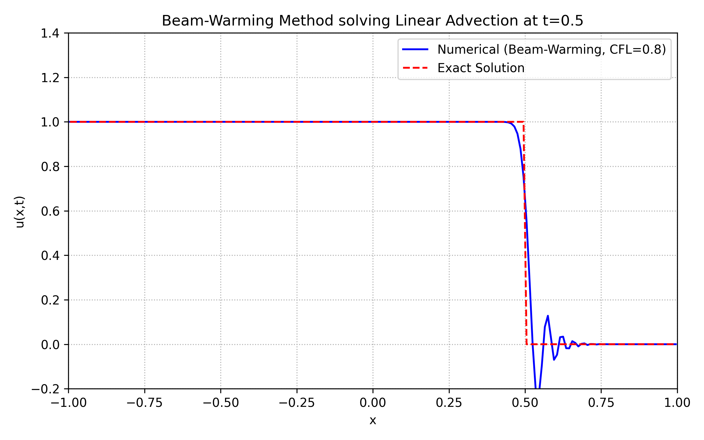
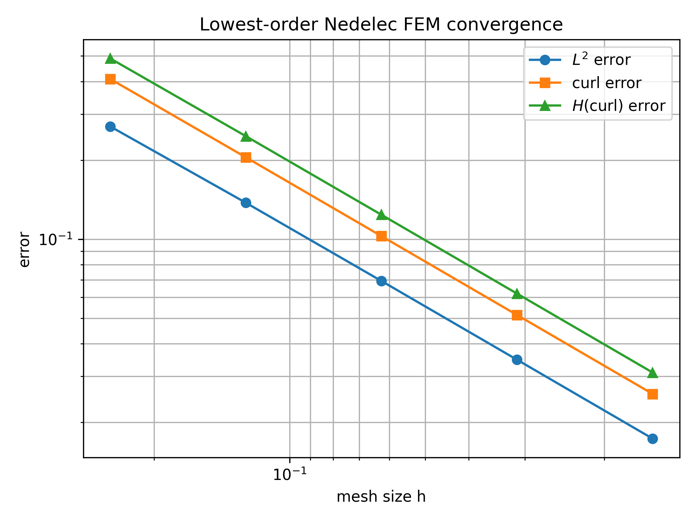
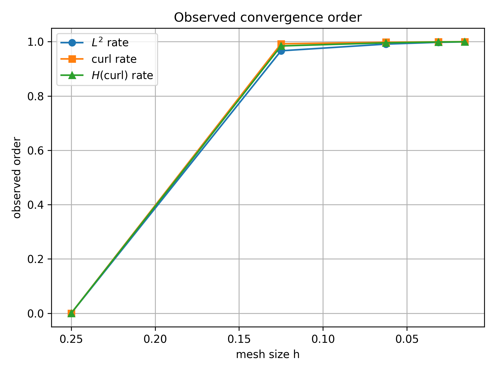
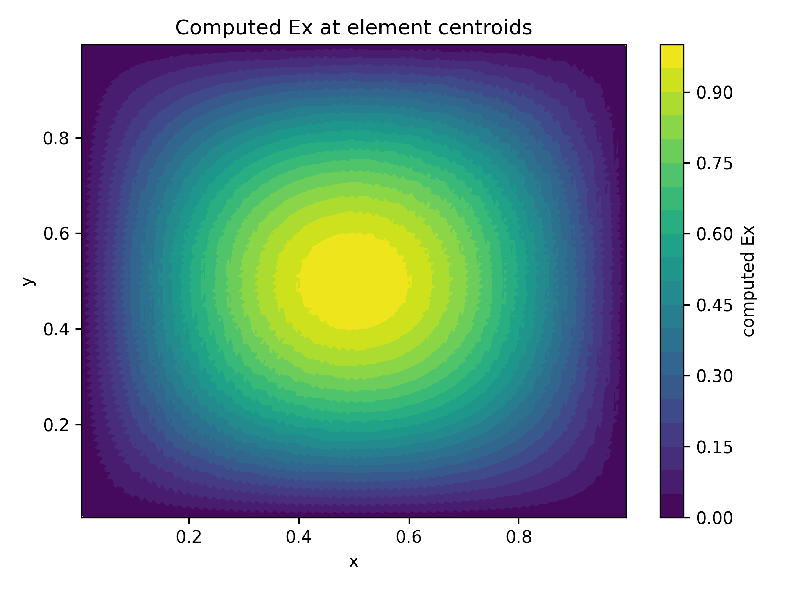
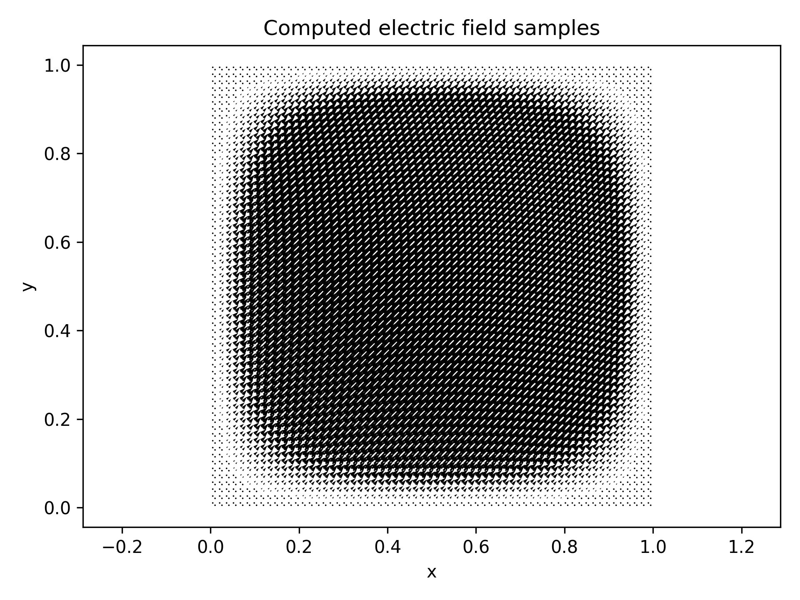

代码实验
LearningCode 中的 Python、C++、数据与数值实验结果按模块整理。
42 个材料条目展开 37 项
本页按模块直接展示代码、配置、Markdown、CSV 预览与图片预览；PDF 和二进制数据只作为支撑材料参与整理。
CPPCSV 1，代码 22，文本 3 · 已展开 26 项
CPP/AddressBookManagementSystem/AddressBookManagementSystem.cpp
该文件为空。
CPP/DeepLearning/CMakeLists.txt
cmake
cmake_minimum_required(VERSION 3.20)
project(DeepLearning)
# 核心：向上跳三级找到 libtorch
set(LIBTORCH_PATH "${CMAKE_CURRENT_SOURCE_DIR}/../../../libtorch")
# 验证路径是否存在（跨平台调试利器，省去猜路径的烦恼）
if(NOT EXISTS "${LIBTORCH_PATH}")
message(FATAL_ERROR "找不到 LibTorch!请检查路径: ${LIBTORCH_PATH}")
endif()
# 告诉 CMake 在这里寻找 TorchConfig.cmake
set(CMAKE_PREFIX_PATH "${LIBTORCH_PATH}")
find_package(Torch REQUIRED)
# 标准配置
set(CMAKE_CXX_STANDARD 17)
add_executable(DeepLearning main.cpp)
target_link_libraries(DeepLearning "${TORCH_LIBRARIES}")
# Windows 自动拷贝 DLL 逻辑 (跨设备必带)
if(MSVC)
add_custom_command(TARGET DeepLearning POST_BUILD
COMMAND ${CMAKE_COMMAND} -E copy_if_different
"${TORCH_INSTALL_PREFIX}/lib/*.dll"
"$<TARGET_FILE_DIR:DeepLearning>")
endif()CPP/DeepLearning/main.cpp
cpp
#include <torch/torch.h>
#include <iostream>
int main() {
std::cout << "PyTorch 版本: "
<< TORCH_VERSION_MAJOR << "."
<< TORCH_VERSION_MINOR << "."
<< TORCH_VERSION_PATCH << std::endl;
// --- 1. 设备选择逻辑 (适配 M4 和 Windows NVIDIA) ---
torch::Device device(torch::kCPU);
if (torch::cuda::is_available()) {
std::cout << "检测到运行环境: Windows/Linux + NVIDIA GPU (CUDA)" << std::endl;
device = torch::Device(torch::kCUDA);
}
// 注意：在 2.1.x 版本，使用 torch::mps::is_available() 是标准做法
else if (torch::mps::is_available()) {
std::cout << "检测到运行环境: Mac M4 + Apple Silicon GPU (MPS)" << std::endl;
device = torch::Device(torch::kMPS);
}
else {
std::cout << "检测到运行环境: 仅 CPU 模式" << std::endl;
}
try {
// --- 2. 创建一个线性模型 ---
// 输入特征 5，输出特征 2
torch::nn::Linear model(5, 2);
// 将模型移动到指定设备 (M4 会移动到 GPU 核心)
model->to(device);
// --- 3. 构造数据并进行计算 ---
// 创建一个随机输入 [BatchSize=1, Features=5]
// 注意：创建张量时直接指定 device 和数据类型
auto input = torch::randn({1, 5}, torch::TensorOptions().device(device).dtype(torch::kFloat32));
// 前向传播
auto output = model->forward(input);
// --- 4. 打印结果 ---
std::cout << "\n输入张量 (" << device << "):\n" << input << std::endl;
std::cout << "模型输出 (" << device << "):\n" << output << std::endl;
// 计算一个简单的损失（测试反向传播路径是否打通）
auto target = torch::zeros({1, 2}, device);
auto loss = torch::mse_loss(output, target);
std::cout << "初始损失值: " << loss.item<float>() << std::endl;
} catch (const c10::Error& e) {
std::cerr << "运行出错: " << e.msg() << std::endl;
return -1;
}
return 0;
}CPP/LearningCPP/CMakeLists.txt
cmake
cmake_minimum_required(VERSION 3.20)
project(LearningCPP)
# 1. 自动管理 Eigen 5.0.0 依赖 (无需手动下载，无需担心路径)
include(FetchContent)
FetchContent_Declare(
eigen
GIT_REPOSITORY https://gitlab.com/libeigen/eigen.git
GIT_TAG 5.0.0
)
FetchContent_MakeAvailable(eigen)
# 2. 项目全局设置
set(CMAKE_CXX_STANDARD 17)
set(CMAKE_CXX_STANDARD_REQUIRED ON)
set(CMAKE_BUILD_TYPE Debug)
# 3. 定义辅助函数：减少重复代码，自动关联 Eigen
function(add_learning_task name source)
add_executable(${name} ${source})
# 将 Eigen 自动链接到每个目标上，无需手动 include_directories
target_link_libraries(${name} PRIVATE Eigen3::Eigen)
endfunction()
# 4. 为每个练习文件创建独立的运行目标
add_learning_task(MainTask main.cpp)
add_learning_task(ListSort listsort.cpp)
add_learning_task(TestFile testfile.cpp)
add_learning_task(WriteFile writefile.cpp)CPP/LearningCPP/e5_output.csv
CSV 数据预览，显示前 80 行，其余 19922 行未展开。
CPP/LearningCPP/e5_output.csv
csv
t,y1,y2,y3,y4
0.0000000000e+00,1.7600000000e-03,0.0000000000e+00,0.0000000000e+00,0.0000000000e+00
5.0000000000e-07,1.7600000000e-03,6.9432000000e-19,6.9432000000e-19,0.0000000000e+00
1.0000000000e-06,1.7600000000e-03,1.3886400000e-18,1.3819189824e-18,6.7210176000e-21
1.5000000000e-06,1.7600000000e-03,2.0829600000e-18,2.0628658040e-18,2.0094195975e-20
2.0000000000e-06,1.7600000000e-03,2.7772800000e-18,2.7372286163e-18,4.0051383737e-20
2.5000000000e-06,1.7600000000e-03,3.4716000000e-18,3.4050748723e-18,6.6525127711e-20
3.0000000000e-06,1.7600000000e-03,4.1659200000e-18,4.0664713342e-18,9.9448665777e-20
3.5000000000e-06,1.7600000000e-03,4.8602400000e-18,4.7214840802e-18,1.3875591980e-19
4.0000000000e-06,1.7600000000e-03,5.5545600000e-18,5.3701785114e-18,1.8438148860e-19
4.5000000000e-06,1.7600000000e-03,6.2488800000e-18,6.0126193590e-18,2.3626064105e-19
5.0000000000e-06,1.7600000000e-03,6.9432000000e-18,6.6488706908e-18,2.9432930918e-19
5.5000000000e-06,1.7600000000e-03,7.6375200000e-18,7.2789959186e-18,3.5852408141e-19
6.0000000000e-06,1.7600000000e-03,8.3318400000e-18,7.9030578042e-18,4.2878219579e-19
6.5000000000e-06,1.7600000000e-03,9.0261600000e-18,8.5211184666e-18,5.0504153340e-19
7.0000000000e-06,1.7600000000e-03,9.7204800000e-18,9.1332393883e-18,5.8724061169e-19
7.5000000000e-06,1.7600000000e-03,1.0414800000e-17,9.7394814220e-18,6.7531857802e-19
8.0000000000e-06,1.7600000000e-03,1.1109120000e-17,1.0339904797e-17,7.6921520319e-19
8.5000000000e-06,1.7600000000e-03,1.1803440000e-17,1.0934569125e-17,8.6887087503e-19
9.0000000000e-06,1.7600000000e-03,1.2497760000e-17,1.1523533408e-17,9.7422659212e-19
9.5000000000e-06,1.7600000000e-03,1.3192080000e-17,1.2106856043e-17,1.0852239575e-18
1.0000000000e-05,1.7600000000e-03,1.3886400000e-17,1.2684594828e-17,1.2018051724e-18
1.0500000000e-05,1.7600000000e-03,1.4580720000e-17,1.3256806970e-17,1.3239130304e-18
1.1000000000e-05,1.7600000000e-03,1.5275040000e-17,1.3823549089e-17,1.4514909110e-18
1.1500000000e-05,1.7600000000e-03,1.5969360000e-17,1.4384877226e-17,1.5844827739e-18
1.2000000000e-05,1.7600000000e-03,1.6663680000e-17,1.4940846847e-17,1.7228331526e-18
1.2500000000e-05,1.7600000000e-03,1.7358000000e-17,1.5491512851e-17,1.8664871494e-18
1.3000000000e-05,1.7600000000e-03,1.8052320000e-17,1.6036929571e-17,2.0153904286e-18
1.3500000000e-05,1.7600000000e-03,1.8746640000e-17,1.6577150789e-17,2.1694892112e-18
1.4000000000e-05,1.7600000000e-03,1.9440960000e-17,1.7112229731e-17,2.3287302694e-18
1.4500000000e-05,1.7600000000e-03,2.0135280000e-17,1.7642219079e-17,2.4930609206e-18
1.5000000000e-05,1.7600000000e-03,2.0829600000e-17,1.8167170978e-17,2.6624290219e-18
1.5500000000e-05,1.7600000000e-03,2.1523920000e-17,1.8687137035e-17,2.8367829646e-18
1.6000000000e-05,1.7600000000e-03,2.2218240000e-17,1.9202168331e-17,3.0160716687e-18
1.6500000000e-05,1.7600000000e-03,2.2912560000e-17,1.9712315422e-17,3.2002445777e-18
1.7000000000e-05,1.7600000000e-03,2.3606880000e-17,2.0217628347e-17,3.3892516528e-18
1.7500000000e-05,1.7600000000e-03,2.4301200000e-17,2.0718156632e-17,3.5830433680e-18
1.8000000000e-05,1.7600000000e-03,2.4995520000e-17,2.1213949295e-17,3.7815707047e-18
1.8500000000e-05,1.7600000000e-03,2.5689840000e-17,2.1705054854e-17,3.9847851464e-18
1.9000000000e-05,1.7600000000e-03,2.6384160000e-17,2.2191521326e-17,4.1926386738e-18
1.9500000000e-05,1.7600000000e-03,2.7078480000e-17,2.2673396241e-17,4.4050837594e-18
2.0000000000e-05,1.7600000000e-03,2.7772800000e-17,2.3150726637e-17,4.6220733626e-18
2.0500000000e-05,1.7600000000e-03,2.8467120000e-17,2.3623559075e-17,4.8435609250e-18
2.1000000000e-05,1.7600000000e-03,2.9161440000e-17,2.4091939635e-17,5.0695003650e-18
2.1500000000e-05,1.7600000000e-03,2.9855760000e-17,2.4555913927e-17,5.2998460729e-18
2.2000000000e-05,1.7600000000e-03,3.0550080000e-17,2.5015527093e-17,5.5345529067e-18
2.2500000000e-05,1.7600000000e-03,3.1244400000e-17,2.5470823813e-17,5.7735761866e-18
2.3000000000e-05,1.7600000000e-03,3.1938720000e-17,2.5921848309e-17,6.0168716906e-18
2.3500000000e-05,1.7600000000e-03,3.2633040000e-17,2.6368644350e-17,6.2643956497e-18
2.4000000000e-05,1.7600000000e-03,3.3327360000e-17,2.6811255257e-17,6.5161047434e-18
2.4500000000e-05,1.7600000000e-03,3.4021680000e-17,2.7249723905e-17,6.7719560952e-18
2.5000000000e-05,1.7600000000e-03,3.4716000000e-17,2.7684092733e-17,7.0319072674e-18
2.5500000000e-05,1.7600000000e-03,3.5410320000e-17,2.8114403743e-17,7.2959162574e-18
2.6000000000e-05,1.7600000000e-03,3.6104640000e-17,2.8540698507e-17,7.5639414929e-18
2.6500000000e-05,1.7600000000e-03,3.6798960000e-17,2.8963018172e-17,7.8359418276e-18
2.7000000000e-05,1.7600000000e-03,3.7493280000e-17,2.9381403464e-17,8.1118765363e-18
2.7500000000e-05,1.7600000000e-03,3.8187600000e-17,2.9795894688e-17,8.3917053116e-18
2.8000000000e-05,1.7600000000e-03,3.8881920000e-17,3.0206531741e-17,8.6753882587e-18
2.8500000000e-05,1.7600000000e-03,3.9576240000e-17,3.0613354108e-17,8.9628858916e-18
2.9000000000e-05,1.7600000000e-03,4.0270560000e-17,3.1016400871e-17,9.2541591288e-18
2.9500000000e-05,1.7600000000e-03,4.0964880000e-17,3.1415710711e-17,9.5491692894e-18
3.0000000000e-05,1.7600000000e-03,4.1659200000e-17,3.1811321912e-17,9.8478780884e-18
3.0500000000e-05,1.7600000000e-03,4.2353520000e-17,3.2203272367e-17,1.0150247633e-17
3.1000000000e-05,1.7600000000e-03,4.3047840000e-17,3.2591599580e-17,1.0456240420e-17
3.1500000000e-05,1.7600000000e-03,4.3742160000e-17,3.2976340672e-17,1.0765819328e-17
3.2000000000e-05,1.7600000000e-03,4.4436480000e-17,3.3357532382e-17,1.1078947618e-17
3.2500000000e-05,1.7600000000e-03,4.5130800000e-17,3.3735211074e-17,1.1395588926e-17
3.3000000000e-05,1.7600000000e-03,4.5825120000e-17,3.4109412739e-17,1.1715707261e-17
3.3500000000e-05,1.7600000000e-03,4.6519440000e-17,3.4480172998e-17,1.2039267002e-17
3.4000000000e-05,1.7600000000e-03,4.7213760000e-17,3.4847527109e-17,1.2366232891e-17
3.4500000000e-05,1.7600000000e-03,4.7908080000e-17,3.5211509968e-17,1.2696570032e-17
3.5000000000e-05,1.7600000000e-03,4.8602400000e-17,3.5572156114e-17,1.3030243886e-17
3.5500000000e-05,1.7600000000e-03,4.9296720000e-17,3.5929499731e-17,1.3367220269e-17
3.6000000000e-05,1.7600000000e-03,4.9991040000e-17,3.6283574653e-17,1.3707465347e-17
3.6500000000e-05,1.7600000000e-03,5.0685360000e-17,3.6634414368e-17,1.4050945632e-17
3.7000000000e-05,1.7600000000e-03,5.1379680000e-17,3.6982052021e-17,1.4397627979e-17
3.7500000000e-05,1.7600000000e-03,5.2074000000e-17,3.7326520417e-17,1.4747479583e-17
3.8000000000e-05,1.7600000000e-03,5.2768320000e-17,3.7667852026e-17,1.5100467974e-17
3.8500000000e-05,1.7600000000e-03,5.3462640000e-17,3.8006078982e-17,1.5456561018e-17
3.9000000000e-05,1.7600000000e-03,5.4156960000e-17,3.8341233095e-17,1.5815726905e-17CPP/LearningCPP/listsort.cpp
cpp
#include <filesystem>
#include <iostream>
#include <string>
#include <chrono>
#include <vector>
class Sort {
public:
template<typename T>
static void selection_sort(std::vector<T>& arr) {
std::size_t n = arr.size();
if (arr.empty()) {
return;
}
for (int i = 0;i < n;i++) {
int min_index = i;
for (int j = i + 1;j < n;j++) {
if (arr[j] < arr[min_index]) {
min_index = j;
}
}
std::swap(arr[i], arr[min_index]);
}
}
template<typename T>
static void insertion_sort(std::vector<T>& arr) {
std::size_t n = arr.size();
if (arr.empty()) {
return;
}
for (int i = 0;i < n;i++) {
for (int j = i;j>0 && arr[j] < arr [j-1];j--) {
std::swap(arr[j], arr[j-1]);
}
}
}
template<typename T>
static void shell_sort(std::vector<T>& arr) {
std::size_t n = arr.size();
int h = 1;
while (h < n/3) {
h = 3 * h + 1;
}
while (h >= 1) {
for (int i = h; i < n; i++) {
for (int j = i; j >= h && arr[j]<arr[j-h]; j -= h) {
std::swap(arr[j], arr[j-h]);
}
}
h = h / 3;
}
}
};
class Timer {
public:
template<typename Func, typename... Args>
static void measure_time(const std::string& label, Func func, Args&&... args) {
std::cout << "--- 正在运行: " << label << " ---" << std::endl;
auto start = std::chrono::high_resolution_clock::now();
func(std::forward<Args>(args)...);
auto end = std::chrono::high_resolution_clock::now();
std::chrono::duration<double, std::milli> elapsed = end - start;
std::cout << "耗时: " << elapsed.count() << " ms" << std::endl;
std::cout << "-----------------------------------" << std::endl;
}
};
class LinkList {
public:
// 节点结构体
template<typename T>
struct Listnode{
T data;
Listnode* next;
Listnode(T x): data(x),next(nullptr){}
};
//寻找target的上一个节点
template<typename T>
static Listnode<T>* find_Prev(Listnode<T>* Head,Listnode<T>* target){
if(Head == nullptr || target == Head){
return nullptr;
}
Listnode<T>* temp = Head;
while (temp != nullptr && temp->next != target){
temp = temp->next;
}
return (temp->next == target) ? temp : nullptr;
}
// 将P节点插入到L后边
template<typename T>
static bool ListInsert(Listnode<T>* L,Listnode<T>* P) {
Listnode<T> *n1 = L->next;
L->next = P;
P->next = n1;
return true;
}
// 删除节点
template<typename T>
static bool Remove(Listnode<T>* &Head,Listnode<T>* &P){
if(P == nullptr || Head == nullptr){
return false;
}
if (P == Head){
Head = Head->next;
delete P;
P = nullptr;
return true;
}
else {
Listnode<T>* prev = find_Prev(Head,P);
if (prev == nullptr){
return false;
}
prev->next = P->next;
delete P;
P = nullptr;
return true;
}
}
};
int main() {
std::vector<std::string> arr= {"cherry", "apple", "banana", "Apple"};
Sort::shell_sort<std::string>(arr);
std::cout << "Sorted array: \n";
for (const auto &x : arr) {
std::cout << x << " ";
}
std::cout << std::endl;
Timer::measure_time("Shell Sort", Sort::shell_sort<std::string>, arr);
return 0;
}CPP/LearningCPP/main.cpp
cpp
#include <Eigen/Sparse>
#include <Eigen/Dense>
#include <Eigen/SparseLU>
#include <array>
#include <cmath>
#include <fstream>
#include <iostream>
#include <map>
#include <string>
#include <vector>
struct Point {
double x, y;
};
struct Triangle {
std::array<int, 3> v;
std::array<int, 3> edge;
};
struct Edge {
int a, b; // global orientation: a -> b, with a < b
int count = 0; // number of adjacent triangles
int dof = -1; // -1 means boundary edge, otherwise interior unknown id
};
struct Mesh {
std::vector<Point> nodes;
std::vector<Triangle> tris;
std::vector<Edge> edges;
};
static constexpr double PI = 3.141592653589793238462643383279502884;
static std::pair<int, int> edge_key(int i, int j) {
return (i < j) ? std::make_pair(i, j) : std::make_pair(j, i);
}
Mesh make_unit_square_mesh(int n) {
Mesh mesh;
mesh.nodes.reserve((n + 1) * (n + 1));
for (int j = 0; j <= n; ++j) {
for (int i = 0; i <= n; ++i) {
mesh.nodes.push_back({double(i) / n, double(j) / n});
}
}
auto vid = [n](int i, int j) { return j * (n + 1) + i; };
mesh.tris.reserve(2 * n * n);
for (int j = 0; j < n; ++j) {
for (int i = 0; i < n; ++i) {
int v00 = vid(i, j);
int v10 = vid(i + 1, j);
int v01 = vid(i, j + 1);
int v11 = vid(i + 1, j + 1);
// Two counter-clockwise triangles in each square.
mesh.tris.push_back({{v00, v10, v11}, {-1, -1, -1}});
mesh.tris.push_back({{v00, v11, v01}, {-1, -1, -1}});
}
}
std::map<std::pair<int, int>, int> edge_id;
for (auto& tri : mesh.tris) {
std::array<std::pair<int, int>, 3> local_edges = {
std::make_pair(tri.v[0], tri.v[1]),
std::make_pair(tri.v[1], tri.v[2]),
std::make_pair(tri.v[2], tri.v[0])
};
for (int e = 0; e < 3; ++e) {
auto key = edge_key(local_edges[e].first, local_edges[e].second);
auto it = edge_id.find(key);
if (it == edge_id.end()) {
int id = static_cast<int>(mesh.edges.size());
edge_id[key] = id;
mesh.edges.push_back({key.first, key.second, 1, -1});
tri.edge[e] = id;
} else {
tri.edge[e] = it->second;
mesh.edges[it->second].count += 1;
}
}
}
int ndof = 0;
for (auto& e : mesh.edges) {
if (e.count == 2) {
e.dof = ndof++;
}
}
return mesh;
}
int local_vertex_index(const Triangle& tri, int global_vertex) {
for (int i = 0; i < 3; ++i) {
if (tri.v[i] == global_vertex) return i;
}
return -1;
}
struct LocalData {
double area;
std::array<Eigen::Vector2d, 3> grad_lambda;
};
LocalData triangle_data(const Mesh& mesh, const Triangle& tri) {
const Point& p0 = mesh.nodes[tri.v[0]];
const Point& p1 = mesh.nodes[tri.v[1]];
const Point& p2 = mesh.nodes[tri.v[2]];
double twice_area = (p1.x - p0.x) * (p2.y - p0.y)
- (p2.x - p0.x) * (p1.y - p0.y);
if (twice_area <= 0.0) {
throw std::runtime_error("Triangle orientation is not counter-clockwise.");
}
LocalData d;
d.area = 0.5 * twice_area;
d.grad_lambda[0] = Eigen::Vector2d(p1.y - p2.y, p2.x - p1.x) / twice_area;
d.grad_lambda[1] = Eigen::Vector2d(p2.y - p0.y, p0.x - p2.x) / twice_area;
d.grad_lambda[2] = Eigen::Vector2d(p0.y - p1.y, p1.x - p0.x) / twice_area;
return d;
}
inline double cross2(const Eigen::Vector2d& a, const Eigen::Vector2d& b) {
return a.x() * b.y() - a.y() * b.x();
}
double int_lambda_product(double area, int p, int q) {
return (p == q) ? area / 6.0 : area / 12.0;
}
Eigen::Vector2d nedelec_basis_value(
const std::array<Eigen::Vector2d, 3>& grad_lambda,
const Eigen::Vector3d& lambda,
int a,
int b
) {
// N_ab = lambda_a grad(lambda_b) - lambda_b grad(lambda_a)
return lambda[a] * grad_lambda[b] - lambda[b] * grad_lambda[a];
}
double nedelec_basis_curl(
const std::array<Eigen::Vector2d, 3>& grad_lambda,
int a,
int b
) {
// curl N_ab = 2 * (grad lambda_a x grad lambda_b)
return 2.0 * cross2(grad_lambda[a], grad_lambda[b]);
}
Eigen::Matrix3d local_matrix(const Mesh& mesh, const Triangle& tri, double k0) {
LocalData data = triangle_data(mesh, tri);
Eigen::Matrix3d A = Eigen::Matrix3d::Zero();
std::array<std::pair<int, int>, 3> oriented_local_edge_vertices;
for (int e = 0; e < 3; ++e) {
const Edge& ge = mesh.edges[tri.edge[e]];
int a_local = local_vertex_index(tri, ge.a);
int b_local = local_vertex_index(tri, ge.b);
oriented_local_edge_vertices[e] = {a_local, b_local};
}
std::array<double, 3> curlN{};
for (int i = 0; i < 3; ++i) {
int a = oriented_local_edge_vertices[i].first;
int b = oriented_local_edge_vertices[i].second;
curlN[i] = nedelec_basis_curl(data.grad_lambda, a, b);
}
for (int i = 0; i < 3; ++i) {
int ai = oriented_local_edge_vertices[i].first;
int bi = oriented_local_edge_vertices[i].second;
for (int j = 0; j < 3; ++j) {
int aj = oriented_local_edge_vertices[j].first;
int bj = oriented_local_edge_vertices[j].second;
double stiffness = data.area * curlN[j] * curlN[i];
// Exact mass integral of N_j dot N_i on a triangle.
double mass = 0.0;
mass += data.grad_lambda[bj].dot(data.grad_lambda[bi]) * int_lambda_product(data.area, aj, ai);
mass -= data.grad_lambda[bj].dot(data.grad_lambda[ai]) * int_lambda_product(data.area, aj, bi);
mass -= data.grad_lambda[aj].dot(data.grad_lambda[bi]) * int_lambda_product(data.area, bj, ai);
mass += data.grad_lambda[aj].dot(data.grad_lambda[ai]) * int_lambda_product(data.area, bj, bi);
A(i, j) = stiffness - k0 * k0 * mass;
}
}
return A;
}
Eigen::Vector2d exact_E(double x, double y) {
double s = std::sin(PI * x) * std::sin(PI * y);
return Eigen::Vector2d(s, s);
}
double exact_curl_E(double x, double y) {
return PI * (std::cos(PI * x) * std::sin(PI * y)
- std::sin(PI * x) * std::cos(PI * y));
}
Eigen::Vector2d rhs_f(double x, double y, double k0) {
double sx = std::sin(PI * x);
double sy = std::sin(PI * y);
double cx = std::cos(PI * x);
double cy = std::cos(PI * y);
// q = curl E = pi(cx sy - sx cy)
// curl q = (dq/dy, -dq/dx) = pi^2(cx cy + sx sy) * (1, 1)
double curlcurl_component = PI * PI * (cx * cy + sx * sy);
double mass_component = k0 * k0 * sx * sy;
double value = curlcurl_component - mass_component;
return Eigen::Vector2d(value, value);
}
Eigen::Vector3d barycentric_to_xy(
const Mesh& mesh,
const Triangle& tri,
const Eigen::Vector3d& lambda
) {
Eigen::Vector3d out(0.0, 0.0, 0.0);
for (int i = 0; i < 3; ++i) {
const Point& p = mesh.nodes[tri.v[i]];
out[0] += lambda[i] * p.x;
out[1] += lambda[i] * p.y;
}
return out;
}
Eigen::Vector3d local_rhs(const Mesh& mesh, const Triangle& tri, double k0) {
LocalData data = triangle_data(mesh, tri);
std::array<std::pair<int, int>, 3> oriented_local_edge_vertices;
for (int e = 0; e < 3; ++e) {
const Edge& ge = mesh.edges[tri.edge[e]];
int a_local = local_vertex_index(tri, ge.a);
int b_local = local_vertex_index(tri, ge.b);
oriented_local_edge_vertices[e] = {a_local, b_local};
}
// 7-point Dunavant quadrature, weights sum to 1 on the reference triangle.
const double w0 = 0.225;
const double w1 = 0.132394152788506;
const double w2 = 0.125939180544827;
const double a1 = 0.059715871789770;
const double b1 = 0.470142064105115;
const double a2 = 0.797426985353087;
const double b2 = 0.101286507323456;
std::vector<std::pair<Eigen::Vector3d, double>> quad = {
{Eigen::Vector3d(1.0 / 3.0, 1.0 / 3.0, 1.0 / 3.0), w0},
{Eigen::Vector3d(a1, b1, b1), w1},
{Eigen::Vector3d(b1, a1, b1), w1},
{Eigen::Vector3d(b1, b1, a1), w1},
{Eigen::Vector3d(a2, b2, b2), w2},
{Eigen::Vector3d(b2, a2, b2), w2},
{Eigen::Vector3d(b2, b2, a2), w2}
};
Eigen::Vector3d rhs = Eigen::Vector3d::Zero();
for (const auto& q : quad) {
const Eigen::Vector3d& lam = q.first;
double weight = q.second * data.area;
Eigen::Vector3d xy = barycentric_to_xy(mesh, tri, lam);
Eigen::Vector2d f = rhs_f(xy[0], xy[1], k0);
for (int i = 0; i < 3; ++i) {
int a = oriented_local_edge_vertices[i].first;
int b = oriented_local_edge_vertices[i].second;
Eigen::Vector2d Ni = nedelec_basis_value(data.grad_lambda, lam, a, b);
rhs[i] += weight * f.dot(Ni);
}
}
return rhs;
}
struct Result {
int n;
int ndof;
double h;
double l2_error;
double curl_error;
double hcurl_error;
};
Result solve_level(int n, double k0, const std::string& solution_prefix, bool write_solution) {
Mesh mesh = make_unit_square_mesh(n);
int ndof = 0;
for (const auto& e : mesh.edges) {
if (e.dof >= 0) ndof = std::max(ndof, e.dof + 1);
}
using SpMat = Eigen::SparseMatrix<double>;
using Triplet = Eigen::Triplet<double>;
std::vector<Triplet> trips;
trips.reserve(static_cast<std::size_t>(ndof) * 10);
Eigen::VectorXd b = Eigen::VectorXd::Zero(ndof);
for (const auto& tri : mesh.tris) {
Eigen::Matrix3d Ak = local_matrix(mesh, tri, k0);
Eigen::Vector3d bk = local_rhs(mesh, tri, k0);
for (int i = 0; i < 3; ++i) {
int gi = mesh.edges[tri.edge[i]].dof;
if (gi < 0) continue; // homogeneous PEC boundary edge
b[gi] += bk[i];
for (int j = 0; j < 3; ++j) {
int gj = mesh.edges[tri.edge[j]].dof;
if (gj < 0) continue;
trips.emplace_back(gi, gj, Ak(i, j));
}
}
}
SpMat A(ndof, ndof);
A.setFromTriplets(trips.begin(), trips.end());
A.makeCompressed();
Eigen::SparseLU<SpMat> solver;
solver.analyzePattern(A);
solver.factorize(A);
if (solver.info() != Eigen::Success) {
throw std::runtime_error("SparseLU factorization failed.");
}
Eigen::VectorXd x = solver.solve(b);
if (solver.info() != Eigen::Success) {
throw std::runtime_error("SparseLU solve failed.");
}
// Error calculation by quadrature.
double l2_sq = 0.0;
double curl_sq = 0.0;
const double w0 = 0.225;
const double w1 = 0.132394152788506;
const double w2 = 0.125939180544827;
const double a1 = 0.059715871789770;
const double b1q = 0.470142064105115;
const double a2 = 0.797426985353087;
const double b2 = 0.101286507323456;
std::vector<std::pair<Eigen::Vector3d, double>> quad = {
{Eigen::Vector3d(1.0 / 3.0, 1.0 / 3.0, 1.0 / 3.0), w0},
{Eigen::Vector3d(a1, b1q, b1q), w1},
{Eigen::Vector3d(b1q, a1, b1q), w1},
{Eigen::Vector3d(b1q, b1q, a1), w1},
{Eigen::Vector3d(a2, b2, b2), w2},
{Eigen::Vector3d(b2, a2, b2), w2},
{Eigen::Vector3d(b2, b2, a2), w2}
};
for (const auto& tri : mesh.tris) {
LocalData data = triangle_data(mesh, tri);
std::array<std::pair<int, int>, 3> oriented_local_edge_vertices;
std::array<double, 3> coeff{};
std::array<double, 3> curlN{};
for (int e = 0; e < 3; ++e) {
const Edge& ge = mesh.edges[tri.edge[e]];
int a = local_vertex_index(tri, ge.a);
int bb = local_vertex_index(tri, ge.b);
oriented_local_edge_vertices[e] = {a, bb};
curlN[e] = nedelec_basis_curl(data.grad_lambda, a, bb);
coeff[e] = (ge.dof >= 0) ? x[ge.dof] : 0.0;
}
double curlEh = 0.0;
for (int e = 0; e < 3; ++e) curlEh += coeff[e] * curlN[e];
for (const auto& q : quad) {
const Eigen::Vector3d& lam = q.first;
double weight = q.second * data.area;
Eigen::Vector3d xy = barycentric_to_xy(mesh, tri, lam);
Eigen::Vector2d Eh = Eigen::Vector2d::Zero();
for (int e = 0; e < 3; ++e) {
int a = oriented_local_edge_vertices[e].first;
int bb = oriented_local_edge_vertices[e].second;
Eh += coeff[e] * nedelec_basis_value(data.grad_lambda, lam, a, bb);
}
Eigen::Vector2d err = exact_E(xy[0], xy[1]) - Eh;
double cerr = exact_curl_E(xy[0], xy[1]) - curlEh;
l2_sq += weight * err.squaredNorm();
curl_sq += weight * cerr * cerr;
}
}
if (write_solution) {
std::ofstream out(solution_prefix + "_solution.csv");
out << "x,y,Ex,Ey,Ex_exact,Ey_exact\n";
for (const auto& tri : mesh.tris) {
LocalData data = triangle_data(mesh, tri);
Eigen::Vector3d lam(1.0 / 3.0, 1.0 / 3.0, 1.0 / 3.0);
Eigen::Vector3d xy = barycentric_to_xy(mesh, tri, lam);
Eigen::Vector2d Eh = Eigen::Vector2d::Zero();
for (int e = 0; e < 3; ++e) {
const Edge& ge = mesh.edges[tri.edge[e]];
int a = local_vertex_index(tri, ge.a);
int bb = local_vertex_index(tri, ge.b);
double c = (ge.dof >= 0) ? x[ge.dof] : 0.0;
Eh += c * nedelec_basis_value(data.grad_lambda, lam, a, bb);
}
Eigen::Vector2d Ee = exact_E(xy[0], xy[1]);
out << xy[0] << ',' << xy[1] << ',' << Eh[0] << ',' << Eh[1] << ','
<< Ee[0] << ',' << Ee[1] << '\n';
}
}
Result r;
r.n = n;
r.ndof = ndof;
r.h = 1.0 / n;
r.l2_error = std::sqrt(l2_sq);
r.curl_error = std::sqrt(curl_sq);
r.hcurl_error = std::sqrt(l2_sq + curl_sq);
return r;
}
int main(int argc, char** argv) {
try {
double k0 = 1.0;
std::string outname = "convergence.csv";
bool write_solution = true;
std::vector<int> levels = {4, 8, 16, 32, 64};
if (argc >= 2) {
levels.clear();
for (int i = 1; i < argc; ++i) {
levels.push_back(std::stoi(argv[i]));
}
}
std::vector<Result> results;
results.reserve(levels.size());
for (int n : levels) {
bool dump_solution = write_solution && (n == levels.back());
Result r = solve_level(n, k0, "nedelec2d", dump_solution);
results.push_back(r);
std::cout << "n=" << r.n
<< ", ndof=" << r.ndof
<< ", h=" << r.h
<< ", L2=" << r.l2_error
<< ", curl=" << r.curl_error
<< ", Hcurl=" << r.hcurl_error
<< std::endl;
}
std::ofstream csv(outname);
csv << "n,ndof,h,L2_error,L2_rate,curl_error,curl_rate,Hcurl_error,Hcurl_rate\n";
for (std::size_t i = 0; i < results.size(); ++i) {
double l2_rate = 0.0;
double curl_rate = 0.0;
double hcurl_rate = 0.0;
if (i > 0) {
const auto& prev = results[i - 1];
const auto& cur = results[i];
double denom = std::log(prev.h / cur.h);
l2_rate = std::log(prev.l2_error / cur.l2_error) / denom;
curl_rate = std::log(prev.curl_error / cur.curl_error) / denom;
hcurl_rate = std::log(prev.hcurl_error / cur.hcurl_error) / denom;
}
csv << results[i].n << ','
<< results[i].ndof << ','
<< results[i].h << ','
<< results[i].l2_error << ','
<< l2_rate << ','
<< results[i].curl_error << ','
<< curl_rate << ','
<< results[i].hcurl_error << ','
<< hcurl_rate << '\n';
}
std::cout << "\nSaved convergence table to " << outname << std::endl;
std::cout << "Saved final-level solution samples to nedelec2d_solution.csv" << std::endl;
} catch (const std::exception& e) {
std::cerr << "Error: " << e.what() << std::endl;
return 1;
}
return 0;
}CPP/LearningCPP/MathCPP/Buffer.cpp
cpp
#include <stdio.h>
#include <string.h>
#include <fstream>
// 功能：实现buffer.h中的各个缓冲类的函数
#include "buffer.h"
#include "cbuffer.h"
DOUBLE defaulterr = 1e-8; // 缺省的误差调整值
int doadjust = 1; // 决定数据是否根据误差值自动向整数靠扰，
// 其实是向小数点后三位靠扰
/* 下面的六个指针分别初始化指向产生六个缓冲区长度为空的六个
缓冲区，其中两个实数缓冲区，两个长整数缓冲区，两个复数缓冲区
其中实数，长整数和复数这三种数据类型的每一种都有磁盘和内存两种
缓冲区。如果数据较小时可以存放在内存中，而数据量很大时则存放在
临时文件构成的磁盘缓冲区中。这六个空缓冲区并不真正用来存放数据，
而是用来产生出新的与自己一样的缓冲区，因为它们都是抽象类buffer的
子类，所以都将被settomemory函数或者settodisk函数赋给三个buffer类的
指针，使得getnewbuffer,getnewcbuffer和getnewlbuffer三个函数能够从这些
缓冲区中用抽象类函数产生同样类型的缓冲区。
总的想法是，在以后编写的计算各种矩阵或者行列式，或者其它的大量
数据的运算时，只要调用一次settomemroy或者settodisk函数，那么用户
不必改写一行代码，就可以照算不误，而存储媒体已经改变。
*/
static membuffer *memorybuffer = new membuffer; // 实数内存缓冲区指针
static diskbuffer *diskfilebuffer = new diskbuffer; // 实数磁盘缓冲区指针
static lmembuffer *memorylbuffer = new lmembuffer; // 长整数内存缓冲区指针
static ldiskbuffer *diskfilelbuffer = new ldiskbuffer; // 长整数磁盘缓冲区指针
static memcbuffer *memorycbuffer = new memcbuffer; // 复数内存缓冲区指针
static diskcbuffer *diskfilecbuffer = new diskcbuffer; // 复数磁盘缓冲区指针
/* 以下三个缺省缓冲区指针为全局变量，用户可以定义自己的缓冲区
类，并在产生静态实例变量后将其指针赋予它们 */
buffer *defbuffer = memorybuffer; // 缺省实数缓冲区指针
lbuffer *deflbuffer = memorylbuffer; // 缺省长整数缓冲区指针
cbuffer *defcbuffer = memorycbuffer; // 缺省复数缓冲区指针
/* 产生一个新的容量为n个实数的实数缓冲区，返回此缓冲区指针，
缓冲区的类型与defbuffer指向的变量的子类类型相同 */
buffer * getnewbuffer(size_t n){
return defbuffer->newbuf(n);
}
/* 产生一个新的容量为n个长整数的长整数缓冲区，返回此缓冲区指针，
缓冲区的类型与deflbuffer指向的变量的子类类型相同 */
lbuffer * getnewlbuffer(size_t n){
return deflbuffer->newbuf(n);
}
/* 产生一个新的容量为n个复数的复数缓冲区，返回此缓冲区指针，
缓冲区的类型与defcbuffer指向的变量的子类类型相同 */
cbuffer * getnewcbuffer(size_t n){
return defcbuffer->newbuf(n);
}
// 将各实数，长整数和复数的缺省的缓冲区指针指向相应的磁盘缓冲区指针
void settodisk()
{
defbuffer = diskfilebuffer;
deflbuffer = diskfilelbuffer;
defcbuffer = diskfilecbuffer;
}
// 将各实数，长整数和复数的缺省的缓冲区指针指向相应的内存缓冲区指针
void settomemory()
{
defbuffer = memorybuffer;
deflbuffer = memorylbuffer;
defcbuffer = memorycbuffer;
}
std::ostream& operator<<(std::ostream& o, buffer& b)
{
size_t maxitem = 5;
for(size_t i=0; i<b.len(); i++) {
o << b[i] << '\t';
if(((i+1) % maxitem)==0)
o << std::endl;
}
o << std::endl;
return o;
}
// 将实数缓冲区的第n个实数的值设为d，并返回一个实数缓冲区的
// 指针，此指针一般就是指向自己，而在一个缓冲区的引用数多于一个时
// 此函数将先克隆出一个新的缓冲区，此新的缓冲区的引用数为1，并对此
// 新的缓冲区的第n个实数的值设为d，然后返加新缓冲区的指针
buffer* buffer::set(size_t n, DOUBLE d)
{
// 如调整标志设置，则调整
if(doadjust) adjust(d);
if(refnum == 1) { // 如果引用数为1，则将第n个实数的值设为d，并返回自己
// 的指针
retrieve(n) = d;
return this;
}
refnum --; // 引用数大于1，因此将本缓冲区的引用数减1
buffer * b;
b = clone(); // 克隆一个内容同自己一样的新缓冲区
(b->retrieve(n)) = d; // 将新缓冲区的第n个实数的值设为d
return b; // 返回新缓冲区的指针
}
buffer* membuffer::clone() // 克隆一个内容和自己一样的实数内存缓冲区，并返回其指针
{
buffer* b;
b = new membuffer(length); // 建立一个新的实数内存缓冲区，尺寸和自己的一样
if(length > 0) // 如果自己有内容，将全部拷贝到新产生的缓冲区中
for(size_t i=0; i<length; i++)
(b->retrieve(i)) = (*this)[i];
return b;
}
// 实数磁盘缓冲区构造函数
diskbuffer::diskbuffer(size_t lth):buffer(),length(lth),n(0),buf(0.0)
{
// tempfp = tmpfile(); // 打开一新的临时文件，指针赋给tempfp
tmpfile_s(&tempfp);
}
// 实数磁盘缓冲区的析构函数
diskbuffer::~diskbuffer()
{
fclose(tempfp); // 关闭临时文件
}
void diskbuffer::alloc(size_t num) // 将磁盘缓冲区重新定为尺寸为num
{
length = num;
if(!tempfp) // 如果临时文件尚未打开，则打开临时文件
// tempfp = tmpfile();
tmpfile_s(&tempfp);
n = 0; // 当前缓冲区指针设在开始，就是0处
}
void diskbuffer::release() // 释放磁盘缓冲区
{
fclose(tempfp); // 关闭临时文件
buf = 0.0;
length = 0;
}
DOUBLE& diskbuffer::retrieve(size_t i) // 返回实数磁盘缓冲区的第i个实数
{
long off;
off = (long)n*sizeof(DOUBLE); // 计算出当前指针n对应的文件的偏移量
fseek(tempfp, off, SEEK_SET); // 移动文件指针到给定的偏移量处
fwrite(&buf, sizeof(DOUBLE), 1, tempfp); // 将当前的buf中值写到文件中
off = (long)i*sizeof(DOUBLE); // 计算第i个实数在文件的什么位置
fseek(tempfp, off, SEEK_SET); // 移动文件指针到给定的偏移量处
fread(&buf, sizeof(DOUBLE), 1, tempfp); // 读回所需的实数值到buf中
n = i; // 并将n改为i
return buf; // 返回读出的实数的引用
}
buffer* diskbuffer::clone() // 克隆一个新的内容与自己一样的实数磁盘缓冲区
{
buffer* b;
b = new diskbuffer(length); // 定位产生一个与自己长度一样的新缓冲区
if(length > 0) // 如果长度大于0，则自己的内容拷贝到新缓冲区
for(size_t i=0; i<length; i++)
(b->retrieve(i)) = (*this)[i];
return b; // 返回新缓冲区的指针
}
// 将第n个长整数的值设为v，如果缓冲区的引用数大于1，
// 则会先克隆出新的缓冲区，然后再进行操作，并返回新缓冲区的指针
lbuffer* lbuffer::set(size_t n, long v)
{
if(refnum == 1) { // 引用数为1
retrieve(n) = v; // 将第n个长整数的值设为v
return this; // 返回自己
}
refnum --; // 引用数大于1，引用数减1
lbuffer * b;
b = clone(); // 克隆出新的内容一样的长整数缓冲区
(b->retrieve(n)) = v; // 将新缓冲区的第n个长整数值设为v
return b; // 返回新缓冲区的指针
}
std::ostream& operator<<(std::ostream& o, lbuffer& b)
{
size_t maxitem = 5;
for(size_t i=0; i<b.len(); i++) {
o << b[i] << '\t';
if(((i+1) % maxitem)==0)
o << std::endl;
}
o << std::endl;
return o;
}
lbuffer* lmembuffer::clone() // 克隆一个内容一新的长整数内存缓存区
{
lbuffer* b;
b = new lmembuffer(length); // 产生长度与自己一样的长整数缓存区
if(length > 0) // 如果长度大于0，则将自己的内容拷贝过去
for(size_t i=0; i<length; i++)
(b->retrieve(i)) = (*this)[i];
return b; // 返回新缓存区的指针
}
// 长整数磁盘缓存区的构造函数
ldiskbuffer::ldiskbuffer(size_t lth):lbuffer(),length(lth),n(0),buf(0)
{
// tempfp = tmpfile(); // 打开临时文件
tmpfile_s(&tempfp);
}
// 长整数磁盘缓存区的析构函灵敏
ldiskbuffer::~ldiskbuffer()
{
fclose(tempfp); // 关闭临时文件
}
// 将长度定改为num
void ldiskbuffer::alloc(size_t num)
{
length = num;
if(!tempfp) // 如临时文件尚未打开，则打开
// tempfp = tmpfile();
tmpfile_s(&tempfp);
n = 0;
}
// 长整数磁盘缓存区释放
void ldiskbuffer::release()
{
fclose(tempfp); // 关闭临时文件
buf = 0;
length = 0;
}
// 检索第i个值的引用
long& ldiskbuffer::retrieve(size_t i)
{
long off;
off = (long)n*sizeof(long); // 先将当前的内容保存
fseek(tempfp, off, SEEK_SET);
fwrite(&buf, sizeof(long), 1, tempfp);
off = (long)i*sizeof(long); // 再取出第i个长整数到buf中
fseek(tempfp, off, SEEK_SET);
fread(&buf, sizeof(long), 1, tempfp);
n = i;
return buf;
}
// 克隆一个和内容和自己一样的长整数磁盘缓存区
lbuffer* ldiskbuffer::clone()
{
lbuffer* b;
b = new ldiskbuffer(length); // 产生长度和自己一样的缓存区
if(length > 0) // 如果自己内容不为空，拷贝内容到新的缓存区
for(size_t i=0; i<length; i++)
(b->retrieve(i)) = (*this)[i];
return b;
}
DOUBLE adjust(DOUBLE & a) // 将实数调整为最靠近小数点后二位的实数
// 准则：如果一个实数距某个二位小数小于十的负八次幂，则调整为这个小数
// 否则不变
{
DOUBLE b = floor(a*100.0+0.5)/100.0; // b是四舍五入到小数点后二位
if(fabs(b-a)<defaulterr) // 如果舍入误差极小，则抛弃
a = b;
return a;
}
char * throwmessage(int l,const char * f, const char * c)
{
static char a[100];
// sprintf(a,"file:%s,line:%d\nmessage:%s\n",f,l,c);
sprintf_s(a,100,"file:%s,line:%d\nmessage:%s\n",f,l,c);
return a;
}CPP/LearningCPP/MathCPP/BUFFER.H
cpp
#ifndef BUFFER_H
#define BUFFER_H
// 功能：定义数据缓冲区各抽象类
#ifndef DOUBLE
#define DOUBLE double
// #define DOUBLE long double // 如double精度不够，则可将此行去注释，而将上行注释
// 即可得到更精确的结果
#endif // DOUBLE
#include <stdio.h>
extern DOUBLE defaulterr; // 缺省的误差标准，为十的负八次方
extern int doadjust; // 逻辑变量，为1则作调整，否则不作，缺省为1
DOUBLE adjust(DOUBLE & a); // 将实数调整为最靠近的小数点后二位数
class buffer { // 定义抽象的双精度实数缓冲区类，此类以一维数组的形式专门存储大量的
// 双精度实数，而存储方式则由子类实现，即可以用内存，也可以用磁盘
// 空间，甚至服务器上的存储空间
public:
size_t refnum; // 引用数，一个缓冲区可能有多个矩阵同时引用它，
// 主要是在矩阵变量赋值导致多个矩阵具有同样的内容时
// 防止数据的大量拷贝，而引用数就说明现在有多少个
// 矩阵正在引用这个缓冲区
buffer():refnum(1){}; // 构造函数，预设引用数为1
virtual void alloc(size_t num)=0; // 申请容量为num的存储空间，或将缓冲区容量
//改为num，纯虚函数，子类必须实现
virtual void release()=0; // 释放占用的存储空间
virtual DOUBLE& retrieve(size_t n)=0; // 取出第n个双精度实型数据，n从0开始计算
virtual buffer* clone()=0; // 克隆出一个和自己类别一样，内容也一样的新的缓冲区，
// 为纯虚函数，子类必须实现
virtual buffer* newbuf(size_t n=0)=0; // 产生一个新的和自己类别一样的具有指定
// 尺寸的缓冲区，
DOUBLE & operator[](size_t n){ // 重载数组操作符(), 检索第n个字节的内容
return retrieve(n);};
virtual size_t len()=0; // 返回数组的长度，纯虚函数，必须由子类
// 实现
buffer* set(size_t n, DOUBLE d);
// 将实数缓冲区的第n个实数的值设为d，并返回一个实数缓冲区的
// 指针，此指针一般就是指向自己，而在一个缓冲区的引用数多于一个时
// 此函数将先克隆出一个新的缓冲区，此新的缓冲区的引用数为1，并对此
// 新的缓冲区的第n个实数的值设为d，然后返加新缓冲区的指针
friend std::ostream& operator<<(std::ostream& o, buffer& b);
};
std::ostream& operator<<(std::ostream& o, buffer& b);
buffer * getnewbuffer(size_t n=0); // 生成一个新的尺寸为n个实数的缓冲区，返回新产生的
// 缓冲区的指针，新产生的缓冲区的类别与下面的
// defbuffer指针指向的缓冲区的类别一致
extern buffer *defbuffer; // 指向buffer子类的变量，作为产生新的缓冲区的缺省类别
void settomemory(); // 将defbuffer指向内存类，这以后再调用getnewbuffer将产生内存类的
// 实数数组，即数组全部放在内存中
void settodisk(); // 将defbuffer指向磁盘类，这以后再调用getnewbuffer将产生数据存放在文件
// 中的实数数组，即数组全部放在数据文件中
class membuffer : public buffer { // 一维的存放在内存中的双精度实数数组，请注意在DOS
// 操作系统下将受到64k内存段容量限制，而如果在win95以上
// 操作系统中用32位编译则没有这个限制。如果要在DOS下使用
// 扩展内存或扩充内存，可以另外编写buffer的子类
public:
DOUBLE * buf; // 指向存放双精度实数数据的内存缓冲区的指针
size_t length; // 数组的以实数个数计的长度
membuffer():buffer(),buf(0),length(0){}; // 构造函数，产生一个容量为0的实数缓冲区
membuffer(size_t lth):buffer(),length(lth){ // 构造函数，产生长度为lth的实数缓冲区
if(lth > 0)
buf = new DOUBLE[lth];
else buf = 0; };
~membuffer(){delete buf;} // 析构函数，释放缓冲区
void alloc(size_t num){ // 将缓冲区的容量改为num个实数，原来的内容全部删去
delete []buf;
length = num;
buf = new DOUBLE[num]; };
DOUBLE& retrieve(size_t n){ // 返回第n个字节，n的范围从0到length-1
return buf[n]; };
void release() { delete []buf; length = 0; }; // 释放内存，数组的长度变为0
buffer* clone(); // 克隆自己
buffer* newbuf(size_t n=0){ // 产生一个长度为n的与自己同类别的新缓冲区并返回
// 相应的指针
return new membuffer(n);};
size_t len(){return length;}; // 返回数组的长度
};
class diskbuffer : public buffer { // 磁盘实数缓冲区类，将实数数组存放在临时文件中
public:
DOUBLE buf; // 临时文件取出来的实数放在buf里
size_t length; // 缓冲区的长度，或者实数的个数
size_t n; // 当前的buf中存放的是第n个实数，也以此知道临时文件的当前指针位置
FILE * tempfp; // 指向临时文件的指针
diskbuffer():buffer(),buf(0.0),length(0),tempfp(0),n(0){}; // 缺省构造函数，产生长度为0的
// 磁盘实数缓冲区
diskbuffer(size_t lth); // 构造函数，产生长度为lth的磁盘实数缓冲区
~diskbuffer(); // 析构函数，关闭并删除临时文件
void alloc(size_t num); // 将缓冲区的尺寸重定为num
DOUBLE& retrieve(size_t n); // 检索出文件的第n个实数放在buf中并返回buf的引用
// 在检索之前先把当前的buf中的内容放回到文件中
void release(); // 释放空间
buffer* clone(); // 克隆自己
buffer* newbuf(size_t n=0){return new diskbuffer(n);}; // 产生一个新的磁盘实数缓冲区
size_t len(){return length;}; // 获得数组的长度
};
class lbuffer { // 长整数缓冲区的抽象基类，用来存放许多个长整数
// 继承的子类可以使用各种数据载体，如内存或者文件来存放长整数
public:
size_t refnum; // 缓冲区引用数，原理与buffer的相同
lbuffer():refnum(1){}; // 缺省构造函数
virtual void alloc(size_t num)=0; // 将缓冲区尺寸修改为num,原内容全部删去
virtual void release()=0; // 释放缓冲区
virtual long& retrieve(size_t n)=0; // 检索第n个元素，并返回引用
long & operator[](size_t n){ // 重载[]操作符，得到第n个元素，并返回引用
// 但这样调用有危险，要注意引用数为1时才可当左值
return retrieve(n);};
virtual lbuffer* clone()=0; // 克隆一个类别和内容与自己完全一样的长整数缓冲区
virtual lbuffer* newbuf(size_t n=0)=0; // 产生一个类别和自己一样的长整数缓冲区
virtual size_t len()=0; // 返回长度
lbuffer* set(size_t n, long v); // 设置第n个元素的值为v，n的范围是0到refnum-1
// 如引用数大于1，则会产生新的缓冲区进行操作
// 并返回新缓冲区指针
friend std::ostream& operator<<(std::ostream& o, lbuffer& b);
};
std::ostream& operator<<(std::ostream& o, lbuffer& b);
class lmembuffer : public lbuffer { // 内存长整数缓冲区，DOS系统将受到64K段限制
public:
long * buf; // 指向内存缓冲区的指针
size_t length; // 缓冲区长度
lmembuffer():lbuffer(),buf(0),length(0){}; // 缺省构造函数，长度为0
lmembuffer(size_t lth):lbuffer(),length(lth){ // 构造函数，lth为缓冲区长整数个数
buf = new long[lth]; };
~lmembuffer(){delete []buf;} // 析构函数，释放buf指向的内存
void alloc(size_t num){ // 将缓冲区长度修改为num，原内容消失
delete []buf;
length = num;
buf = new long[num]; };
long& retrieve(size_t n){ // 返回第n个长整数，n取值从0到length-1
return buf[n]; };
void release() { delete []buf; length = 0; }; // 释放内存，长度变为0
lbuffer* clone(); // 克隆一个内容完全一样的长整数缓冲区
lbuffer* newbuf(size_t n=0){return new lmembuffer(n);}; // 产生一个新的尺寸为n的缓冲区
size_t len(){return length;}; // 返回缓冲区的长度
};
class ldiskbuffer : public lbuffer { // 长整数磁盘缓冲区子类，将多个长整数存放在临时文件内
public:
long buf; // 当前的长整数
size_t length; // 缓冲区长度，以长整数个数为单位
size_t n; // buf中的内容是第n个元素的内容，n也说明了临时文件当前的指向
FILE * tempfp; // 临时文件指针
ldiskbuffer():lbuffer(),buf(0),length(0),tempfp(0),n(0){}; // 缺省构造函数，长度为0
ldiskbuffer(size_t lth); // 构造函数，lth为缓冲区长度
~ldiskbuffer(); // 析构函数，将关闭和删除临时文件
void alloc(size_t num); // 将缓冲区长度重新定为num
long& retrieve(size_t nn); // 检索第nn个元素放到buf中，在此之前先存放buf的内容到
// n的位置，再将文件的指针移到nn处取元素
void release(); // 释放存储空间
lbuffer* clone(); // 克隆一个内容完全一样的长整数磁盘缓冲区，但临时文件不同
lbuffer* newbuf(size_t nn=0){return new ldiskbuffer(nn);}; // 产生一个长度为nn的
// 长整数磁盘缓冲区子类变量，返回它的指针
size_t len(){return length;}; // 返回缓冲区长度
};
lbuffer * getnewlbuffer(size_t n=0); // 产生一个新的长整数缓冲区，子类的类别与下面的
// deflbuffer指向的缓冲区的类别相同
extern lbuffer *deflbuffer; // 缺省的长整数缓冲区指针
char * throwmessage(int l, const char * f, const char * c); // 产生错误信息字符串
#ifndef __LINE__
#define __LINE__ 0
#define __FILE__ "n"
#endif
// l为行号,f为文件名，c为出错信息，请不要直接调用，而是调用宏TMESSAGE
#define TMESSAGE(c) throwmessage(__LINE__,__FILE__,c)
#endif // BUFFER_HCPP/LearningCPP/MathCPP/CBUFFER.CPP
cpp
#include <stdio.h>
#include <string.h>
#include <fstream>
#include "cbuffer.h"
std::ostream &operator<<(std::ostream & out, std::complex<double> & z)
{
out<<"("<<std::real(z)<<","<<std::imag(z)<<")";
return out;
}
std::istream &operator>>(std::istream & in, std::complex<double> & z)
{
double x,y;
// in >> "(" >> x >> "," >> y >> ")";
char a;
in >> a >> x >> a >> y >> a;
z = std::complex<double>(x,y);
return in;
}
std::ostream& operator<<(std::ostream& o, cbuffer& b)
{
size_t maxitem = 5;
for(size_t i=0; i<b.len(); i++) {
o << b[i] << '\t';
if(((i+1) % maxitem)==0)
o << std::endl;
}
o << std::endl;
return o;
}
// 将第n个值设为d，如果引用数大于1，则克隆出一个新的
// 复数缓存区，再作设置，返回作了设置的缓存区指针
cbuffer* cbuffer::set(size_t n, COMPLEX d)
{
DOUBLE x,y;
if(doadjust) {
x = std::real(d);
y = std::imag(d);
d = COMPLEX(adjust(x),adjust(y));
}
if(refnum == 1) {
retrieve(n) = d;
return this;
}
refnum --;
cbuffer * b;
b = clone();
(b->retrieve(n)) = d;
return b;
}
// 克隆一个完全一样的缓存区
cbuffer* memcbuffer::clone()
{
cbuffer* b;
b = new memcbuffer(length);
if(length > 0)
for(size_t i=0; i<length; i++)
(b->retrieve(i)) = (*this)[i];
return b;
}
// 磁盘缓存区构造函数，打开临时文件
diskcbuffer::diskcbuffer(size_t lth):cbuffer(),length(lth),n(0)
{
// tempfp = tmpfile();
tmpfile_s(&tempfp);
}
// 析构函数，关闭临时文件
diskcbuffer::~diskcbuffer()
{
fclose(tempfp);
}
// 将缓存区尺寸改为num
void diskcbuffer::alloc(size_t num)
{
length = num;
if(!tempfp)
// tempfp = tmpfile();
tmpfile_s(&tempfp);
n = 0;
}
// 释放缓存区，关闭临时文件
void diskcbuffer::release()
{
fclose(tempfp);
buf = 0.0;
length = 0;
}
// 返回第i个复数的引用，先将当前buf中的内容写入临时文件
COMPLEX& diskcbuffer::retrieve(size_t i)
{
long off;
off = (long)n*sizeof(COMPLEX);
fseek(tempfp, off, SEEK_SET);
fwrite(&buf, sizeof(COMPLEX), 1, tempfp);
off = (long)i*sizeof(COMPLEX);
fseek(tempfp, off, SEEK_SET);
fread(&buf, sizeof(COMPLEX), 1, tempfp);
n = i;
return buf;
}
// 克隆一个内容完全相同的磁盘缓存区
cbuffer* diskcbuffer::clone()
{
cbuffer* b;
b = new diskcbuffer(length);
if(length > 0)
for(size_t i=0; i<length; i++)
(b->retrieve(i)) = (*this)[i];
return b;
}CPP/LearningCPP/MathCPP/CBUFFER.H
cpp
#ifndef CBUFFER_H
#define CBUFFER_H
#include "complex"
#define COMPLEX std::complex<double>
#include "buffer.h" // 包含实数缓冲区说明文件
std::ostream &operator<<(std::ostream & out, std::complex<double> & z);
std::istream &operator>>(std::istream & in, std::complex<double> & z);
// 定义复数缓存区的各类
// 复数缓存区抽象类
class cbuffer {
public:
size_t refnum; // 引用数，目的与buffer类一致
cbuffer():refnum(1){};
virtual void alloc(size_t num)=0; // 将缓存区的尺寸重新定位为num个复数
virtual void release()=0; // 释放缓存区
virtual COMPLEX& retrieve(size_t n)=0; // 获得第n个复数的引用
virtual cbuffer* clone()=0; // 克隆一个与自己的内容一样的缓存区
virtual cbuffer* newbuf(size_t n=0)=0; // 产生一个与自己类型一样的缓存区并返回指针
COMPLEX& operator[](size_t n){ // 重载[]运算符但只能取值不能赋值
return retrieve(n);};
virtual size_t len()=0; // 缓存区长度，以复数个数计
cbuffer* set(size_t n, COMPLEX d); // 设第n个复数的值为d，如果引用数超过1
// 则先克隆出一个新的缓存后再行操作
friend std::ostream& operator<<(std::ostream& o, cbuffer& b);
};
std::ostream& operator<<(std::ostream& o, cbuffer& b);
cbuffer * getnewcbuffer(size_t n=0); // 根据缺省的复数缓存区类型产生一个新的缓存区
extern cbuffer *defcbuffer; // 指向缺省的复数缓存区变量
class memcbuffer : public cbuffer { // 复数内存缓存区类
public:
COMPLEX * buf; // 指向复数缓存的指针
size_t length; // 缓存区的长度，以复数个数计
memcbuffer():cbuffer(),buf(0),length(0){}; // 缺省构造函数
memcbuffer(size_t lth):cbuffer(),length(lth){ // 构造长度为lth的复数缓存区
if(lth > 0)
buf = new COMPLEX[lth];
else buf = 0; };
~memcbuffer(){delete buf;} // 析构函数，释放内存
void alloc(size_t num){ // 将缓存区容量重新定为长度为num个复数
delete []buf;
length = num;
buf = new COMPLEX[num]; };
COMPLEX& retrieve(size_t n){ // 获得第n个复数的引用
return buf[n]; };
void release() { delete []buf; length = 0; }; // 释放内存
cbuffer* clone(); // 克隆一个内容一样的新缓存
cbuffer* newbuf(size_t n=0){ // 产生一个类型同自己一样的具有长度n的新缓存
return new memcbuffer(n);};
size_t len(){return length;}; // 返回缓存的长度
};
class diskcbuffer : public cbuffer { // 复数磁盘缓存区子类
public:
COMPLEX buf; // 当前的复数值
size_t length; // 缓存区长度
size_t n; // 当前复数值的序号
FILE * tempfp; // 临时文件指针
diskcbuffer():cbuffer(),buf(0.0),length(0),tempfp(0),n(0){}; // 缺省构造函数
diskcbuffer(size_t lth); // 构造长度为lth个复数的缓存
~diskcbuffer(); // 析构函数
void alloc(size_t num); // 将缓存区尺寸重新定为num
COMPLEX& retrieve(size_t n); // 取得第n个复数的引用
void release(); // 关闭临时文件
cbuffer* clone(); // 克隆一个内容相同的缓存
cbuffer* newbuf(size_t n=0){return new diskcbuffer(n);}; // 产生一个子类相同的
// 长度为n的缓存
size_t len(){return length;}; // 返回缓存长度
};
#endif // CBUFFER_HCPP/LearningCPP/MathCPP/CFUNC.CPP
cpp
// #include <values.h>
#include <math.h>
#include <stdio.h>
#include "cfunc.h"
COMPLEX calgo::cal(DOUBLE x) { // 基类的基本算法
return yfactor*calculate(xfactor*(x-xshift))+addconst;
}
calgo * calgo::clone() // 克隆自己，必须被继承子类改写
{
return new calgo(*this);
}
calgo * calgo::mul(COMPLEX a) // 乘a
{
calgo * alg;
alg = this;
if(refnum>1) { refnum--;
alg = clone(); // 如引用数大于1，则产生新的对象
}
alg->yfactor *= a;
alg->addconst *= a;
return alg;
}
calgo * calgo::add(COMPLEX a) // 加a
{
calgo * alg;
alg = this;
if(refnum>1) { refnum--;
alg = clone(); // 如引用数大于1，则产生新的对象
}
alg->addconst += a;
return alg;
}
calgo * calgo::neg() // 取负
{
calgo * alg;
alg = this;
if(refnum>1) { refnum--;
alg = clone(); // 如引用数大于1，则产生新的对象
}
alg->addconst = -alg->addconst;
alg->yfactor = -alg->yfactor;
return alg;
}
calgo * calgo::setxfactor(DOUBLE x) // 设置x轴因子
{
calgo * alg;
alg = this;
if(refnum>1) { refnum--;
alg = clone(); // 如引用数大于1，则产生新的对象
}
alg->xfactor = x;
return alg;
}
calgo * calgo::xroom(DOUBLE x) // 将xfactor扩大x倍
{
calgo* c = NULL;
if (x != 0)
c = setxshift(xshift / x);
if(!c) throw TMESSAGE("shift error");
return c->setxfactor(x*xfactor);
}
calgo * calgo::setxshift(DOUBLE x) // 设置xshift的值
{
calgo * alg;
alg = this;
if(refnum>1) { refnum--;
alg = clone(); // 如引用数大于1，则产生新的对象
}
alg->xshift = x;
return alg;
}
calgo * calgo::xshiftas(DOUBLE x) // 从当前开始平移x
{
return setxshift(xshift+x);
}
calgo * calgojoin::clone() // 克隆自己
{
return new calgojoin(*this);
}
COMPLEX calgojoin::calculate(DOUBLE x) // 实施结合算法
{
if(leftalgo==0 || rightalgo==0)
throw TMESSAGE("empty algo pointor!");
COMPLEX a,b;
a = leftalgo->cal(x);
b = rightalgo->cal(x);
if(met == method::cadd) // 返回各结合运算值
return a+b;
else if(met == method::csub)
return a-b;
else if(met == method::cmul)
return a*b;
else if(met == method::cdiv)
return a/b;
else if(met == method::cpow)
return std::pow(a,b);
return 0.0;
}
calgo * calgofun::clone() // 克隆自己
{
return new calgofun(*this);
}
COMPLEX calgofun::calculate(DOUBLE x) // 实施函数算法
{
if(f)
return f(x);
return 0.0;
}
COMPLEX calgoenter::calculate(DOUBLE x) // 实施函数算法
{
return COMPLEX(er->cal(x),ei->cal(x));
}
calgo * calgoenter::clone() // 克隆自己
{
return new calgoenter(*this);
}
cfunc::cfunc()// 缺省构造函数，产生函数f(x)=x;
{
alg = new calgo();
}
cfunc::cfunc(const cfunc & fn) // 拷贝构造函数
{
alg = fn.alg;
alg->refnum++;
}
cfunc::cfunc(COMPLEX (*fun)(DOUBLE)) // 函数指针的构造函数
{
alg = new calgofun(fun);
}
cfunc::cfunc(COMPLEX a) // 常函数构造函数
{
alg = new calgo(a);
}
cfunc& cfunc::operator=(const cfunc& fn) // 赋值运算符
{
if(this == &fn) return (*this); // 如果等于自己，干脆啥也别做
if(alg) {
alg->refnum--; // 原算法引用数减1
if(!alg->refnum) // 如结果为0则删除原算法
delete alg;
}
alg = fn.alg; // 将fn的算法移过来
if(alg) alg->refnum++; // 引用数增加
return (*this);
}
cfunc& cfunc::operator=(COMPLEX (*fn)(DOUBLE)) // 用函数指针的赋值运算符
{
if(alg) {
alg->refnum--; // 原算法引用数减1
if(!alg->refnum) // 如结果为0则删除原算法
delete alg;
}
alg = new calgofun(fn);
return (*this);
}
cfunc& cfunc::operator=(COMPLEX a) // 常函数的赋值运算符
{
if(alg) {
alg->refnum--; // 原算法引用数减1
if(!alg->refnum) // 如结果为0则删除原算法
delete alg;
}
alg = new calgo(a);
return (*this);
}
cfunc& cfunc::operator+=(cfunc& fn) // 自身加一个函数
{
calgo * a = new calgojoin(alg, fn.alg, method::cadd);
alg->refnum--; // 因为联合算法对两个算法都加了引用数，因此再减回来
alg = a; // 将新指针赋给alg
return (*this);
}
cfunc& cfunc::operator+=(COMPLEX (*f)(DOUBLE)) // 自身加一个函数指针
{
cfunc fn(f); // 将函数指针包装为函数类
operator+=(fn); // 实施加操作
return (*this);
}
cfunc cfunc::operator+(cfunc& fn) // 相加产生新函数
{
calgo * a = new calgojoin(alg, fn.alg, method::cadd);
cfunc f(a);
return f;
}
cfunc cfunc::operator+(COMPLEX a) // 与常数相加产生新函数
{
cfunc f(*this);
f += a;
return f;
}
cfunc cfunc::operator+(COMPLEX (*f)(DOUBLE)) // 加一个函数指针产生新函数
{
cfunc ff(*this);
ff += f;
return ff;
}
cfunc& cfunc::neg() // 自身取负
{
alg=alg->neg();
return (*this);
}
cfunc cfunc::operator-() // 产生负函数
{
cfunc f(*this);
f.neg();
return f;
}
cfunc& cfunc::operator-=(cfunc& fn) // 自身减一个函数
{
calgo * a = new calgojoin(alg, fn.alg, method::csub);
alg->refnum--; // 因为联合算法对两个算法都加了引用数，因此再减回来
alg = a; // 将新指针赋给alg
return (*this);
}
cfunc& cfunc::operator-=(COMPLEX (*f)(DOUBLE)) // 自身减一个函数指针
{
cfunc fn(f); // 将函数指针包装为函数类
operator-=(fn); // 实施减操作
return (*this);
}
cfunc cfunc::operator-(cfunc& fn) // 相减产生新函数
{
calgo * a = new calgojoin(alg, fn.alg, method::csub);
cfunc f(a);
return f;
}
cfunc cfunc::operator-(COMPLEX a) // 与常数相减产生新函数
{
cfunc f(*this);
f -= a;
return f;
}
cfunc operator-(COMPLEX a, cfunc& f) // 常数减函数
{
return (-f)+a;
}
cfunc cfunc::operator-(COMPLEX (*f)(DOUBLE)) // 减一个函数指针产生新函数
{
cfunc ff(*this);
ff -= f;
return ff;
}
cfunc operator-(COMPLEX (*f)(DOUBLE),cfunc& fn) // 函数指针减函数
{
cfunc ff(f);
ff -= fn;
return ff;
}
cfunc& cfunc::operator*=(cfunc& fn) // 自身乘一个函数
{
calgo * a = new calgojoin(alg, fn.alg, method::cmul);
alg->refnum--; // 因为联合算法对两个算法都加了引用数，因此再减回来
alg = a; // 将新指针赋给alg
return (*this);
}
cfunc& cfunc::operator*=(COMPLEX (*f)(DOUBLE)) // 自身乘一个函数指针
{
cfunc fn(f); // 将函数指针包装为函数类
operator*=(fn); // 实施乘操作
return (*this);
}
cfunc cfunc::operator*(cfunc& fn) // 相乘产生新函数
{
calgo * a = new calgojoin(alg, fn.alg, method::cmul);
cfunc f(a);
return f;
}
cfunc cfunc::operator*(COMPLEX a) // 与常数相乘产生新函数
{
cfunc f(*this);
f *= a;
return f;
}
cfunc cfunc::operator*(COMPLEX (*f)(DOUBLE)) // 乘一个函数指针产生新函数
{
cfunc ff(*this);
ff *= f;
return ff;
}
cfunc& cfunc::operator/=(cfunc& fn) // 自身除以一个函数
{
calgo * a = new calgojoin(alg, fn.alg, method::cdiv);
alg->refnum--; // 因为联合算法对两个算法都加了引用数，因此再减回来
alg = a; // 将新指针赋给alg
return (*this);
}
cfunc& cfunc::operator/=(COMPLEX (*f)(DOUBLE)) // 自身除以一个函数指针
{
cfunc fn(f); // 将函数指针包装为函数类
operator/=(fn); // 实施除法操作
return (*this);
}
cfunc cfunc::operator/(cfunc& fn) // 相除产生新函数
{
calgo * a = new calgojoin(alg, fn.alg, method::cdiv);
cfunc f(a);
return f;
}
cfunc cfunc::operator/(COMPLEX a) // 与常数相除产生新函数
{
cfunc f(*this);
f /= a;
return f;
}
cfunc operator/(COMPLEX a, cfunc& f) // 常数除以函数
{
cfunc ff(a);
return ff/f;
}
cfunc cfunc::operator/(COMPLEX (*f)(DOUBLE)) // 除以一个函数指针产生新函数
{
cfunc ff(*this);
ff /= f;
return ff;
}
cfunc operator/(COMPLEX (*f)(DOUBLE),cfunc& fn) // 函数指针除以函数
{
cfunc ff(f);
ff /= fn;
return ff;
}
void cfunc::setxfactor(DOUBLE a) // 设置x因子为a
{
alg = alg->setxfactor(a);
}
void cfunc::xroom(DOUBLE a) // x方向扩大a倍
{
alg = alg->xroom(a);
}
cfunc& cfunc::power(cfunc& f) // 函数的f次乘幂，函数自身改变
{
calgo * a = new calgojoin(alg, f.alg, method::cpow);
alg->refnum--; // 因为联合算法对两个算法都加了引用数，因此再减回来
alg = a; // 将新指针赋给alg
return (*this);
}
cfunc cfunc::operator^(cfunc& fn) // f次乘幂，产生新函数
{
calgo * a = new calgojoin(alg, fn.alg, method::cpow);
cfunc f(a);
return f;
}
cfunc& cfunc::power(COMPLEX a) // 函数的a次幂，函数自身改变
{
cfunc f(a);
return power(f);
}
cfunc cfunc::operator^( COMPLEX a) // 函数的a次幂，产生新函数，原函数不变
{
cfunc f(a);
cfunc ff(*this);
return ff.power(f);
}
COMPLEX calgopoly::calculate(DOUBLE x) // 实施函数算法
{
size_t i;
COMPLEX u;
size_t n=data.rownum-1;
u=data(n);
for (i=n; i>0; i--)
u=u*x+data(i-1);
return u;
}
calgo * calgopoly::clone() // 克隆自己
{
return new calgopoly(*this);
}
cfunc::cfunc(cmatrix& m) // 构造数值相关函数，
// m为nX1矩阵，是n-1阶多项式系数，
// 其中m(0,0)为常数项，m(n-1,0)为n-1次项。
{
alg = new calgopoly(m); // 产生多项式算法
}
void cfunc::setxshift(DOUBLE a) // 设置函数沿x轴平移a
{
alg = alg->setxshift(a);
}
void cfunc::shiftxas(DOUBLE a) // 函数沿x轴右移a
{
alg = alg->xshiftas(a);
}
cfuncenter::cfuncenter(cmatrix& s,DOUBLE t0, DOUBLE dt):
cfunc(new calgoenter(s.real(),s.image(),t0,dt))
{}
cfunc fourier(func& f,DOUBLE tb, DOUBLE te, DOUBLE dt, DOUBLE df)
// 利用fft技术对函数f作傅里叶变换，其中tb为采样窗口的起始点，te为结束点，
// 必须te>tb，dt为采样间隔，df为频率采样间隔，但返回的cfunc是作了插值的
// 插值函数
{
if(tb>=te) throw TMESSAGE("begin point must less than end point");
DOUBLE tspace;
tspace = te-tb;
size_t n,i;
if(tspace > 1.0/df) df = 1.0/tspace;
n = (size_t)ceil(1.0/(df*dt));
cmatrix s(n);
s = COMPLEX(0.0);
n = (size_t)ceil(tspace/dt);
for(i=0; i<n; i++)
s.set(i,f(tb+i*dt));
s.fft();
n = s.rownum;
cmatrix p(n);
df = 1.0/(dt*n);
for(i=0;i<n/2;i++) {
p.set(i,s(i+n/2));
p.set(i+n/2,s(i));
}
for(i=1; i<n/2; i++) {
COMPLEX c;
DOUBLE phi;
phi = 2.0*M_PI*i*df*(-tb);
c = COMPLEX(cos(phi),sin(phi));
p.set(i+n/2,p(i+n/2)*c);
p.set(n/2-i,p(n/2-i)*std::conj(c));
}
p *= dt;
DOUBLE fbegin = -0.5/dt;
return cfuncenter(p,fbegin,df);
}CPP/LearningCPP/MathCPP/CFUNC.H
cpp
#ifndef CFUNC_H
#define CFUNC_H
#include <math.h>
#include "matrix.h"
#include "cmatrix.h"
#include "func.h"
class calgo // ????????,?????????????????????????????????
{
private:
COMPLEX yfactor; // ?????????????1
DOUBLE xfactor; // x???????????????1
COMPLEX addconst; // ??????????0
DOUBLE xshift; // x?????????????0
public:
unsigned refnum; // ??????,??????1
calgo():refnum(1),yfactor(1.0),xfactor(1.0),addconst(0.0),xshift(0.0){};
// ??????,????y=x???????
calgo(DOUBLE xs, DOUBLE xf,COMPLEX adc=0.0, COMPLEX yf=1.0):refnum(1),
yfactor(yf),addconst(adc),xshift(xs),xfactor(xf){};
calgo(COMPLEX a):refnum(1),yfactor(0.0),xfactor(1.0),addconst(a),xshift(0.0)
{}; // ???????????
calgo(calgo & alg):yfactor(alg.yfactor),xfactor(alg.xfactor),
addconst(alg.addconst),xshift(alg.xshift),refnum(1){}; // ??????????
virtual ~calgo(){}; // ??????????
COMPLEX cal(DOUBLE x); // ???????
virtual COMPLEX calculate(DOUBLE x)
{return x;}; // ??????,????????????д
virtual calgo * clone(); // ????????????????????д
calgo * mul(COMPLEX a); // ??a
calgo * add(COMPLEX a); // ??a
calgo * neg(); // ???
calgo * setxfactor(DOUBLE x); // ????x??????
calgo * xroom(DOUBLE x); // ??xfactor????x??
calgo * setxshift(DOUBLE x); // ????xshift???
calgo * xshiftas(DOUBLE x); // ??????????x
};
class calgojoin : public calgo // ?????
{
public:
calgo * leftalgo; // ????????????0
calgo * rightalgo; // ????????????0
method met; // ?????
calgojoin(calgo * l, calgo * r, method m):leftalgo(l),
rightalgo(r), met(m)
{ if(leftalgo)
leftalgo->refnum++;
if(rightalgo)
rightalgo->refnum++;
};
calgojoin(calgojoin& alg):calgo(alg),
leftalgo(alg.leftalgo),rightalgo(alg.rightalgo),met(alg.met){
if(leftalgo)
leftalgo->refnum++;
if(rightalgo)
rightalgo->refnum++;};
// ??????????
virtual ~calgojoin() {
if(leftalgo) { // ????????????????б???????????
leftalgo->refnum--;
if(!leftalgo->refnum) delete leftalgo;
}
if(rightalgo) {
rightalgo->refnum--;
if(!rightalgo->refnum) delete rightalgo;
}
};
virtual calgo * clone(); // ??????
virtual COMPLEX calculate(DOUBLE x); // ???????
};
class calgofun : public calgo // ??????
{
public:
COMPLEX (*f)(DOUBLE); // ???????
calgofun(COMPLEX (*fun)(DOUBLE)):f(fun){}; // ?ú????????г????
calgofun(calgofun& alg):calgo(alg),f(alg.f){}; // ??????????
virtual COMPLEX calculate(DOUBLE x); // ????????
virtual calgo * clone(); // ??????
};
class calgopoly : public calgo // ???????
{
public:
cmatrix data; // n??1??????n-1?ζ?????????a(0)??a(n-1)
calgopoly(cmatrix& d):data(d){}; // ???????????
calgopoly(calgopoly& alg):calgo(alg),data(alg.data){}; // ??????????
virtual COMPLEX calculate(DOUBLE x); // ????????
virtual calgo * clone(); // ??????
};
class calgoenter : public calgo // ?????????
{
public:
algoenter * er;
algoenter * ei; // ???????????????????????鲿
calgoenter(const matrix& ver, const matrix& vei, DOUBLE x0, DOUBLE h):
er(new algoenter(ver,x0,h)), ei(new algoenter(vei,x0,h)) {};
calgoenter(calgoenter& alg):calgo(alg),er(alg.er),ei(alg.ei) {
er->refnum++; ei->refnum++;} // ??????????
virtual ~calgoenter(){
er->refnum--;
if(!er->refnum) delete er;
ei->refnum--;
if(!ei->refnum) delete ei;};
virtual COMPLEX calculate(DOUBLE x); // ????????
virtual calgo * clone(); // ??????
};
class cfunc { // ????????,???????????????????????????
public:
calgo * alg; // ????????????
cfunc(); // ????????
cfunc(COMPLEX a); // ?????????????
cfunc(COMPLEX (*fun)(DOUBLE)); // ?????????????
cfunc(const cfunc & fn); // ??????????
cfunc(calgo * a):alg(a){} // ??????????????С?????????????????
// ?????????????????????????????????
cfunc(cmatrix& m); // ??????????m?nX1??????n-1???????????
// ????m(0,0)???????m(n-1,0)?n-1???
virtual ~cfunc() { // ????????
if(alg) {
alg->refnum--; // ?????????????????????????????????
if(!alg->refnum)
delete alg;
}
};
COMPLEX operator()(DOUBLE x){return alg->cal(x);}; // ????x??????
cfunc& operator=(const cfunc& fn); // ????????
cfunc& operator=(COMPLEX (*fn)(DOUBLE)); // ?ú??????????????
cfunc& operator=(COMPLEX a); // ???????????????
cfunc& operator+=(cfunc& fn); // ????????????
cfunc& operator+=(COMPLEX a){alg=alg->add(a);return (*this);};
//????????????
cfunc& operator+=(COMPLEX (*f)(DOUBLE)); // ???????????????
cfunc operator+(cfunc& fn); // ???????????
cfunc operator+(COMPLEX a); // ???????????????
friend cfunc operator+(COMPLEX a, cfunc& f); // ???????????
cfunc operator+(COMPLEX (*f)(DOUBLE)); // ????????????????????
friend cfunc operator+(COMPLEX (*f)(DOUBLE),cfunc& fn);
// ??????????????
cfunc& neg(); // ???????
cfunc operator-(); // ??????????
cfunc& operator-=(cfunc& fn); // ????????????
cfunc& operator-=(COMPLEX a){alg=alg->add(-a);return (*this);};
//????????????
cfunc& operator-=(COMPLEX (*f)(DOUBLE)); // ???????????????
cfunc operator-(cfunc& fn); // ????????????
cfunc operator-(COMPLEX a); // ????????????????
friend cfunc operator-(COMPLEX a, cfunc& f); // ???????????
cfunc operator-(COMPLEX (*f)(DOUBLE)); // ????????????????????
friend cfunc operator-(COMPLEX (*f)(DOUBLE),cfunc& fn); // ????????????
cfunc& operator*=(cfunc& fn); // ????????????
cfunc& operator*=(COMPLEX a){alg=alg->mul(a);return (*this);};
//????????????
cfunc& operator*=(COMPLEX (*f)(DOUBLE)); // ???????????????
cfunc operator*(cfunc& fn); // ???????????
cfunc operator*(COMPLEX a); // ???????????????
friend cfunc operator*(COMPLEX a, cfunc& f); // ???????????
cfunc operator*(COMPLEX (*f)(DOUBLE)); // ????????????????????
friend cfunc operator*(COMPLEX (*f)(DOUBLE),cfunc& fn); // ???????????
cfunc& operator/=(cfunc& fn); // ??????????????
cfunc& operator/=(COMPLEX a){alg=alg->mul(1.0/a);return (*this);
};//??????????
cfunc& operator/=(COMPLEX (*f)(DOUBLE)); // ?????????????????
cfunc operator/(cfunc& fn); // ????????????
cfunc operator/(COMPLEX a); // ????????????????
friend cfunc operator/(COMPLEX a, cfunc& f); // ???????????
cfunc operator/(COMPLEX (*f)(DOUBLE)); // ??????????????????????
friend cfunc operator/(COMPLEX (*f)(DOUBLE),cfunc& fn); // ?????????????
void setxfactor(DOUBLE a); // ????x?????a
void xroom(DOUBLE a); // x????????a??
void setxshift(DOUBLE a); // ???ú?????x?????a
void shiftxas(DOUBLE a); // ??????x??????a
cfunc& power(cfunc& f); // ??????f?γ??????????????
cfunc& power(COMPLEX a); // ??????a???????????????
cfunc operator^(cfunc & fn); // ??????fn?γ????????????????????????
cfunc operator^(COMPLEX a); // ??????a?????????????????????????
};
inline cfunc operator+(COMPLEX a, cfunc& f) // ?????????
{ return f+a; }
inline cfunc operator+(COMPLEX (*f)(DOUBLE),cfunc& fn) // ???????????
{ return fn+f;}
cfunc operator-(COMPLEX a, cfunc& f); // ??????????
cfunc operator-(COMPLEX (*f)(DOUBLE),cfunc& fn); // ????????????
inline cfunc operator*(COMPLEX a, cfunc& f) // ?????????
{ return f*a; }
inline cfunc operator*(COMPLEX (*f)(DOUBLE),cfunc& fn) // ???????????
{ return fn*f;}
cfunc operator/(COMPLEX a, cfunc& f); // ???????????
cfunc operator/(COMPLEX (*f)(DOUBLE),cfunc& fn); // ?????????????
class cfuncenter: public cfunc { // ?????????
public:
cfuncenter(cmatrix& s,DOUBLE t0, DOUBLE dt);
};
cfunc fourier(func& f,DOUBLE tb, DOUBLE te, DOUBLE dt, DOUBLE df);
// ????fft?????????f????????任??????tb???????????????te???????
// ????te>tb??dt??????????df???????????????????cfunc??????????
// ???????
#endif // CFUNC_HCPP/LearningCPP/MathCPP/CMakeLists.txt
cmake
cmake_minimum_required(VERSION 4.1)
project(mathc)
set(CMAKE_CXX_STANDARD 14)
include_directories(.)
add_executable(mathc
Buffer.cpp
BUFFER.H
CBUFFER.CPP
CBUFFER.H
CFUNC.CPP
CFUNC.H
CMATRIX.CPP
CMATRIX.H
FUNC.CPP
FUNC.H
FUNC1.CPP
MATRIX.CPP
MATRIX.H
SPECFUNC.CPP
VFUNC.CPP
VFUNC.H)CPP/LearningCPP/MathCPP/CMATRIX.CPP
cpp
#include <stdio.h>
#include <string.h>
#include <fstream>
#include "cmatrix.h"
// 缺省的构造函数，产生0行0列空复矩阵
cmatrix::cmatrix(cbuffer * b): rownum(0),colnum(0),
isneg(0),istrans(0),isconj(0)
{
if(b){
buf=b;
buf->alloc(0);
}
else
buf = getnewcbuffer(0); // 如果缺省的b没有给出，则产生一
// 长度为行乘列个复数和缓存
}
// 构造一r行c列的复矩阵，可选的复缓存指向b
cmatrix::cmatrix(size_t r, size_t c, cbuffer * b):
rownum(r),colnum(c),istrans(0),isneg(0),isconj(0)
{
if(b){
buf=b;
buf->alloc(r*c);
}
else
buf = getnewcbuffer(r*c); // 如果缺省的b没有给出，则产生一
// 长度为行乘列个复数和缓存
}
cmatrix::cmatrix(size_t n, cbuffer * b):
rownum(n),colnum(1),istrans(0),isneg(0),isconj(0)
{
if(b){
buf=b;
buf->alloc(n);
}
else
buf = getnewcbuffer(n); // 如果缺省的b没有给出，则产生一
// 长度为行乘列个复数和缓存
}
cmatrix cunit(size_t n) // 产生n阶单位矩阵
{
cmatrix m(n,n);
for(size_t i=0; i<n; i++)
for(size_t j=0; j<n; j++)
if(i==j) m.set(i,i,1.0);
else m.set(i,j,0.0);
return m;
}
// 拷贝构造函数
cmatrix::cmatrix(const cmatrix& m)
{
rownum = m.rownum; // 复制行数和列数
colnum = m.colnum;
istrans = m.istrans; // 复制标志
isneg = m.isneg;
isconj = m.isconj;
buf = m.buf; // 指向相同的缓存
buf->refnum++; // 缓存的引用数增1
}
// 用数据文件构造复矩阵
cmatrix::cmatrix(const char * filename, cbuffer * b) :
istrans(0),isneg(0),isconj(0)
{
char label[10];
std::ifstream in(filename); // 打开文件输入
in >> label; // 文件以cmatrix关键词打头
if(strcmp(label, "cmatrix")!=0) throw TMESSAGE("format error!");
in >> rownum >> colnum; // 接着是行数和列数
if(!in.good()) throw TMESSAGE("read file error!");
if(b) { buf=b; // 产生所需长度的缓存
buf->alloc(rownum*colnum);
}
else buf = getnewcbuffer(rownum*colnum);
size_t line;
for(size_t i=0; i<rownum; i++) { // 按行循环输入
in >> line; // 每行以行号开始
if(line != i+1) throw TMESSAGE("format error!");
in.width(sizeof(label));
in >> label; // 紧接着是冒号
if(label[0] != ':') throw TMESSAGE("format error!");
COMPLEX a;
for(size_t j=0; j<colnum; j++) { // 随后是一行的内容
in >> a;
set(i,j,a);
}
if(!in.good()) throw TMESSAGE("read file error!");
}
}
// 从内存数据块构造复矩阵。data指向内存数据块，构造完毕后data指向的内存可以释放
cmatrix::cmatrix(void * data, size_t r, size_t c, cbuffer * b):
rownum(r),colnum(c),istrans(0),isneg(0),isconj(0)
{
if(b){
buf=b;
buf->alloc(r*c);
}
else
buf = getnewcbuffer(r*c);
COMPLEX * d = (COMPLEX *)data;
for(size_t i=0; i<r*c; i++)
buf->set(i,d[i]);
}
cmatrix::cmatrix(matrix& m, cbuffer* b) : // 由实矩阵产生一个内容相同的复矩阵
istrans(0),isneg(0),isconj(0)
{
rownum = m.rownum;
colnum = m.colnum;
if(b) { buf=b; // 产生所需长度的缓存
buf->alloc(rownum*colnum);
}
else buf = getnewcbuffer(rownum*colnum);
for(size_t i=0; i<rownum; i++)
for(size_t j=0; j<colnum; j++)
set(i,j,m.value(i,j));
}
cmatrix::cmatrix(matrix& mr, matrix& mi, cbuffer * b): // 两个实矩阵成为实部和虚部
istrans(0),isneg(0),isconj(0)
{
if(mr.rownum != mi.rownum || mr.colnum != mi.colnum)
throw TMESSAGE("dimension not same!");
rownum = mi.rownum;
colnum = mr.colnum;
if(b) { buf=b; // 产生所需长度的缓存
buf->alloc(rownum*colnum);
}
else buf = getnewcbuffer(rownum*colnum);
for(size_t i=0; i<rownum; i++)
for(size_t j=0; j<colnum; j++)
set(i,j,COMPLEX(mr.value(i,j),mi.value(i,j)));
}
matrix cmatrix::real()const // 由实部生成实矩阵
{
matrix m(rownum, colnum);
for(size_t i=0; i<rownum; i++)
for(size_t j=0; j<colnum; j++) {
m.set(i,j,std::real(value(i,j)));
}
return m;
}
matrix cmatrix::image()const // 由虚部生成实矩阵
{
matrix m(rownum, colnum);
for(size_t i=0; i<rownum; i++)
for(size_t j=0; j<colnum; j++)
m.set(i,j,std::imag(value(i,j)));
return m;
}
// 矩阵赋值
cmatrix& cmatrix::operator=(const cmatrix& m)
{
rownum = m.rownum; // 复制行数和列数
colnum = m.colnum;
if(buf == m.buf) // 如果本来就指向相同的缓存，则返回
return (*this);
buf->refnum--; // 否则放弃原来的缓存，先将原缓存引用数减1
// 如果不为0说明还有其它的矩阵引用数据
if(!buf->refnum)delete buf; // 否则删除缓存
istrans = m.istrans; // 复制标志
isneg = m.isneg;
isconj = m.isconj;
buf = m.buf; // 复制缓存指针
buf->refnum++; // 缓存引用数增1
return (*this);
}
cmatrix& cmatrix::operator=(matrix& m)
{
rownum = m.rownum; // 复制行数和列数
colnum = m.colnum;
buf->refnum--;
if(!buf->refnum) delete buf; // 放弃原来缓存
istrans = isneg = isconj = 0; // 标志清零
buf = getnewcbuffer(rownum*colnum); // 申请新的缓存
for(size_t i=0; i<rownum; i++)
for(size_t j=0; j<colnum; j++)
set(i,j,m.value(i,j));
return (*this);
}
cmatrix& cmatrix::operator=(COMPLEX a) // 将矩阵所有元素设为常数a
{
if(rownum == 0 || colnum==0 ) return (*this);
istrans = isneg = isconj = 0; // 标志清零
for(size_t i=0; i<rownum; i++)
for(size_t j=0; j<colnum; j++)
set(i,j,a);
return (*this);
}
COMPLEX cmatrix::operator()(size_t r, size_t c)
// 重载函数运算符，返回第r行c列的值
{
if(r>= rownum || c >= colnum)
throw TMESSAGE("range overflow");
return value(r,c);
}
COMPLEX cmatrix::operator()(size_t r)
// 重载函数运算符，返回第r行0列的值，用于向量
{
return (*this)(r,0);
}
// 流输出
std::ostream& operator<<(std::ostream& o, cmatrix& m)
{ // 先输出关键词cmatrix,后跟行数和列数
o << "cmatrix " << m.rownum << '\t' << m.colnum << std::endl;
// 每行由行号，冒号，后跟一行的复数构成
for(size_t i=0; i<m.rownum; i++) {
o<< (i+1) <<':';
size_t k=8;
for(size_t j=0; j<m.colnum; j++) {
o<<'\t'<<m.value(i,j);
if(--k==0) {
k=8;
o<<std::endl;
}
}
o<<std::endl;
}
return o;
}
// 流输入
std::istream& operator>>(std::istream& in, cmatrix& m)
{
char label[10];
in.width(sizeof(label));
in >> label;
if(strcmp(label, "cmatrix")!=0) // 以关键词cmatrix打到
throw TMESSAGE("format error!");
in >> m.rownum >> m.colnum; // 后跟行数和列数
if(!in.good()) throw TMESSAGE("read file error!");
m.buf->refnum--; // 放弃原来的缓存
if(!m.buf->refnum) delete m.buf;
m.buf = getnewcbuffer(m.rownum*m.colnum); // 申请新的缓存
m.istrans = m.isneg = m.isconj = 0; // 标志清零
size_t line;
for(size_t i=0; i<m.rownum; i++) {
in >> line;
if(line != i+1) throw TMESSAGE("format error!"); // 每行以行号开始
in.width(sizeof(label));
in >> label;
if(label[0] != ':') throw TMESSAGE("format error!"); // 后跟冒号
COMPLEX a;
for(size_t j=0; j<m.colnum; j++) { // 然后是这一行的数据
in >> a;
m.set(i,j,a);
}
if(!in.good()) throw TMESSAGE("read file error!");
}
return in;
}
// 数乘矩阵，原矩阵内容改变为结果
cmatrix& cmatrix::operator*=(COMPLEX a)
{
for(size_t i=0; i<rownum; i++)
for(size_t j=0; j<colnum; j++)
set(i,j,a*value(i,j));
return (*this);
}
// 数乘矩阵，原矩阵内容不变，返回结果矩阵
cmatrix cmatrix::operator*(COMPLEX a)
{
cmatrix m(rownum, colnum);
for(size_t i=0; i<rownum; i++)
for(size_t j=0; j<colnum; j++)
m.set(i,j,a*value(i,j));
return m;
}
cmatrix cmatrix::operator+(COMPLEX a) // 矩阵加常数，产生新矩阵
{
cmatrix m(rownum, colnum);
for(size_t i=0; i<rownum; i++)
for(size_t j=0; j<colnum; j++)
m.set(i,j,a+value(i,j));
return m;
}
cmatrix& cmatrix::operator+=(COMPLEX a) // 矩阵加常数，更动原矩阵
{
for(size_t i=0; i<rownum; i++)
for(size_t j=0; j<colnum; j++)
set(i,j,a+value(i,j));
return (*this);
}
// 矩阵相加
cmatrix cmatrix::operator+(const cmatrix& m)const
{
if(rownum != m.rownum || colnum != m.colnum) // 行列必须对应相等
throw TMESSAGE("can not do add of cmatrix");
cmatrix mm(rownum, colnum);
COMPLEX a;
for(size_t i=0; i<rownum; i++)
for(size_t j=0; j<colnum; j++)
{
a = value(i,j)+m.value(i,j);
mm.set(i,j,a);
}
return mm;
}
// 矩阵相加，不产生新的矩阵，修改原矩阵的内容
cmatrix& cmatrix::operator+=(const cmatrix &m)
{
COMPLEX a;
for(size_t i=0; i<rownum; i++)
for(size_t j=0; j<colnum; j++)
{
a = value(i,j)+m.value(i,j);
set(i,j,a);
}
return (*this);
}
cmatrix cmatrix::operator-(cmatrix& a) // 矩阵相减
{
return (*this)+(-a);
}
cmatrix& cmatrix::operator-=(cmatrix& a) // 矩阵自身减矩阵
{
(*this)+=(-a);
return (*this);
}
// 矩阵相乘，返回新产生的结果矩阵
cmatrix cmatrix::operator*(cmatrix& m)
{
if(colnum != m.rownum) // 前矩阵的列数必须等于后矩阵的行数
throw TMESSAGE("can not multiply!");
cmatrix mm(rownum,m.colnum);
COMPLEX a;
for(size_t i=0; i<rownum; i++)
for(size_t j=0; j<m.colnum; j++){
a = 0.0;
for(size_t k=0; k<colnum; k++)
a += value(i,k)*m.value(k,j);
mm.set(i,j,a);
}
return mm;
}
// 矩阵相乘，改变原矩阵的内容
cmatrix& cmatrix::operator*=(cmatrix& m)
{
(*this) = (*this)*m;
return (*this);
}
cmatrix cmatrix::operator-()const // 矩阵求负，产生新的矩阵
{
cmatrix m(*this);
m.neg();
return m;
}
cmatrix& cmatrix::neg() // 矩阵自身求负
{
isneg = !isneg; // 取负标志求反
return (*this);
}
cmatrix cmatrix::t() // 矩阵转置，产生新的矩阵
{
cmatrix m(*this);
m.trans();
return m;
}
cmatrix cmatrix::operator!() // 矩阵共轭，产生新的矩阵
{
cmatrix m(*this);
return m.conj();
}
cmatrix cmatrix::tc() // 矩阵共轭转置，产生新的矩阵
{
cmatrix m(*this);
return m.transconj();
};
cmatrix& cmatrix::operator-=(COMPLEX a) // 矩阵自身减常数
{
(*this) += (-a);
return (*this);
}
cmatrix cmatrix::operator-(COMPLEX a) // 矩阵减常数，产生新的矩阵
{
return (*this)+(-a);
}
cmatrix operator-(COMPLEX a, cmatrix m) // 常数减矩阵，产生新的矩阵
{
return (-m)+a;
}
void cmatrix::swapr(size_t r1, size_t r2, size_t k) // 交换矩阵r1和r2两行
{
COMPLEX a;
for(size_t i=k; i<colnum; i++) {
a = value(r1, i);
set(r1, i, value(r2, i));
set(r2, i, a);
}
}
void cmatrix::swapc(size_t c1, size_t c2, size_t k) // 交换c1和c2两列
{
COMPLEX a;
for(size_t i=k; i<colnum; i++) {
a = value(i, c1);
set(i, c1, value(i, c2));
set(i, c2, a);
}
}
DOUBLE cmatrix::maxabs(size_t &r, size_t &c, size_t k)
// 求第k行和第k列后的主元及位置
{
DOUBLE a=0.0;
DOUBLE br,bi;
for(size_t i=k;i<rownum;i++)
for(size_t j=k;j<colnum;j++) {
br = std::real(value(i,j));
bi = std::imag(value(i,j));
br = br*br+bi*bi;
if(a < br) {
r=i;c=j;a=br;
}
}
return a;
}
size_t cmatrix::zgsxy(cmatrix & m, int fn) // 进行主高斯消元运算，fn为参数，缺省为0
/* 本矩阵其实是常数阵，而矩阵m必须是方阵
运算过程其实是对本矩阵和m同时作行初等变换，
运算结果m的对角线相乘将是行列式，而本矩阵则变换成
自己的原矩阵被m的逆阵左乘，m的秩被返回，如果秩等于阶数
则本矩阵中的内容已经是唯一解
*/
{
if(rownum != m.rownum || m.rownum != m.colnum) // 本矩阵行数必须与m相等
// 且m必须是方阵
throw TMESSAGE("can not divide!");
lbuffer * bb = getnewlbuffer(rownum); // 产生一维数为行数的长整数缓存区
lbuffer & b = (*bb); // 用引用的办法使下面的程序容易懂
size_t is;
COMPLEX a;
size_t i,j,k,rank=0;
for(k=0; k<rownum; k++) { // 从第0行到第k行进行主高斯消元
if(m.maxabs(is, i, k)==0) // 求m中第k级主元，主元所在的行，列存在is,i中
// 返回的主元值放在a中
break; // 如果主元为零，则m不可逆，运算失败
rank = k+1; // rank存放当前的阶数
b.retrieve(k) = (long)i; // 将长整数缓存区的第k个值设为i
if(i != k)
m.swapc(k, i); // 交换m中i,k两列
if(is != k) {
m.swapr(k, is, k); // 交换m中i,k两行,从k列以后交换
swapr(k, is); // 交换本矩阵中i,k两行
}
a = m.value(k,k); // 取出主元值
for (j=k+1;j<rownum;j++) // 本意是将m的第k行除以主元
// 但只需把第k行的第k+1列以上除以主元即可
// 这样还保留了主元作行列式运算用
m.set(k,j,m.value(k,j)/a);
for (j=0;j<colnum;j++) // 将本矩阵的第k行除以主元
set(k,j,value(k,j)/a);
// 上面两步相当于将m和本矩阵构成的增广矩阵第k行除以主元
// 下面对增广矩阵作行基本初等变换使第k行的其余列均为零
// 但0值无必要计算，因此从第k+1列开始计算
for(j=k+1;j<rownum;j++) // j代表列，本矩阵的行数就是m的列数
for(i=0;i<rownum;i++) //i代表行，依次对各行计算，k行除外
if(i!=k)
m.set(i,j,m.value(i,j)-m.value(i,k)*m.value(k,j));
// 对本矩阵亦作同样的计算
for(j=0;j<colnum;j++)
for(i=0;i<rownum;i++)
if(i!=k)
set(i,j,value(i,j)-m.value(i,k)*value(k,j));
} // 主高斯消元循环k结束
if(fn == 1) {
for(j=0; j<rank; j++)
for(i=0; i<rownum; i++)
if(i==j) m.set(i,i,1.0);
else
m.set(i,j,0.0);
for(k = rank; k>0; k--)
m.swapc(k-1,(size_t)b[k-1]);
}
for(k = rank; k>0; k--) // 将本矩阵中的各行按b中内容进行调节
if((size_t)b[k-1] != k-1)
swapr(k-1,(size_t)b[k-1]); // 行交换
delete bb; // 释放长整数缓存
return rank; // 返回mm的秩
}
cmatrix& cmatrix::operator/=(cmatrix m) // 利用重载的除法符号/=来解方程
// 本矩阵设为d,则方程为mx=d,考虑解写成x=d/m的形式，
// 而方程的解也存放在d中，则实际编程时写d/=m
{
if(zgsxy(m)!=rownum) // 如秩不等于m的阶数，则方程无解
throw TMESSAGE("can not divide!");
return *this;
}
cmatrix& cmatrix::fft(int l)
{
if(colnum != 1) throw TMESSAGE("fft need vector!");
size_t n,i;
int k;
n = 1;
for(k=0;k<10000;k++) {
if(n>=rownum) break;
n*=2;
}
if(rownum < n) { // 将数组扩大为2的乘幂维
cmatrix m(n);
for(i=0; i<rownum; i++)
m.set(i,value(i,0));
for(i=rownum; i<n; i++)
m.set(i,0.0);
(*this)=m;
}
size_t it,m,is,j,nv;
int l0;
COMPLEX q,s,v,podd;
DOUBLE p;
cmatrix f(n);
for (it=0; it<n; it++)
{ m=it; is=0;
for (i=0; i<(size_t)k; i++)
{ j=m/2; is=2*is+(m-2*j); m=j;}
f.set(it,value(is,0));
}
set(0,1.0);
cbuffer & pp = *buf;
cbuffer & ff = *(f.buf);
p = 2.0*M_PI/n;
pp[1] = COMPLEX(cos(p),-sin(p));
if (l!=0) pp[1] = std::conj(pp[1]);
for (i=2; i<n; i++)
pp[i] = pp[1]*pp[i-1];
for (it=0; it<n-1; it+=2)
{ v = ff[it];
ff[it] += ff[it+1];
ff[it+1] = v - ff[it+1];
}
m=n/2; nv=2;
for (l0=k-2; l0>=0; l0--)
{ m/=2; nv*=2;
for (it=0; it<=(m-1)*nv; it+=nv)
for (j=0; j<=(nv/2)-1; j++)
{
podd = pp[m*j]*ff[it+j+nv/2];
ff[it+j+nv/2] = ff[it+j]-podd;
ff[it+j] += podd;
}
}
if (l!=0)
for (i=0; i<n; i++)
ff[i]/=(long)n;
(*this) = f;
return (*this);
}
cmatrix fft(matrix& m)
{
cmatrix mm(m);
return mm.fft();
}
matrix convolute(matrix&a, matrix& b) // 求矩阵a与b的离散卷积
{
if(a.colnum != 1 || b.colnum != 1)throw TMESSAGE("must be a vector");
size_t nn = a.rownum+b.rownum;
size_t n;
int k;
n = 1;
for(k=0;k<10000;k++) {
if(n>=nn) break;
n*=2;
}
matrix aa(n),bb(n);
size_t i;
aa = 0.0;
bb = 0.0;
for(i=0; i<a.rownum; i++)
aa.set(i,a(i));
for(i=0; i<b.rownum; i++)
bb.set(i,b(i));
cmatrix aafft(fft(aa)),bbfft(fft(bb));
for(i=0; i<n; i++)
aafft.set(i,aafft(i)*bbfft(i));
nn--;
matrix c(nn),d;
d = (aafft.fft(1)).real();
for(i=0;i<nn;i++)
c.set(i,0,d(i));
return c;
}
cmatrix& cmatrix::inv() // 用全选主元高斯-约当法求逆矩阵
{
if(rownum != colnum) throw TMESSAGE("must be a square matrix");
size_t n = rownum;
lbuffer * isp = getnewlbuffer(n);
lbuffer * jsp = getnewlbuffer(n);
lbuffer& is = (*isp);
lbuffer& js = (*jsp);
size_t i,j,k,u,v;
DOUBLE d;
for (k=0; k<n; k++)
{
if((d=maxabs(u,v,k))== 0.0) {
delete isp;
delete jsp;
throw TMESSAGE("can not inverse");
}
is[k]=(long)u;
js[k]=(long)v;
/*
d=0.0;
for (i=k; i<=n-1; i++)
for (j=k; j<=n-1; j++)
{ u=i*n+j;
p=ar[u]*ar[u]+ai[u]*ai[u];
if (p>d) { d=p; is[k]=i; js[k]=j;}
}
if (d+1.0==1.0)
{ free(is); free(js); printf("err**not inv\n");
return(0);
}
*/
if ((size_t)is[k]!=k) swapr(k,(size_t)is[k]);
/*
for (j=0; j<=n-1; j++)
{ u=k*n+j; v=is[k]*n+j;
t=ar[u]; ar[u]=ar[v]; ar[v]=t;
t=ai[u]; ai[u]=ai[v]; ai[v]=t;
} */
if ((size_t)js[k]!=k) swapc(k,(size_t)js[k]);
/* for (i=0; i<=n-1; i++)
{ u=i*n+k; v=i*n+js[k];
t=ar[u]; ar[u]=ar[v]; ar[v]=t;
t=ai[u]; ai[u]=ai[v]; ai[v]=t;
} */
// l=k*n+k;
set(k,k,std::conj(value(k,k))/d);
// ar[l]=ar[l]/d; ai[l]=-ai[l]/d;
for (j=0; j<n; j++)
if (j!=k)
set(k,j,value(k,j)*value(k,k));
/*
{ u=k*n+j;
p=ar[u]*ar[l]; q=ai[u]*ai[l];
s=(ar[u]+ai[u])*(ar[l]+ai[l]);
ar[u]=p-q; ai[u]=s-p-q;
} */
for (i=0; i<n; i++)
if (i!=k)
{ // v=i*n+k;
for (j=0; j<n; j++)
if (j!=k)
set(i,j,value(i,j)-value(k,j)*value(i,k));
/*
{ u=k*n+j; w=i*n+j;
p=ar[u]*ar[v]; q=ai[u]*ai[v];
s=(ar[u]+ai[u])*(ar[v]+ai[v]);
t=p-q; b=s-p-q;
ar[w]=ar[w]-t;
ai[w]=ai[w]-b;
} */
}
for (i=0; i<n; i++)
if (i!=k)
set(i,k,-value(i,k)*value(k,k));
/* { u=i*n+k;
p=ar[u]*ar[l]; q=ai[u]*ai[l];
s=(ar[u]+ai[u])*(ar[l]+ai[l]);
ar[u]=q-p; ai[u]=p+q-s;
} */
}
for (k=n; k>0; k--)
{ if ((size_t)js[k-1]!=k-1) swapr((size_t)js[k-1],k-1);
/* for (j=0; j<n; j++) swapr((size_t)js[k-1],k-1);
{ u=k*n+j; v=js[k]*n+j;
t=ar[u]; ar[u]=ar[v]; ar[v]=t;
t=ai[u]; ai[u]=ai[v]; ai[v]=t;
} */
if ((size_t)is[k-1]!=k-1) swapc((size_t)is[k-1],k-1);
/* for (i=0; i<=n-1; i++)
{ u=i*n+k; v=i*n+is[k];
t=ar[u]; ar[u]=ar[v]; ar[v]=t;
t=ai[u]; ai[u]=ai[v]; ai[v]=t;
} */
}
delete isp;
delete jsp;
return (*this);
}
cmatrix cmatrix::operator~() // 求逆矩阵，但产生新矩阵
{
cmatrix m(*this);
m.inv();
return m;
}
cmatrix operator/(COMPLEX a, cmatrix m) // 求逆矩阵再乘常数
{
return (~m)*a;
}
cmatrix& cmatrix::operator/=(COMPLEX a) // 所有元素乘a的倒数，自身改变
{
(*this)*=1.0/a;
return (*this);
}
cmatrix cmatrix::operator/(COMPLEX a) // 所有元素乘a的倒数，产生新的矩阵
{
cmatrix m(*this);
m/=a;
return m;
}CPP/LearningCPP/MathCPP/CMATRIX.H
cpp
#ifndef CMATRIX_H
#define CMATRIX_H
#include <iostream>
//#include <iomanip.h>
#include <stdio.h>
#include "cbuffer.h"
#include "matrix.h"
#ifndef M_PI
#define M_PI 3.14159265358979323846
#define M_PI_2 1.57079632679489661923
#define M_PI_4 0.785398163397448309616
#define M_1_PI 0.318309886183790671538
#define M_2_PI 0.636619772367581343076
#endif // M_PI
// 定义复矩阵类
class cmatrix {
public:
cbuffer * buf; // 指向复矩阵缓存类的指针
size_t rownum, colnum; // 矩阵的行数与列数
bool istrans; // 转置标记
bool isneg; // 取负标记
bool isconj; // 共轭标记
cmatrix(cbuffer * b=0); // 缺省构造函数，产生0行0列空矩阵
cmatrix(size_t n, cbuffer * b=0); // 产生n维列向量
cmatrix(size_t r, size_t c, cbuffer * b=0); // 构造函数，构造一个空的复矩阵
cmatrix(const cmatrix& m); // 拷贝构造函数
cmatrix(const char * filename, cbuffer * b=0); // 从数据文件构造一个复矩阵
cmatrix(void * data, size_t r, size_t c=1, cbuffer * b=0);
// 从内存数据产生复矩阵
cmatrix(matrix& m, cbuffer * b=0); // 由实矩阵产生一个内容相同的复矩阵
cmatrix(matrix& mr, matrix& mi, cbuffer * b=0); // 两个实矩阵成为实部和虚部
// 构成一复矩阵
matrix real()const; // 由矩阵的实部生成实矩阵
matrix image()const; // 由矩阵的虚部生成实矩阵
COMPLEX operator()(size_t r, size_t c); // 重载函数运算符，返回第r行c列的值
COMPLEX operator()(size_t r); // 重载函数运算符，返回第r行0列的值，用于向量
virtual void set(size_t r, size_t c, COMPLEX v) { // 将第r行c列的值设为v
size_t l;
v = isneg ? -v : v;
v = isconj ? std::conj(v) : v;
l = istrans ? r+c*rownum : r*colnum+c;
buf = buf->set(l, v); };
void set(size_t r, COMPLEX v) {
set(r,0,v);}; // 设置向量中第r个元素的值
virtual ~cmatrix(){ // 析构函数
buf->refnum--; // 缓存的引用数减1
if(!buf->refnum) delete buf;}; // 如果缓存的引用数为0，则释放缓存
cmatrix& operator=(const cmatrix& m); // 重载赋值运算
cmatrix& operator=(matrix& m); // 将实矩阵赋给复矩阵
cmatrix& operator=(COMPLEX a); // 将矩阵所有元素设为常数a
cmatrix operator*(COMPLEX a); // 数乘矩阵，产生新的矩阵
cmatrix& operator*=(COMPLEX a); // 数乘矩阵，只是改动原矩阵
friend cmatrix operator*(COMPLEX a, cmatrix& m); // 数乘矩阵
cmatrix operator+(COMPLEX a); // 矩阵加常数，产生新矩阵
cmatrix& operator+=(COMPLEX a); // 矩阵加常数，更动原矩阵
friend cmatrix operator+(COMPLEX a, cmatrix& m); // 矩阵加常数，常数在前
cmatrix operator+(const cmatrix& m)const; // 矩阵加法，产生新的矩阵
cmatrix& operator+=(const cmatrix &m); // 矩阵加法，结果取代原矩阵
cmatrix operator*(cmatrix& m); // 矩阵乘法，产生并返回新的矩阵
cmatrix& operator*=(cmatrix& m); // 矩阵乘法，只是更动原矩阵
cmatrix operator-()const; // 矩阵求负，产生新的矩阵
cmatrix& neg(); // 将自己求负，不产生新的矩阵
cmatrix t(); // 矩阵转置，产生新的矩阵
cmatrix& trans() // 矩阵自身转置
{ size_t r = rownum; rownum = colnum; colnum = r; // 交换行数和列数
istrans = !istrans; return (*this);};
cmatrix& conj() // 矩阵共轭，原矩阵更动
{isconj = !isconj; return (*this);};
cmatrix operator!(); // 矩阵共轭，产生新的矩阵
cmatrix& transconj() // 矩阵自身共轭转置
{ isconj = !isconj; trans(); return (*this);};
cmatrix tc(); // 矩阵共轭转置，产生新的矩阵
cmatrix operator-(cmatrix& a); // 矩阵相减
cmatrix& operator-=(cmatrix& a); // 矩阵自身减矩阵
cmatrix& operator-=(COMPLEX a); // 矩阵自身减常数
cmatrix operator-(COMPLEX a); // 矩阵减常数，产生新的矩阵
friend cmatrix operator-(COMPLEX a, cmatrix m); // 常数减矩阵，产生新的矩阵
void swapr(size_t r1, size_t r2, size_t k=0); // 交换两行,只交换k列以上
void swapc(size_t c1, size_t c2, size_t k=0); // 交换两列,只交换k行以上
void swap(size_t r1, size_t c1, size_t r2, size_t c2){ // 交换两个元素
COMPLEX a; a=(*this)(r1,c1);set(r1,c1,(*this)(r2,c2));
set(r2,c2,a);};
DOUBLE maxabs(size_t &r, size_t &c, size_t k=0);
// 求主元值和位置，即k行k列之后的最大元素，
// 元素所在的行列将放在r,c中，返回此元素值
size_t zgsxy(cmatrix & m, int fn=0); // 主高斯消元运算
cmatrix& operator/=(cmatrix m); // 用主高斯消元法求解线性方程的解
// 矩阵本身为系数矩阵，m为常数向量，返回解向量
cmatrix& inv(); // 用全选主元高斯-约当法求逆矩阵
cmatrix operator~(); // 求逆矩阵，但产生新矩阵
friend cmatrix operator/(COMPLEX a, cmatrix& m); // 求逆矩阵再乘常数
cmatrix& operator/=(COMPLEX a); // 所有元素乘a的倒数，自身改变
cmatrix operator/(COMPLEX a); // 所有元素乘a的倒数，产生新的矩阵
cmatrix& fft(int l=0);
friend std::ostream& operator<<(std::ostream& o, cmatrix& m); // 矩阵的流输出
friend std::istream& operator>>(std::istream& in, cmatrix& m); // 矩阵的流输入
virtual COMPLEX value(size_t r, size_t c)const { // 返回第r行c列的复数值
COMPLEX v;
v = istrans ? (*buf)[r+c*rownum] : (*buf)[r*colnum+c];
v = isneg ? -v : v;
v = isconj ? std::conj(v) : v;
return v; };
};
inline cmatrix operator*(COMPLEX a, cmatrix& m) {
return m*a;
};
inline cmatrix operator+(COMPLEX a, cmatrix& m){ // 矩阵加常数，常数在前
return m+a;
};
cmatrix operator/(COMPLEX a, cmatrix& m); // 求逆矩阵再乘常数
std::ostream& operator<<(std::ostream& o, cmatrix& m);
std::istream& operator>>(std::istream& in, cmatrix& m);
cmatrix cunit(size_t n); // 产生n阶单位复矩阵
cmatrix fft(matrix& m); // 对实向量作fft变换
matrix convolute(matrix&a, matrix& b); // 求矩阵a与b的离散卷积
#endif // CMATRIX_HCPP/LearningCPP/MathCPP/FUNC.CPP
cpp
#include <math.h>
#include <stdio.h>
#include "func.h"
DOUBLE algo::cal(DOUBLE x) { // 基类的基本算法
return yfactor*calculate(xfactor*(x-xshift))+addconst;
}
algo * algo::clone() // 克隆自己，必须被继承子类改写
{
return new algo(*this);
}
algo * algo::mul(DOUBLE a) // 乘a
{
algo * alg;
alg = this;
if(refnum>1) { refnum--;
alg = clone(); // 如引用数大于1，则产生新的对象
}
alg->yfactor *= a;
alg->addconst *= a;
return alg;
}
algo * algo::add(DOUBLE a) // 加a
{
algo * alg;
alg = this;
if(refnum>1) { refnum--;
alg = clone(); // 如引用数大于1，则产生新的对象
}
alg->addconst += a;
return alg;
}
algo * algo::neg() // 取负
{
algo * alg;
alg = this;
if(refnum>1) { refnum--;
alg = clone(); // 如引用数大于1，则产生新的对象
}
alg->addconst = -alg->addconst;
alg->yfactor = -alg->yfactor;
return alg;
}
algo * algo::setxfactor(DOUBLE x) // 设置x轴因子
{
algo * alg;
alg = this;
if(refnum>1) { refnum--;
alg = clone(); // 如引用数大于1，则产生新的对象
}
alg->xfactor = x;
return alg;
}
algo * algo::xroom(DOUBLE x) // 将xfactor扩大x倍
{
algo * alg;
alg = setxfactor(x*xfactor);
if(x!=0)alg->xshift/=x;
return alg;
}
algo * algo::setxshift(DOUBLE x) // 设置xshift的值
{
algo * alg;
alg = this;
if(refnum>1) { refnum--;
alg = clone(); // 如引用数大于1，则产生新的对象
}
alg->xshift = x;
return alg;
}
algo * algo::xshiftas(DOUBLE x) // 从当前开始平移x
{
return setxshift(xshift+x);
}
algo * algojoin::clone() // 克隆自己
{
return new algojoin(*this);
}
DOUBLE algojoin::calculate(DOUBLE x) // 实施结合算法
{
if(leftalgo==0 || rightalgo==0)
throw TMESSAGE("empty algo pointor!");
DOUBLE a,b;
if(met == method::ccom) // 复合函数
return leftalgo->cal(rightalgo->cal(x));
a = leftalgo->cal(x);
b = rightalgo->cal(x);
if(met == method::cadd) // 返回各结合运算值
return a+b;
else if(met == method::csub)
return a-b;
else if(met == method::cmul)
return a*b;
else if(met == method::cdiv)
return a/b;
else if(met == method::cpow)
return pow(a,b);
return 0.0;
}
algo * algofun::clone() // 克隆自己
{
return new algofun(*this);
}
DOUBLE algofun::calculate(DOUBLE x) // 实施函数算法
{
if(f)
return f(x);
return 0.0;
}
func::func()// 缺省构造函数，产生函数f(x)=x;
{
alg = new algo();
}
func::func(const func & fn) // 拷贝构造函数
{
alg = fn.alg;
alg->refnum++;
}
func::func(DOUBLE (*fun)(DOUBLE)) // 函数指针的构造函数
{
alg = new algofun(fun);
}
func::func(DOUBLE a) // 常函数构造函数
{
alg = new algo(a);
}
func::func(algo * a):alg(NULL) // 算法的构造函数
{
if(a)
alg = a;
}
func::func(algo& a) // 另一种算法构造函数
{
alg = a.clone(); // 克隆出一个同样的算法变量并将指针赋予alg.
}
func& func::operator=(const func& fn) // 赋值运算符
{
if(this == &fn) return (*this); // 如果等于自己，干脆啥也别做
if(alg) {
alg->refnum--; // 原算法引用数减1
if(!alg->refnum) // 如结果为0则删除原算法
delete alg;
}
alg = fn.alg; // 将fn的算法移过来
if(alg) alg->refnum++; // 引用数增加
return (*this);
}
func& func::operator=(DOUBLE (*fn)(DOUBLE)) // 用函数指针的赋值运算符
{
if(alg) {
alg->refnum--; // 原算法引用数减1
if(!alg->refnum) // 如结果为0则删除原算法
delete alg;
}
alg = new algofun(fn);
return (*this);
}
func& func::operator=(DOUBLE a) // 常函数的赋值运算符
{
if(alg) {
alg->refnum--; // 原算法引用数减1
if(!alg->refnum) // 如结果为0则删除原算法
delete alg;
}
alg = new algo(a);
return (*this);
}
func& func::operator+=(func& fn) // 自身加一个函数
{
algo * a = new algojoin(alg, fn.alg, method::cadd);
alg->refnum--; // 因为联合算法对两个算法都加了引用数，因此再减回来
alg = a; // 将新指针赋给alg
return (*this);
}
func& func::operator+=(DOUBLE (*f)(DOUBLE)) // 自身加一个函数指针
{
func fn(f); // 将函数指针包装为函数类
operator+=(fn); // 实施加操作
return (*this);
}
func func::operator+(func& fn) // 相加产生新函数
{
algo * a = new algojoin(alg, fn.alg, method::cadd);
func f(a);
return f;
}
func func::operator+(DOUBLE a) // 与常数相加产生新函数
{
func f(*this);
f += a;
return f;
}
func func::operator+(DOUBLE (*f)(DOUBLE)) // 加一个函数指针产生新函数
{
func ff(*this);
ff += f;
return ff;
}
func& func::neg() // 自身取负
{
alg=alg->neg();
return (*this);
}
func func::operator-() // 产生负函数
{
func f(*this);
f.neg();
return f;
}
func& func::operator-=(func& fn) // 自身减一个函数
{
algo * a = new algojoin(alg, fn.alg, method::csub);
alg->refnum--; // 因为联合算法对两个算法都加了引用数，因此再减回来
alg = a; // 将新指针赋给alg
return (*this);
}
func& func::operator-=(DOUBLE (*f)(DOUBLE)) // 自身减一个函数指针
{
func fn(f); // 将函数指针包装为函数类
operator-=(fn); // 实施减操作
return (*this);
}
func func::operator-(func& fn) // 相减产生新函数
{
algo * a = new algojoin(alg, fn.alg, method::csub);
func f(a);
return f;
}
func func::operator-(DOUBLE a) // 与常数相减产生新函数
{
func f(*this);
f -= a;
return f;
}
func operator-(DOUBLE a, func& f) // 常数减函数
{
return (-f)+a;
}
func func::operator-(DOUBLE (*f)(DOUBLE)) // 减一个函数指针产生新函数
{
func ff(*this);
ff -= f;
return ff;
}
func operator-(DOUBLE (*f)(DOUBLE),func& fn) // 函数指针减函数
{
func ff(f);
ff -= fn;
return ff;
}
func& func::operator*=(func& fn) // 自身乘一个函数
{
algo * a = new algojoin(alg, fn.alg, method::cmul);
alg->refnum--; // 因为联合算法对两个算法都加了引用数，因此再减回来
alg = a; // 将新指针赋给alg
return (*this);
}
func& func::operator*=(DOUBLE (*f)(DOUBLE)) // 自身乘一个函数指针
{
func fn(f); // 将函数指针包装为函数类
operator*=(fn); // 实施乘操作
return (*this);
}
func func::operator*(func& fn) // 相乘产生新函数
{
algo * a = new algojoin(alg, fn.alg, method::cmul);
func f(a);
return f;
}
func func::operator*(DOUBLE a) // 与常数相乘产生新函数
{
func f(*this);
f *= a;
return f;
}
func func::operator*(DOUBLE (*f)(DOUBLE)) // 乘一个函数指针产生新函数
{
func ff(*this);
ff *= f;
return ff;
}
func& func::operator/=(func& fn) // 自身除以一个函数
{
algo * a = new algojoin(alg, fn.alg, method::cdiv);
alg->refnum--; // 因为联合算法对两个算法都加了引用数，因此再减回来
alg = a; // 将新指针赋给alg
return (*this);
}
func& func::operator/=(DOUBLE (*f)(DOUBLE)) // 自身除以一个函数指针
{
func fn(f); // 将函数指针包装为函数类
operator/=(fn); // 实施除法操作
return (*this);
}
func func::operator/(func& fn) // 相除产生新函数
{
algo * a = new algojoin(alg, fn.alg, method::cdiv);
func f(a);
return f;
}
func func::operator/(DOUBLE a) // 与常数相除产生新函数
{
func f(*this);
f /= a;
return f;
}
func operator/(DOUBLE a, func& f) // 常数除以函数
{
func ff(a);
return ff/f;
}
func func::operator/(DOUBLE (*f)(DOUBLE)) // 除以一个函数指针产生新函数
{
func ff(*this);
ff /= f;
return ff;
}
func operator/(DOUBLE (*f)(DOUBLE),func& fn) // 函数指针除以函数
{
func ff(f);
ff /= fn;
return ff;
}
void func::setxfactor(DOUBLE a) // 设置x因子为a
{
alg = alg->setxfactor(a);
}
void func::xroom(DOUBLE a) // x方向扩大a倍
{
alg = alg->xroom(a);
}
func& func::power(func& f) // 函数的f次乘幂，函数自身改变
{
algo * a = new algojoin(alg, f.alg, method::cpow);
alg->refnum--; // 因为联合算法对两个算法都加了引用数，因此再减回来
alg = a; // 将新指针赋给alg
return (*this);
}
func func::operator^(func& fn) // f次乘幂，产生新函数
{
algo * a = new algojoin(alg, fn.alg, method::cpow);
func f(a);
return f;
}
func& func::power(DOUBLE a) // 函数的a次幂，函数自身改变
{
func f(a);
return power(f);
}
func func::operator^(DOUBLE a) // 函数的a次幂，产生新函数，原函数不变
{
func f(a);
func ff(*this);
return ff.power(f);
}
func func::operator()(const func & fn)const // 复合函数，产生新的函数
{
algo * a = new algojoin(alg, fn.alg, method::ccom);
func f(a);
return f;
}
DOUBLE algopoly::calculate(DOUBLE x) // 实施函数算法
{
size_t i;
DOUBLE u;
size_t n=data.rownum-1;
u=data(n,0);
for (i=n; i>0; i--)
u=u*x+data(i-1,0);
return u;
}
algo * algopoly::clone() // 克隆自己
{
return new algopoly(*this);
}
DOUBLE algogass::calculate(DOUBLE x) // 实施函数算法
{
return gass(0,1,x);
}
algo * algogass::clone() // 克隆自己
{
return new algogass(*this);
}
func::func(DOUBLE a, DOUBLE d) // 产生正态分布函数a为均值，d为标准差
{
alg = new algogass(a,d);
}
func::func(matrix& m, int kind):alg(NULL) // 构造数值相关函数，
// 如kind = polyfunc, 则m为nX1矩阵，是n-1阶多项式系数，
// 其中m(0,0)为常数项，m(n-1,0)为n-1次项。
{
if(kind == polyfunc)
alg = new algopoly(m); // 产生多项式算法
else if(kind == enter2func)
alg = new algoenter2(m); // 产生一元全区间不等距插值
}
DOUBLE algoenter2::calculate(DOUBLE x) // 实施函数算法
{
size_t n = data.rownum;
size_t i,j,k,m;
double z,s;
z=0.0;
if (n<1) return(z);
if (n==1) { z=data(0,1); return z;}
if (n==2) {
z = data(0,1)*(x-data(1,0))-data(1,1)*(x-data(0,0))/
(data(0,0)-data(1,0));
return(z);
}
i=0;
while ((i<n) && (data(i,0)<x)) i++; // ((x[i]<t)&&(i<n)) i=i+1;
if (i<4) k=0;
else k=i-4;
m=i+3;
if (m>n-1) m=n-1;
for (i=k;i<=m;i++)
{ s=1.0;
for (j=k;j<=m;j++)
if (j!=i) s *= (x-data(j,0))/(data(i,0)-data(j,0)); //s=s*(t-x[j])/(x[i]-x[j]);
z=z+s*data(i,1); // y[i];
}
return(z);
}
algo * algoenter2::clone() // 克隆自己
{
return new algoenter2(*this);
}
DOUBLE algoenter::calculate(DOUBLE x) // 实施函数算法
{
// double eelgr(x0,h,n,y,t)
size_t n=data.rownum;
// double x0,h,t,y[];
size_t i,j,k,m;
DOUBLE z,s,xi,xj,p,q;
z=0.0;
if (n<1) return z;
if (n==1) { z=data(0); return(z);}
if (n==2)
{ z=(data(1)*(x-x0)-data(0)*(x-x0-h))/h;
return z;
}
if (x>x0)
{ p=(x-x0)/h; q = floor(p); i=(size_t)q;
if (p>q) i++;
}
else i=0;
k=i-4;
if (i<4) k=0;
else k=i-4;
m=i+3;
if (m>n-1) m=n-1;
for (i=k;i<=m;i++)
{ s=1.0; xi=x0+i*h;
for (j=k; j<=m; j++)
if (j!=i)
{ xj=x0+j*h;
s*=(x-xj)/(xi-xj);
}
z=z+s*data(i);
}
return z;
}
algo * algoenter::clone() // 克隆自己
{
return new algoenter(*this);
}
func::func(matrix& m, DOUBLE x0, DOUBLE h) // 构造等距插值函数
// 其中m是nX1阶矩阵，代表n个y值，x0是起始点，h是步长（采样间隔）
{
alg = new algoenter(m,x0,h);
}
void func::setxshift(DOUBLE a) // 设置函数沿x轴平移a
{
alg = alg->setxshift(a);
}
void func::shiftxas(DOUBLE a) // 函数沿x轴右移a
{
alg = alg->xshiftas(a);
}
DOUBLE algo::integ(DOUBLE a, DOUBLE b, DOUBLE eps) // 在(a,b)区间积分
// 采用勒让德高斯求积法
{
size_t m,i,j;
DOUBLE s,p,ep,h,aa,bb,w,x,g;
g = 0.0;
static DOUBLE t[5]={-0.9061798459,-0.5384693101,0.0,
0.5384693101,0.9061798459};
static DOUBLE c[5]={0.2369268851,0.4786286705,0.5688888889,
0.4786286705,0.2369268851};
m=1;
h=b-a; s=fabs(0.001*h);
p=1.0e+35; ep=eps+1.0;
while ((ep>=eps)&&(fabs(h)>s))
{ g=0.0;
for (i=1;i<=m;i++)
{ aa=a+(i-1.0)*h; bb=a+i*h;
w=0.0;
for (j=0;j<=4;j++)
{ x=((bb-aa)*t[j]+(bb+aa))/2.0;
w=w+cal(x)*c[j]; //flrgsf(x)*c[j];
}
g=g+w;
}
g *= h/2.0;
ep=fabs(g-p)/(1.0+fabs(g));
p=g; m=m+1; h=(b-a)/m;
}
return g;
}
DOUBLE func::integ(DOUBLE a, DOUBLE b, DOUBLE eps)
// 从a到b计算函数的定积分
{
return alg->integ(a,b,eps);
}
DOUBLE func::singleroot(DOUBLE x, DOUBLE eps)
// 计算函数在x附近的一个单根
{
return getroot(*alg,x,eps);
}
DOUBLE algoinverse::calculate(DOUBLE x) // 实施反函数算法
{
algo * a = al->clone(); // 克隆一个一样的函数算法变量
a->add(-x); // 形成函数f(t)-x
DOUBLE t;
t = getroot(*a); // 求f(t)-x=0的根
delete a;
return t;
}
algo * algoinverse::clone() // 克隆自己
{
return new algoinverse(*this);
}
func func::inverse() // 产生反函数
{
algo * a = new algoinverse(alg);
func f;
f.alg = a;
return f;
}CPP/LearningCPP/MathCPP/FUNC.H
cpp
#ifndef FUNC_H
#define FUNC_H
#include <math.h>
#include "matrix.h"
#include "cmatrix.h"
#ifndef DOUBLE
#define DOUBLE double
#endif
class cmatrix;
DOUBLE gamma(DOUBLE x); // 计算伽马函数
DOUBLE gamma2(DOUBLE a, DOUBLE x); // 计算不完全伽马函数
DOUBLE erf1(DOUBLE x); // 计算误差函数
DOUBLE beta(DOUBLE a,DOUBLE b,DOUBLE x); // 计算不完全贝塔函数
DOUBLE gass(DOUBLE a,DOUBLE d,DOUBLE x); // 给定均值a，标准差d的正态分布函数
DOUBLE student(DOUBLE t, size_t n); // t-分布函数
DOUBLE chii(DOUBLE x,size_t n); // X-方分布函数
DOUBLE fdisp(DOUBLE f,size_t n1,size_t n2); // F-分布函数
DOUBLE integral(DOUBLE (*f)(DOUBLE),DOUBLE a, DOUBLE b, DOUBLE eps=defaulterr);
// 函数f,在(a,b)区间积分,采用勒让德高斯求积法
DOUBLE sinn(DOUBLE x); // 正弦积分函数
DOUBLE coss(DOUBLE x); // 余弦积分函数
DOUBLE expp(DOUBLE x); // 指数积分函数
DOUBLE getroot(DOUBLE (*f)(DOUBLE), DOUBLE x0=0.9, DOUBLE eps=defaulterr);
// 求函数f(x)=0在x0附近的根，返回此根，如找不到根，则丢出例外
class algo;
DOUBLE getroot(algo & alg, DOUBLE x0=0.9, DOUBLE eps=defaulterr);
// 同上，但函数为algo类变量
class algo // 算法类
{
public:
DOUBLE yfactor; // 乘因子，初始化为1
DOUBLE xfactor; // x轴放大因子，初始化为1
DOUBLE addconst; // 加和，初始化为0
DOUBLE xshift; // x平移量，初始化为0
unsigned refnum; // 引用数,初始化为1
algo():refnum(1),yfactor(1.0),xfactor(1.0),addconst(0.0),xshift(0.0){};
// 构造函数,产生y=x线性函数
algo(DOUBLE xs, DOUBLE xf,DOUBLE adc=0, DOUBLE yf=1):refnum(1),yfactor(yf),
addconst(adc),xshift(xs),xfactor(xf){};
algo(DOUBLE a):refnum(1),yfactor(0.0),xfactor(1.0),addconst(a),xshift(0.0){};
// 常函数的构造
algo(const algo & alg):yfactor(alg.yfactor),xfactor(alg.xfactor),
addconst(alg.addconst),xshift(alg.xshift),refnum(1){}; // 拷贝构造函数
virtual ~algo(){}; // 虚析构函数
DOUBLE cal(DOUBLE x); // 计算算法值
virtual DOUBLE calculate(DOUBLE x)
{return x;}; // 本身算法,将被继承子类改写
virtual algo * clone(); // 克隆自己，必须被继承子类改写
algo * mul(DOUBLE a); // 乘a
algo * add(DOUBLE a); // 加a
algo * neg(); // 取负
algo * setxfactor(DOUBLE x); // 设置x轴因子
algo * xroom(DOUBLE x); // 将xfactor扩大x倍
algo * setxshift(DOUBLE x); // 设置xshift的值
algo * xshiftas(DOUBLE x); // 从当前开始平移x
DOUBLE integ(DOUBLE a, DOUBLE b, DOUBLE eps = defaulterr); // 在(a,b)区间积分
// 采用勒让德高斯求积法
};
enum class method {cadd,csub,cmul,cdiv,cpow,ccom}; // 枚举加减乘除乘方复合这四种运算
class algojoin : public algo // 结合算法
{
public:
algo * leftalgo; // 左算法，初始化为0
algo * rightalgo; // 右算法，初始化为0
method met; // 指明算法
algojoin(algo * l, algo * r, method m):leftalgo(l),
rightalgo(r), met(m)
{ if(leftalgo)
leftalgo->refnum++;
if(rightalgo)
rightalgo->refnum++;
};
algojoin(algojoin& alg):algo(alg),
leftalgo(alg.leftalgo),rightalgo(alg.rightalgo),met(alg.met){
if(leftalgo)
leftalgo->refnum++;
if(rightalgo)
rightalgo->refnum++;};
// 拷贝构造函数
virtual ~algojoin() {
if(leftalgo) { // 如左或者右算法已经没有被引用，则删除
leftalgo->refnum--;
if(!leftalgo->refnum) delete leftalgo;
}
if(rightalgo) {
rightalgo->refnum--;
if(!rightalgo->refnum) delete rightalgo;
}
};
virtual algo * clone(); // 克隆自己
virtual DOUBLE calculate(DOUBLE x); // 实施结合算法
};
class algofun : public algo // 函数算法
{
public:
DOUBLE (*f)(DOUBLE); // 函数指针
algofun(DOUBLE (*fun)(DOUBLE)):f(fun){}; // 用函数指针进行初始化
algofun(algofun& alg):algo(alg),f(alg.f){}; // 拷贝构造函数
virtual DOUBLE calculate(DOUBLE x); // 实施函数算法
virtual algo * clone(); // 克隆自己
};
class algogass : public algo // 正态分布函数
{
public:
algogass(DOUBLE a, DOUBLE d):algo(a,1.0/d){}; // 用均值a和标准差d进行初始化
algogass(algogass& alg):algo(alg){}; // 拷贝构造函数
virtual DOUBLE calculate(DOUBLE x); // 实施函数算法
virtual algo * clone(); // 克隆自己
};
class algoinverse : public algo // 根据一个算法求反函数的算法
// 通过不断求f(x)-y=0在给定的各个y值下的根来进行
{
public:
algo * al;
algoinverse(algo * a):al(a){if(al) al->refnum++;}; // a 是要求反函数的算法
algoinverse(algoinverse& alg):algo(alg),al(alg.al){
al->refnum++; }; // 拷贝构造函数
~algoinverse() {
if(al) {
al->refnum--;
if(!al->refnum)
delete al;
}
}; // 析构函数
virtual DOUBLE calculate(DOUBLE x); // 实施函数算法
virtual algo * clone(); // 克隆自己
};
class algoregress : public algo // 线性回归算法产生线性函数
{
public:
algoregress(matrix & xy, matrix* dt=0); // xy为n行2列的矩阵为n个样本点
// dt必须指向一个6列一行的矩阵向量，六个数依次为偏差平方和，平均标准
// 偏差，回归平方和，最大偏差，最小偏差，偏差平均值
};
class algopoly : public algo // 多项式
{
public:
matrix data; // n乘1矩阵，存放n-1次多项式的系数a(0)到a(n-1)
algopoly(){}; // 缺省构造函数，给子类作调用
algopoly(matrix& d):data(d){}; // 用矩阵构造多项式
algopoly(algopoly& alg):algo(alg),data(alg.data){}; // 拷贝构造函数
virtual DOUBLE calculate(DOUBLE x); // 实施函数算法
virtual algo * clone(); // 克隆自己
cmatrix getroots(); // 求出此多项式的所有根
};
class algopair : public algopoly // 最小二乘拟合类
{
public:
algopair(matrix& xy, size_t m, DOUBLE & t0,DOUBLE &t1,DOUBLE &t2);
// m为拟合多项式的项数，dt0为误差平方和，dt1为误差绝对值和，
// dt2为最大误差绝对值
algopair(algopair& alg):algopoly(alg){}; // 拷贝构造函数
};
class algoenter2 : public algo // 一元全区间不等距插值
{
public:
matrix data; // n乘2矩阵，n个坐标，先x后y,x必须从小到大
algoenter2(matrix& d):data(d){}; // 用矩阵构造多项式
algoenter2(algoenter2& alg):algo(alg),data(alg.data){}; // 拷贝构造函数
virtual DOUBLE calculate(DOUBLE x); // 实施函数算法
virtual algo * clone(); // 克隆自己
};
class algoenter : public algo // 一元全区间等距插值
{
public:
DOUBLE x0; // 起始点
DOUBLE h; // 步长
matrix data; // n乘1矩阵，n个函数值
algoenter(const matrix& d,DOUBLE xx0, DOUBLE hh):
data(d),x0(xx0),h(hh){};
algoenter(algoenter& alg):algo(alg),data(alg.data),
x0(alg.x0),h(alg.h){}; // 拷贝构造函数
virtual DOUBLE calculate(DOUBLE x); // 实施函数算法
virtual algo * clone(); // 克隆自己
};
//enum class funckind {polyfunc=1, enter2func=2, gammafunc=3}; // 函数种类
const int polyfunc = 1;
const int enter2func = 2;
const int gammafunc = 3;
class func { // 函数类
public:
algo * alg; // 决定函数的算法
func(); // 缺省构造函数
func(DOUBLE a); // 常函数的构造函数
func(DOUBLE (*fun)(DOUBLE)); // 函数指针的构造函数
func(const func & fn); // 拷贝构造函数
func(algo * a); // 算法构造函数
func(algo& a); // 算法构造函数
func(DOUBLE a, DOUBLE d); // 产生正态分布函数a为均值，d为标准差
func(matrix& m, int kind=0); // 构造数值相关函数，
// 如kind = polyfunc, 则m为nX1矩阵，是n-1阶多项式系数，
// 其中m(0,0)为常数项，m(n-1,0)为n-1次项。
// 如kind = enter2func, 则m为nX2矩阵，代表n个坐标点
// 其中第1列是由小到大排过序的各点的x坐标
func(matrix& m, DOUBLE x0, DOUBLE h); // 构造等距插值函数
// 其中m是nX1阶矩阵，代表n个y值，x0是起始点，h是步长（采样间隔）
virtual ~func() { // 析构函数
if(alg) {
alg->refnum--; // 引用数减一，如再无其它引用，则删除算法
if(!alg->refnum)
delete alg;
}
};
DOUBLE operator()(DOUBLE x){return alg->cal(x);}; // 计算x的函数值
func& operator=(const func& fn); // 赋值运算符
func& operator=(DOUBLE (*fn)(DOUBLE)); // 用函数指针的赋值运算符
func& operator=(DOUBLE a); // 常函数的赋值运算符
func& operator+=(func& fn); // 自身加一个函数
func& operator+=(DOUBLE a){alg=alg->add(a);return (*this);};//自身加一个常数
func& operator+=(DOUBLE (*f)(DOUBLE)); // 自身加一个函数指针
func operator+(func& fn); // 相加产生新函数
func operator+(DOUBLE a); // 与常数相加产生新函数
friend func operator+(DOUBLE a, func& f); // 同上但常数在前
func operator+(DOUBLE (*f)(DOUBLE)); // 加一个函数指针产生新函数
friend func operator+(DOUBLE (*f)(DOUBLE),func& fn); // 同上但函数指针在前
func& neg(); // 自身取负
func operator-(); // 产生负函数
func& operator-=(func& fn); // 自身减一个函数
func& operator-=(DOUBLE a){alg=alg->add(-a);return (*this);};//自身减一个常数
func& operator-=(DOUBLE (*f)(DOUBLE)); // 自身减一个函数指针
func operator-(func& fn); // 相减产生新函数
func operator-(DOUBLE a); // 与常数相减产生新函数
friend func operator-(DOUBLE a, func& f); // 同上但常数在前
func operator-(DOUBLE (*f)(DOUBLE)); // 减一个函数指针产生新函数
friend func operator-(DOUBLE (*f)(DOUBLE),func& fn); // 函数指针减函数
func& operator*=(func& fn); // 自身乘一个函数
func& operator*=(DOUBLE a){alg=alg->mul(a);return (*this);};//自身乘一个常数
func& operator*=(DOUBLE (*f)(DOUBLE)); // 自身乘一个函数指针
func operator*(func& fn); // 相乘产生新函数
func operator*(DOUBLE a); // 与常数相乘产生新函数
friend func operator*(DOUBLE a, func& f); // 同上但常数在前
func operator*(DOUBLE (*f)(DOUBLE)); // 乘一个函数指针产生新函数
friend func operator*(DOUBLE (*f)(DOUBLE),func& fn); // 函数指针乘函数
func& operator/=(func& fn); // 自身除以一个函数
func& operator/=(DOUBLE a){alg=alg->mul(1.0/a);return (*this);
};//自身除以常数
func& operator/=(DOUBLE (*f)(DOUBLE)); // 自身除以一个函数指针
func operator/(func& fn); // 相除产生新函数
func operator/(DOUBLE a); // 与常数相除产生新函数
friend func operator/(DOUBLE a, func& f); // 常数除以函数
func operator/(DOUBLE (*f)(DOUBLE)); // 除以一个函数指针产生新函数
friend func operator/(DOUBLE (*f)(DOUBLE),func& fn); // 函数指针除以函数
void setxfactor(DOUBLE a); // 设置x因子为a
void xroom(DOUBLE a); // x方向扩大a倍
void setxshift(DOUBLE a); // 设置函数沿x轴平移a
void shiftxas(DOUBLE a); // 函数沿x轴右移a
func& power(func& f); // 函数的f次乘幂，函数自身改变
func& power(DOUBLE a); // 函数的a次幂，函数自身改变
func operator^(func & fn); // 函数的fn次乘幂，产生新函数，原函数不变
func operator^(DOUBLE a); // 函数的a次幂，产生新函数，原函数不变
func operator()(const func & fn)const; // 复合函数，产生新的函数
DOUBLE integ(DOUBLE a, DOUBLE b, DOUBLE eps=defaulterr);
// 从a到b计算函数的定积分
DOUBLE singleroot(DOUBLE x=0.9, DOUBLE eps = defaulterr);
// 计算函数f(x)=0的一个单根
func inverse(); // 产生反函数
void getab(DOUBLE& a,DOUBLE& b) { // 主要被线性回归子类用，返回线性因子
// 和加常数
a = alg->yfactor;
b = alg->addconst;
};
};
inline func operator+(DOUBLE a, func& f) // 常数加函数
{ return f+a; }
inline func operator+(DOUBLE (*f)(DOUBLE),func& fn) // 函数指针加函数
{ return fn+f;}
func operator-(DOUBLE a, func& f); // 常数减函数
func operator-(DOUBLE (*f)(DOUBLE),func& fn); // 函数指针减函数
inline func operator*(DOUBLE a, func& f) // 常数乘函数
{ return f*a; }
inline func operator*(DOUBLE (*f)(DOUBLE),func& fn) // 函数指针乘函数
{ return fn*f;}
func operator/(DOUBLE a, func& f); // 常数除以函数
func operator/(DOUBLE (*f)(DOUBLE),func& fn); // 函数指针除以函数
class funcgass : public func // 正态分布函数
{
public:
funcgass(DOUBLE a=0.0, DOUBLE d=1.0):func(new algogass(a,d)){};
void setmandd(DOUBLE a, DOUBLE d){
alg->xshift = a;
alg->xfactor = 1.0/d; }; // 设置均值和标准差
void getmandd(DOUBLE &a, DOUBLE &d) {
a = alg->xshift; d=1.0/alg->xfactor;}; // 获得均值和标准差
};
class funcpoly : public func // 多项式函数
{
public:
funcpoly(matrix& d):func(new algopoly(d)){};
matrix& getdata(){return ((algopoly*)alg)->data;};
cmatrix getroots(){return ((algopoly*)alg)->getroots();};
};
class funcenter2 : public func // 一元全区间不等距插值
{
public:
funcenter2(matrix& d):func(new algoenter2(d)){};
matrix& getdata(){return ((algoenter2*)alg)->data;};
};
class funcenter : public func // 一元全区间等距插值
{
public:
funcenter(matrix& d, DOUBLE x0, DOUBLE h):
func(new algoenter(d,x0,h)){};
matrix& getdata(DOUBLE &xx0, DOUBLE &hh){
xx0 = ((algoenter*)alg)->x0; hh = ((algoenter*)alg)->h;
return ((algoenter*)alg)->data; };
};
class funcpair : public func // 最小二乘拟合函数
{
public:
funcpair(matrix& xy, size_t m, DOUBLE & t0,DOUBLE &t1,DOUBLE &t2);
// xy为n行2列数组，存放n个样本点
// m为拟合多项式的项数，dt0为误差平方和，dt1为误差绝对值和，
// dt2为最大误差绝对值
matrix & getdata(){return ((algopair*)alg)->data;};
// 返回结果拟合系数一维矩阵
cmatrix getroots(){return ((algopoly*)alg)->getroots();};
// 求出所有根
};
class funcregress : public func // 线性回归函数，其实就是线性函数ax+b
// 但由数据样本点构成a与b
{
public:
funcregress(matrix & xy, matrix* dt=0); // xy为n行2列的矩阵为n个样本点
// dt必须指向一个6列一行的矩阵向量，六个数依次为偏差平方和，平均标准
// 偏差，回归平方和，最大偏差，最小偏差，偏差平均值
};
#endif // FUNC_HCPP/LearningCPP/MathCPP/FUNC1.CPP
cpp
#include <float.h>
#include <math.h>
#include <stdio.h>
#include "func.h"
#include "cmatrix.h"
algopair::algopair(matrix& xy, size_t m, DOUBLE & dt0,DOUBLE &dt1, DOUBLE &dt2)
// 最小二乘拟合构造函数
// m为拟合多项式的项数，dt0为误差平方和，dt1为误差绝对值和，
// dt2为最大误差绝对值
{
size_t n = xy.rownum;
size_t i,j,k;
DOUBLE z,p,c,g,q,d1,d2,s[20],t[20],b[20];
if (m>n) m=n;
if (m>20) m=20;
data = matrix(m);
data = 0.0;
z=0.0;
for (i=0; i<n; i++) z+=xy(i)/(1.0*n);
b[0]=1.0; d1=1.0*n; p=0.0; c=0.0;
for (i=0; i<=n-1; i++)
{p+=xy(i)-z; c+=xy(i,1);}
c/=d1; p/=d1;
data.set(0,c*b[0]);
if (m>1)
{ t[1]=1.0; t[0]=-p;
d2=0.0; c=0.0; g=0.0;
for (i=0; i<=n-1; i++)
{ q=xy(i)-z-p; d2=d2+q*q;
c=c+xy(i,1)*q;
g=g+(xy(i)-z)*q*q;
}
c=c/d2; p=g/d2; q=d2/d1;
d1=d2;
data.set(1,c*t[1]);
data.set(0,c*t[0]+data(0));
}
for (j=2; j<=m-1; j++)
{ s[j]=t[j-1];
s[j-1]=-p*t[j-1]+t[j-2];
if (j>=3)
for (k=j-2; k>=1; k--)
s[k]=-p*t[k]+t[k-1]-q*b[k];
s[0]=-p*t[0]-q*b[0];
d2=0.0; c=0.0; g=0.0;
for (i=0; i<=n-1; i++)
{ q=s[j];
for (k=j; k>0; k--)
q=q*(xy(i)-z)+s[k-1];
d2+=q*q; c+=xy(i,1)*q;
g+=(xy(i)-z)*q*q;
}
c=c/d2; p=g/d2; q=d2/d1;
d1=d2;
data.set(j,c*s[j]);
t[j]=s[j];
for (k=j; k>0; k--)
{ data.set(k-1,data(k-1)+c*s[k-1]);
b[k-1]=t[k-1]; t[k-1]=s[k-1];
}
}
dt0=0.0; dt1=0.0; dt2=0.0;
for (i=0; i<=n-1; i++)
{ q=data(m-1);
for (k=m-1; k>0; k--)
q=data(k-1)+q*(xy(i)-z);
p=q-xy(i,1);
if (fabs(p)>dt2) dt2=fabs(p);
dt0+=p*p;
dt1+=fabs(p);
}
xshift = 0.0;
for (i=0; i<n; i++)
xshift += xy(i);
xshift /= n;
}
funcpair::funcpair(matrix& xy, size_t m, DOUBLE & t0,DOUBLE &t1,DOUBLE &t2):
// xy为n行2列数组，存放n个样本点
// m为拟合多项式的项数，dt0为误差平方和，dt1为误差绝对值和，
// dt2为最大误差绝对值
func(new algopair(xy,m,t0,t1,t2)) {}
cmatrix algopoly::getroots() // 求出此多项式的所有根
{
size_t n = data.rownum-1;
matrix m(n,n);
matrix a,b;
m = 0.0; // 先初始化成零矩阵
size_t i;
DOUBLE s;
s = data(n);
for(i=0;i<n;i++)
m.set(0,n-i-1,-data(i)/s);
for(i=1;i<n;i++)
m.set(i,i-1,1.0);
m.qreigen(a,b);
return cmatrix(a,b);
}
algoregress::algoregress(matrix & xy, matrix* dt)
// xy为n行2列的矩阵为n个样本点
// dt必须指向一个6列一行的矩阵向量，六个数依次为偏差平方和，平均标准
// 偏差，回归平方和，最大偏差，最小偏差，偏差平均值
{
size_t i,n;
double xx,yy,e,f,q,u,p,umax,umin,s,a,b;
xx=0.0; yy=0.0;
n = xy.rownum;
for (i=0; i<n; i++)
{ xx+=xy(i); yy+=xy(i,1);}
xx/=n; yy/=n;
e=0.0; f=0.0;
for (i=0; i<n; i++)
{ q=xy(i)-xx; e+=q*q;
f+=q*(xy(i,1)-yy);
}
a=f/e; b=yy-a*xx;
q=0.0; u=0.0; p=0.0;
umax=0.0; umin=DBL_MAX; //MAXDOUBLE;
for (i=0; i<n; i++)
{ s=a*xy(i)+b;
q=q+(xy(i,1)-s)*(xy(i,1)-s);
p=p+(s-yy)*(s-yy);
e=fabs(xy(i,1)-s);
if (e>umax) umax=e;
if (e<umin) umin=e;
u+=e/n;
}
yfactor = a;
addconst = b;
if(!dt || dt->rownum < 6) return;
dt->set(0,q);
dt->set(1,sqrt(q/n));
dt->set(2,p);
dt->set(3,umax);
dt->set(4,umin);
dt->set(5,u);
}
funcregress::funcregress(matrix & xy, matrix* dt):
// xy为n行2列的矩阵为n个样本点
// dt必须指向一个6列一行的矩阵向量，六个数依次为偏差平方和，平均标准
// 偏差，回归平方和，最大偏差，最小偏差，偏差平均值
func(new algoregress(xy,dt)){}CPP/LearningCPP/MathCPP/MATRIX.CPP
cpp
#include <stdio.h>
#include <math.h>
#include <string.h>
#include <fstream>
// 本程序实现matrix类
// 对matrix类的定义
#include "matrix.h"
matrix::matrix(buffer * b): // 缺省构造函数，产生0行0列空矩阵
rownum(0),colnum(0),istrans(0),isneg(0),issym(0)
{
if(b){ // 如用户给出b，则使用b作为数据缓存
buf=b;
buf->alloc(0);
}
else // 否则，产生一个新的缓存，类别是当前缺省的缓存类
buf = getnewbuffer(0);
}
matrix::matrix(size_t n, buffer * b): // 产生n阶单位方阵
rownum(n),colnum(1),istrans(0),isneg(0),issym(0)
{
if(b){ // 如用户给出b，则使用b作为数据缓存
buf=b;
buf->alloc(n);
}
else // 否则，产生一个新的缓存，类别是当前缺省的缓存类
buf = getnewbuffer(n);
}
matrix unit(size_t n) // 产生n阶单位矩阵
{
if(n==0) throw TMESSAGE("n must larger than 0\n");
matrix m(n,n);
for(size_t i=0; i<n; i++)
for(size_t j=0; j<n; j++)
if(i==j) m.set(i,j,1.0);
else m.set(i,j,0.0);
m.issym = 1;
return m;
}
matrix::matrix(size_t r, size_t c, buffer * b):
rownum(r),colnum(c),istrans(0),isneg(0),issym(0)
{
if(b){ // 如用户给出b，则使用b作为数据缓存
buf=b;
buf->alloc(r*c);
}
else // 否则，产生一个新的缓存，类别是当前缺省的缓存类
buf = getnewbuffer(r*c);
}
matrix::matrix(const matrix& m) // 拷贝构造函数
{
rownum = m.rownum; // 拷贝行数与列数
colnum = m.colnum;
istrans = m.istrans; // 拷贝转置标记
isneg = m.isneg; // 拷贝负值标记
issym = m.issym; // 拷贝对称标记
buf = m.buf; // 设置指向相同缓存的指针
buf->refnum++; // 缓存的引用数增1
}
matrix::matrix(const char * filename, buffer * b): // 从数据文件构造矩阵
istrans(0), isneg(0), issym(0)
{
char label[10];
std::ifstream in(filename); // 打开文件流
in >> label; // 文件开始必须有matrix关键词
if(strcmp(label, "matrix")!=0) throw TMESSAGE("format error!");
in >> rownum >> colnum; // 读取行数和列数
if(!in.good()) throw TMESSAGE("read file error!");
// 申请或产生缓存
if(b) { buf=b;
buf->alloc(rownum*colnum);
}
else buf = getnewbuffer(rownum*colnum);
size_t line;
for(size_t i=0; i<rownum; i++) { // 依次按行读取
in >> line; // 读行号
if(line != i+1) throw TMESSAGE("format error!");
in.width(sizeof(label));
in >> label; // 行号后跟冒号
if(label[0] != ':') throw TMESSAGE("format error!");
DOUBLE a;
for(size_t j=0; j<colnum; j++) { // 读取一行数据
in >> a;
set(i,j,a);
}
if(!in.good()) throw TMESSAGE("read file error!");
}
checksym(); // 检查是否为对称阵
}
matrix::matrix(void * data, size_t r, size_t c, buffer * b):
rownum(r),colnum(c),istrans(0),isneg(0),issym(0) // 数据构造函数
{
if(b){
buf=b;
buf->alloc(r*c);
}
else
buf = getnewbuffer(r*c);
DOUBLE * d = (DOUBLE *)data;
for(size_t i=0; i<r*c; i++) // 这里进行数据拷贝，因此原数据的内存是可以释放的
buf->set(i,d[i]);
checksym(); // 检查是否为对称阵
}
DOUBLE matrix::operator()(size_t r, size_t c) const
{
if(r>= rownum || c>= colnum)
throw TMESSAGE("Out range!");
return value(r,c);
}
matrix& matrix::operator=(const matrix& m) // 赋值重载
{
rownum = m.rownum; // 行数和列数的拷贝
colnum = m.colnum;
istrans = m.istrans; // 转置标志的拷贝
isneg = m.isneg; // 取负标志的拷贝
issym = m.issym; // 对称标志的拷贝
if(buf == m.buf) // 如果原缓存与m的缓存一样，则返回
return (*this);
buf->refnum--; // 原缓存不同，则原缓存的引用数减1
if(!buf->refnum)delete buf; // 减1后的原缓存如果引用数为0，则删除原缓存
buf = m.buf; // 将原缓存指针指向m的缓存
buf->refnum++; // 新缓存的引用数增1
checksym(); // 检查是否为对称阵
return (*this); // 返回自己的引用
}
matrix& matrix::operator=(DOUBLE a) // 通过赋值运算符将矩阵所有元素设为a
{
if(rownum == 0 || colnum == 0) return (*this);
for(size_t i=0; i<rownum; i++)
for(size_t j=0; j<colnum; j++)
set(i,j,a);
if(rownum == colnum)issym = 1;
return (*this);
}
matrix matrix::operator-() const // 矩阵求负，产生负矩阵
{
matrix mm(*this);
mm.neg();
return mm;
}
ostream& operator<<(ostream& o, const matrix& m) // 流输出运算符
{
// 先输出关键字matrix,然后是行号，制表符，列号，换行
o << "matrix " << m.rownum << '\t' << m.colnum << std::endl;
for(size_t i=0; i<m.rownum; i++) { // 依次输出各行
o<< (i+1) <<':'; // 行号后跟冒号。注意输出的行号是从1开始
// 是内部编程的行号加1
size_t k=8; // 后面输入一行的内容，每次一行数字超过八个时
// 就换一行
for(size_t j=0; j<m.colnum; j++) {
o<<'\t'<<m.value(i,j);
if(--k==0) {
k=8;
o<<std::endl;
}
}
o<<std::endl; // 每行结束时也换行
}
return o;
}
istream& operator>>(istream& in, matrix& m) // 流输入运算符
{
char label[10];
in.width(sizeof(label));
in >> label; // 输入matrix关键字
if(strcmp(label, "matrix")!=0)
throw TMESSAGE("format error!\n");
in >> m.rownum >> m.colnum; // 输入行号和列号
if(!in.good()) throw TMESSAGE("read file error!");
m.buf->refnum--; // 原缓存引用数减1
if(!m.buf->refnum) delete m.buf; // 如原缓存引用数为0，则删去原缓存
m.isneg = m.istrans = 0; // 转置和取负标志清零
m.buf = getnewbuffer(m.rownum*m.colnum); // 按缺省子类产生新缓存
size_t line; // 按矩阵行输入
for(size_t i=0; i<m.rownum; i++) {
in >> line; // 先输入行号
if(line != i+1) throw TMESSAGE("format error!\n");
in.width(sizeof(label)); // 行号后应跟冒号
in >> label;
if(label[0] != ':') throw TMESSAGE("format error!\n");
DOUBLE a; // 随后是本行的各个数值
for(size_t j=0; j<m.colnum; j++) {
in >> a;
m.set(i,j,a);
}
if(!in.good()) throw TMESSAGE("read file error!");
}
m.checksym(); // 检查是否为对称阵
return in;
}
matrix& matrix::operator*=(DOUBLE a) // 矩阵数乘常数a，结果放在原矩阵
{
for(size_t i=0; i<rownum; i++)
for(size_t j=0; j<colnum; j++)
set(i,j,a*value(i,j));
return (*this);
}
matrix matrix::operator*(DOUBLE a)const // 矩阵数乘常数a，原矩阵内容不变，返回一新矩阵
{
matrix m(rownum, colnum);
for(size_t i=0; i<rownum; i++)
for(size_t j=0; j<colnum; j++)
m.set(i,j,a*value(i,j));
return m;
}
matrix matrix::operator+(const matrix& m)const // 矩阵相加，产生一新的矩阵并返回它
{
if(rownum != m.rownum || colnum != m.colnum) // 对应行列必须相同
throw TMESSAGE("can not do add of matrix\n");
matrix mm(rownum, colnum); // 产生一同自己同形的矩阵
DOUBLE a;
for(size_t i=0; i<rownum; i++) // 求和
for(size_t j=0; j<colnum; j++)
{
a = value(i,j)+m.value(i,j);
mm.set(i,j,a);
}
mm.checksym(); // 检查是否为对称阵
return mm;
}
matrix& matrix::operator+=(const matrix &m) // 矩阵求和，自己内容改变为和
{
DOUBLE a;
for(size_t i=0; i<rownum; i++)
for(size_t j=0; j<colnum; j++)
{
a = value(i,j)+m.value(i,j);
set(i,j,a);
}
checksym(); // 检查是否为对称阵
return (*this);
}
matrix matrix::operator+(DOUBLE a) // 矩阵加常数，指每一元素加一固定的常数，产生
// 新矩阵，原矩阵不变
{
matrix m(rownum, colnum);
for(size_t i=0; i<rownum; i++)
for(size_t j=0; j<colnum; j++)
m.set(i,j,a+value(i,j));
return m;
}
matrix& matrix::operator+=(DOUBLE a) // 矩阵自身加常数，自身内容改变
{
for(size_t i=0; i<rownum; i++)
for(size_t j=0; j<colnum; j++)
set(i,j,a+value(i,j));
return (*this);
}
matrix operator-(DOUBLE a, matrix& m) { // 常数减矩阵，产生新的矩阵
return (-m)+a;
};
matrix matrix::operator-(const matrix& m) // 矩阵相减，产生新的矩阵
{
matrix mm(*this); // 产生一同自己同形的矩阵
mm += (-m); // 加上相应的负矩阵
return mm;
}
matrix& matrix::operator-=(matrix& m) // 矩阵相减，结果修改原矩阵
{
(*this) += (-m);
return (*this);
}
matrix matrix::operator*(const matrix& m)const // 矩阵相乘，原矩阵内容不变，产生一新矩阵
{
if(colnum != m.rownum) // 必须满足相乘条件
throw TMESSAGE("can not multiply!");
matrix mm(rownum,m.colnum); // 计算并产生一合要求的矩阵放乘积
DOUBLE a;
for(size_t i=0; i<rownum; i++) // 计算乘积
for(size_t j=0; j<m.colnum; j++){
a = 0.0;
for(size_t k=0; k<colnum; k++)
a += value(i,k)*m.value(k,j);
mm.set(i,j,a);
}
mm.checksym(); // 检查是否为对称阵
return mm; // 返回乘积
}
matrix& matrix::operator*=(const matrix& m) // 矩阵相乘，自己修改成积矩阵
{
matrix mm;
mm = (*this) * m;
(*this) = (*this)*m;
return (*this);
}
matrix matrix::t() // 矩阵转置，产生新的矩阵
{
matrix mm(*this);
mm.trans();
return mm;
}
int matrix::isnear(const matrix& m, double e)const // 检查二矩阵是否近似相等
{
if(rownum != m.rownum || colnum != m.colnum) return 0;
for(size_t i=0; i< rownum; i++)
for(size_t j=0; j< colnum; j++)
if(fabs(value(i,j)-m.value(i,j)) > e) return 0;
return 1;
}
int matrix::isnearunit(double e) const // 检查矩阵是否近似为单位矩阵
{
if(rownum != colnum) return 0;
return isnear(unit(rownum), e);
}
matrix matrix::row(size_t r) // 提取第r行行向量
{
matrix mm(1, colnum);
for(size_t i=0; i< colnum; i++)
mm.set(0, i, value(r,i));
return mm;
}
matrix matrix::col(size_t c) // 提取第c列列向量
{
matrix mm(rownum, 1);
for(size_t i=0; i< rownum; i++)
mm.set(i, value(i, c));
return mm;
}
void matrix::swapr(size_t r1, size_t r2, size_t k) // 交换矩阵r1和r2两行
{
DOUBLE a;
for(size_t i=k; i<colnum; i++) {
a = value(r1, i);
set(r1, i, value(r2, i));
set(r2, i, a);
}
}
void matrix::swapc(size_t c1, size_t c2, size_t k) // 交换c1和c2两列
{
DOUBLE a;
for(size_t i=k; i<colnum; i++) {
a = value(i, c1);
set(i, c1, value(i, c2));
set(i, c2, a);
}
}
DOUBLE matrix::maxabs(size_t &r, size_t &c, size_t k) // 求第k行和第k列后的主元及位置
{
DOUBLE a=0.0;
for(size_t i=k;i<rownum;i++)
for(size_t j=k;j<colnum;j++)
if(a < fabs(value(i,j))) {
r=i;c=j;a=fabs(value(i,j));
}
return a;
}
size_t matrix::zgsxy(matrix & m, int fn) // 进行主高斯消元运算，fn为参数，缺省为0
/* 本矩阵其实是常数阵，而矩阵m必须是方阵
运算过程其实是对本矩阵和m同时作行初等变换，
运算结果m的对角线相乘将是行列式，而本矩阵则变换成
自己的原矩阵被m的逆阵左乘，m的秩被返回，如果秩等于阶数
则本矩阵中的内容已经是唯一解
*/
{
if(rownum != m.rownum || m.rownum != m.colnum) // 本矩阵行数必须与m相等
// 且m必须是方阵
throw TMESSAGE("can not divide!");
lbuffer * bb = getnewlbuffer(rownum); // 产生一维数为行数的长整数缓存区
lbuffer & b = (*bb); // 用引用的办法使下面的程序容易懂
size_t is;
DOUBLE a;
size_t i,j,k,rank=0;
for(k=0; k<rownum; k++) { // 从第0行到第k行进行主高斯消元
if(m.maxabs(is, i, k)==0) // 求m中第k级主元，主元所在的行，列存在is,i中
break; // 如果主元为零，则m不可逆，运算失败
rank = k+1; // rank存放当前的阶数
b.retrieve(k) = (long)i; // 将长整数缓存区的第k个值设为i
if(i != k)
m.swapc(k, i); // 交换m中i,k两列
if(is != k) {
m.swapr(k, is, k); // 交换m中i,k两行,从k列以后交换
swapr(k, is); // 交换本矩阵中i,k两行
}
a = m.value(k,k); // 取出主元元素
for (j=k+1;j<rownum;j++) // 本意是将m的第k行除以主元
// 但只需把第k行的第k+1列以上除以主元即可
// 这样还保留了主元作行列式运算用
m.set(k,j,m.value(k,j)/a);
for (j=0;j<colnum;j++) // 将本矩阵的第k行除以主元
set(k,j,value(k,j)/a);
// 上面两步相当于将m和本矩阵构成的增广矩阵第k行除以主元
// 下面对增广矩阵作行基本初等变换使第k行的其余列均为零
// 但0值无必要计算，因此从第k+1列开始计算
for(j=k+1;j<rownum;j++) // j代表列，本矩阵的行数就是m的列数
for(i=0;i<rownum;i++) //i代表行，依次对各行计算，k行除外
if(i!=k)
m.set(i,j,m.value(i,j)-m.value(i,k)*m.value(k,j));
// 对本矩阵亦作同样的计算
for(j=0;j<colnum;j++)
for(i=0;i<rownum;i++)
if(i!=k)
set(i,j,value(i,j)-m.value(i,k)*value(k,j));
} // 主高斯消元循环k结束
if(fn == 1) {
for(j=0; j<rank; j++)
for(i=0; i<rownum; i++)
if(i==j) m.set(i,i,1.0);
else
m.set(i,j,0.0);
for(k = rank; k>0; k--)
m.swapc(k-1,(size_t)b[k-1]);
}
for(k = rank; k>0; k--) // 将本矩阵中的各行按b中内容进行调节
if((size_t)b[k-1] != k-1)
swapr(k-1,(size_t)b[k-1]); // 行交换
delete bb; // 释放长整数缓存
return rank; // 返回mm的秩
}
matrix& matrix::operator/=(matrix m) // 利用重载的除法符号/=来解方程
// 本矩阵设为d,则方程为mx=d,考虑解写成x=d/m的形式，
// 而方程的解也存放在d中，则实际编程时写d/=m
{
if(zgsxy(m)!=rownum) // 如秩不等于m的阶数，则方程无解
throw TMESSAGE("can not divide!");
return *this;
}
matrix matrix::operator/(matrix m) // 左乘m的逆矩阵产生新矩阵
{
m.inv(); // m的逆矩阵
return (*this)*m;
}
matrix& matrix::inv() // 用全选主元高斯-约当法求逆矩阵
{
if(rownum != colnum || rownum == 0)
throw TMESSAGE("Can not calculate inverse");
size_t i,j,k;
DOUBLE d,p;
lbuffer * isp = getnewlbuffer(rownum); // 产生一维数为行数的长整数缓存区
lbuffer * jsp = getnewlbuffer(rownum); // 产生一维数为行数的长整数缓存区
lbuffer& is = *isp; // 使用引用使程序看起来方便
lbuffer& js = *jsp;
for(k=0; k<rownum; k++)
{
d = maxabs(i, j, k); // 全主元的位置和值
is[k] = (long)i;
js[k] = (long)j;
if(d==0.0) {
delete isp;
delete jsp;
throw TMESSAGE("can not inverse");
}
if ((size_t)is[k] != k) swapr(k,(size_t)is[k]);
if ((size_t)js[k] != k) swapc(k,(size_t)js[k]);
p = 1.0/value(k,k);
set(k,k,p);
for (j=0; j<rownum; j++)
if (j!=k) set(k,j,value(k,j)*p);
for (i=0; i<rownum; i++)
if (i!=k)
for (j=0; j<rownum; j++)
if (j!=k) set(i,j,value(i,j)-value(i,k)*value(k,j));
for (i=0; i<rownum; i++)
if (i!=k) set(i,k,-value(i,k)*p);
} // end for k
for (k=rownum; k>0; k--)
{ if ((size_t)js[k-1]!=k-1) swapr((size_t)js[k-1], k-1);
if ((size_t)is[k-1]!=k-1) swapc((size_t)is[k-1], k-1);
}
delete isp;
delete jsp;
checksym(); // 检查是否为对称阵
return (*this);
}
matrix matrix::operator~() // 求逆矩阵，但产生新矩阵
{
matrix m(*this);
m.inv();
return m;
}
matrix operator/(DOUBLE a, matrix& m) // 求逆矩阵再乘常数
{
matrix mm(m);
mm.inv();
if(a != 1.0) mm*=a;
return mm;
}
matrix& matrix::operator/=(DOUBLE a) // 所有元素乘a的倒数，自身改变
{
return operator*=(1/a);
}
matrix matrix::operator/(DOUBLE a) // 所有元素乘a的倒数，产生新的矩阵
{
matrix m(*this);
m/=a;
return m;
}
DOUBLE matrix::det(DOUBLE err) // 求行列式的值
{
if(rownum != colnum || rownum == 0)
throw TMESSAGE("Can not calculate det");
matrix m(*this);
size_t rank;
return m.detandrank(rank, err);
}
size_t matrix::rank(DOUBLE err) // 求矩阵的秩
{
if(rownum==0 || colnum==0)return 0;
size_t k;
k = rownum > colnum ? colnum : rownum;
matrix m(k,k); // 产生k阶方阵
for(size_t i=0; i<k; i++)
for(size_t j=0; j<k; j++)
m.set(i,j,value(i,j));
size_t r;
m.detandrank(r, err);
return r;
}
DOUBLE matrix::detandrank(size_t & rank, DOUBLE err) // 求方阵的行列式和秩
{
if(rownum != colnum || rownum == 0)
throw TMESSAGE("calculate det and rank error!");
size_t i,j,k,is,js;
double f,detv,q,d;
f=1.0; detv=1.0;
rank = 0;
for (k=0; k<rownum-1; k++)
{
q = maxabs(is, js, k);
if(q<err) return 0.0; // 如主元太小，则行列式的值被认为是0
rank++; // 秩增1
if(is!=k) { f=-f; swapr(k,is,k); }
if(js!=k) { f=-f; swapc(k,js,k); }
q = value(k,k);
detv *= q;
for (i=k+1; i<rownum; i++)
{
d=value(i,k)/q;
for (j=k+1; j<rownum; j++)
set(i,j,value(i,j)-d*value(k,j));
}
} // end loop k
q = value(rownum-1,rownum-1);
if(q != 0.0 ) rank++;
return f*detv*q;
}
void matrix::checksym() // 检查和尝试调整矩阵到对称矩阵
{
issym = 0; // 先假设矩阵非对称
if(rownum != colnum) return; // 行列不等当然不是对称矩阵
DOUBLE a,b;
for(size_t i=1; i<rownum; i++) // 从第二行开始检查
for(size_t j=0; j<i; j++) // 从第一列到第i-1列
{
a = value(i,j);
b = value(j,i);
if( fabs(a-b) >= defaulterr ) return; // 发现不对称，返回
if(a!=b)set(i,j,b); // 差别很小就进行微调
}
issym = 1; // 符合对称阵标准
}
void matrix::house(buffer & b, buffer & c)// 用豪斯荷尔德变换将对称阵变为对称三对
// 角阵，b返回主对角线元素，c返回次对角线元素
{
if(!issym) throw TMESSAGE("not symatry");
size_t i,j,k;
DOUBLE h,f,g,h2,a;
for (i=rownum-1; i>0; i--)
{ h=0.0;
if (i>1)
for (k=0; k<i; k++)
{ a = value(i,k); h += a*a;}
if (h == 0.0)
{ c[i] = 0.0;
if (i==1) c[i] = value(i,i-1);
b[i] = 0.0;
}
else
{ c[i] = sqrt(h);
a = value(i,i-1);
if (a > 0.0) c[i] = -c[i];
h -= a*c[i];
set(i,i-1,a-c[i]);
f=0.0;
for (j=0; j<i; j++)
{ set(j,i,value(i,j)/h);
g=0.0;
for (k=0; k<=j; k++)
g += value(j,k)*value(i,k);
if(j<=i-2)
for (k=j+1; k<i; k++)
g += value(k,j)*value(i,k);
c[j] = g/h;
f += g*value(j,i);
}
h2=f/(2*h);
for (j=0; j<i; j++)
{ f=value(i,j);
g=c[j] - h2*f;
c[j] = g;
for (k=0; k<=j; k++)
set(j,k, value(j,k)-f*c[k]-g*value(i,k) );
}
b[i] = h;
}
}
for (i=0; i<=rownum-2; i++) c[i] = c[i+1];
c[rownum-1] = 0.0;
b[0] = 0.0;
for (i=0; i<rownum; i++)
{ if ((b[i]!=0.0)&&(i>=1))
for (j=0; j<i; j++)
{ g=0.0;
for (k=0; k<i; k++)
g=g+value(i,k)*value(k,j);
for (k=0; k<i; k++)
set(k,j,value(k,j)-g*value(k,i));
}
b[i] = value(i,i);
set(i,i,1.0);
if (i>=1)
for (j=0; j<=i-1; j++)
{ set(i,j,0.0);
set(j,i,0.0); }
}
return;
}
void matrix::trieigen(buffer& b, buffer& c, size_t l, DOUBLE eps)
// 计算三对角阵的全部特征值与特征向量
{ size_t i,j,k,m,it;
double d,f,h,g,p,r,e,s;
c[rownum-1]=0.0; d=0.0; f=0.0;
for (j=0; j<rownum; j++)
{ it=0;
h=eps*(fabs(b[j])+fabs(c[j]));
if (h>d) d=h;
m=j;
while ((m<rownum)&&(fabs(c[m])>d)) m+=1;
if (m!=j)
{ do
{ if (it==l) throw TMESSAGE("fial to calculate eigen value");
it += 1;
g=b[j];
p=(b[j+1]-g)/(2.0*c[j]);
r=sqrt(p*p+1.0);
if (p>=0.0) b[j]=c[j]/(p+r);
else b[j]=c[j]/(p-r);
h=g-b[j];
for (i=j+1; i<rownum; i++)
b[i]-=h;
f=f+h; p=b[m]; e=1.0; s=0.0;
for (i=m-1; i>=j; i--)
{ g=e*c[i]; h=e*p;
if (fabs(p)>=fabs(c[i]))
{ e=c[i]/p; r=sqrt(e*e+1.0);
c[i+1]=s*p*r; s=e/r; e=1.0/r;
}
else
{ e=p/c[i]; r=sqrt(e*e+1.0);
c[i+1]=s*c[i]*r;
s=1.0/r; e=e/r;
}
p=e*b[i]-s*g;
b[i+1]=h+s*(e*g+s*b[i]);
for (k=0; k<rownum; k++)
{
h=value(k,i+1);
set(k,i+1, s*value(k,i)+e*h);;
set(k,i,e*value(k,i)-s*h);
}
if(i==0) break;
}
c[j]=s*p; b[j]=e*p;
}
while (fabs(c[j])>d);
}
b[j]+=f;
}
for (i=0; i<=rownum; i++)
{ k=i; p=b[i];
if (i+1<rownum)
{ j=i+1;
while ((j<rownum)&&(b[j]<=p))
{ k=j; p=b[j]; j++;}
}
if (k!=i)
{ b[k]=b[i]; b[i]=p;
for (j=0; j<rownum; j++)
{ p=value(j,i);
set(j,i,value(j,k));
set(j,k,p);
}
}
}
}
matrix matrix::eigen(matrix & eigenvalue, DOUBLE eps, size_t l)
// 计算对称阵的全部特征向量和特征值
// 返回按列排放的特征向量，而eigenvalue将返回一维矩阵，为所有特征值
// 组成的列向量
{
if(!issym) throw TMESSAGE("it is not symetic matrix");
eigenvalue = matrix(rownum); // 产生n行1列向量准备放置特征值
matrix m(*this); // 复制自己产生一新矩阵
if(rownum == 1) { // 如果只有1X1矩阵，则特征向量为1，特征值为value(0,0)
m.set(0,0,1.0);
eigenvalue.set(0,value(0,0));
return m;
}
buffer * b, *c;
b = getnewbuffer(rownum);
c = getnewbuffer(rownum);
m.house(*b,*c); // 转换成三对角阵
m.trieigen(*b,*c,l,eps); // 算出特征向量和特征值
for(size_t i=0; i<rownum; i++) // 复制b的内容到eigenvalue中
eigenvalue.set(i,(*b)[i]);
return m;
}
void matrix::hessenberg() // 将一般实矩阵约化为赫申伯格矩阵
{
size_t i,j,k;
double d,t;
i = 0;
for (k=1; k<rownum-1; k++)
{ d=0.0;
for (j=k; j<rownum; j++)
{ t=value(j,k-1);
if (fabs(t)>fabs(d))
{ d=t; i=j;}
}
if (fabs(d)!=0.0)
{ if (i!=k)
{ for (j=k-1; j<rownum; j++)
{
t = value(i,j);
set(i,j,value(k,j));
set(k,j,t);
}
for (j=0; j<rownum; j++)
{
t = value(j,i);
set(j,i,value(j,k));
set(j,k,t);
}
}
for (i=k+1; i<rownum; i++)
{
t = value(i,k-1)/d;
set(i,k-1,0.0);
for (j=k; j<rownum; j++)
set(i,j,value(i,j)-t*value(k,j));
for (j=0; j<rownum; j++)
set(j,k,value(j,k)+t*value(j,i));
}
}
}
}
void matrix::qreigen(matrix & u1, matrix & v1, size_t jt, DOUBLE eps)
// 求一般实矩阵的所有特征根
// a和b均返回rownum行一列的列向量矩阵，返回所有特征根的实部和虚部
{
matrix a(*this);
a.hessenberg(); // 先算出赫申伯格矩阵
u1 = matrix(rownum);
v1 = matrix(rownum);
buffer * uu = getnewbuffer(rownum);
buffer * vv = getnewbuffer(rownum);
buffer &u = *uu;
buffer &v = *vv;
size_t m,it,i,j,k,l;
size_t iir,iic,jjr,jjc,kkr,kkc,llr,llc;
DOUBLE b,c,w,g,xy,p,q,r,x,s,e,f,z,y;
it=0; m=rownum;
while (m!=0)
{ l=m-1;
while ( l>0 && (fabs(a.value(l,l-1))>eps*
(fabs(a.value(l-1,l-1))+fabs(a.value(l,l))))) l--;
iir = m-1; iic = m-1;
jjr = m-1; jjc = m-2;
kkr = m-2; kkc = m-1;
llr = m-2; llc = m-2;
if (l==m-1)
{ u[m-1]=a.value(m-1,m-1); v[m-1]=0.0;
m--; it=0;
}
else if (l==m-2)
{ b=-(a.value(iir,iic)+a.value(llr,llc));
c=a.value(iir,iic)*a.value(llr,llc)-
a.value(jjr,jjc)*a.value(kkr,kkc);
w=b*b-4.0*c;
y=sqrt(fabs(w));
if (w>0.0)
{ xy=1.0;
if (b<0.0) xy=-1.0;
u[m-1]=(-b-xy*y)/2.0;
u[m-2]=c/u[m-1];
v[m-1]=0.0; v[m-2]=0.0;
}
else
{ u[m-1]=-b/2.0; u[m-2]=u[m-1];
v[m-1]=y/2.0; v[m-2]=-v[m-1];
}
m=m-2; it=0;
}
else
{
if (it>=jt) {
delete uu;
delete vv;
throw TMESSAGE("fail to calculate eigenvalue");
}
it++;
for (j=l+2; j<m; j++)
a.set(j,j-2,0.0);
for (j=l+3; j<m; j++)
a.set(j,j-3,0.0);
for (k=l; k+1<m; k++)
{ if (k!=l)
{ p=a.value(k,k-1); q=a.value(k+1,k-1);
r=0.0;
if (k!=m-2) r=a.value(k+2,k-1);
}
else
{
x=a.value(iir,iic)+a.value(llr,llc);
y=a.value(llr,llc)*a.value(iir,iic)-
a.value(kkr,kkc)*a.value(jjr,jjc);
iir = l; iic = l;
jjr = l; jjc = l+1;
kkr = l+1; kkc = l;
llr = l+1; llc = l+1;
p=a.value(iir,iic)*(a.value(iir,iic)-x)
+a.value(jjr,jjc)*a.value(kkr,kkc)+y;
q=a.value(kkr,kkc)*(a.value(iir,iic)+a.value(llr,llc)-x);
r=a.value(kkr,kkc)*a.value(l+2,l+1);
}
if ((fabs(p)+fabs(q)+fabs(r))!=0.0)
{ xy=1.0;
if (p<0.0) xy=-1.0;
s=xy*sqrt(p*p+q*q+r*r);
if (k!=l) a.set(k,k-1,-s);
e=-q/s; f=-r/s; x=-p/s;
y=-x-f*r/(p+s);
g=e*r/(p+s);
z=-x-e*q/(p+s);
for (j=k; j<m; j++)
{
iir = k; iic = j;
jjr = k+1; jjc = j;
p=x*a.value(iir,iic)+e*a.value(jjr,jjc);
q=e*a.value(iir,iic)+y*a.value(jjr,jjc);
r=f*a.value(iir,iic)+g*a.value(jjr,jjc);
if (k!=m-2)
{ kkr = k+2; kkc = j;
p=p+f*a.value(kkr,kkc);
q=q+g*a.value(kkr,kkc);
r=r+z*a.value(kkr,kkc);
a.set(kkr,kkc,r);
}
a.set(jjr,jjc,q);
a.set(iir,iic,p);
}
j=k+3;
if (j>=m-1) j=m-1;
for (i=l; i<=j; i++)
{ iir = i; iic = k;
jjr = i; jjc = k+1;
p=x*a.value(iir,iic)+e*a.value(jjr,jjc);
q=e*a.value(iir,iic)+y*a.value(jjr,jjc);
r=f*a.value(iir,iic)+g*a.value(jjr,jjc);
if (k!=m-2)
{ kkr = i; kkc = k+2;
p=p+f*a.value(kkr,kkc);
q=q+g*a.value(kkr,kkc);
r=r+z*a.value(kkr,kkc);
a.set(kkr,kkc,r);
}
a.set(jjr,jjc,q);
a.set(iir,iic,p);
}
}
}
}
}
for(i=0;i<rownum;i++) {
u1.set(i,u[i]);
v1.set(i,v[i]);
}
delete uu;
delete vv;
}
DOUBLE gassrand(int rr) // 返回一零均值单位方差的正态分布随机数
{
static DOUBLE r=3.0; // 种子
if(rr) r = rr;
int i,m;
DOUBLE s,w,v,t;
s=65536.0; w=2053.0; v=13849.0;
t=0.0;
for (i=1; i<=12; i++)
{ r=r*w+v; m=(int)(r/s);
r-=m*s; t+=r/s;
}
t-=6.0;
return(t);
}
gassvector::gassvector(matrix & r): //r必须是正定对称阵，为正态随机向量的协方差
a(r)
{
if(r.rownum != r.colnum) throw TMESSAGE("must be a sqare matrix");
if(!r.issym) throw TMESSAGE("must be a symetic matrix");
matrix evalue;
a = a.eigen(evalue);
for(size_t i=0; i<a.colnum; i++) {
DOUBLE e = sqrt(evalue(i));
for(size_t j=0; j<a.rownum; j++)
a.set(j,i,a.value(j,i)*e);
}
}
matrix gassvector::operator()(matrix & r) // 返回给定协方差矩阵的正态随机向量
{
a = r;
matrix evalue;
a = a.eigen(evalue);
size_t i;
for(i=0; i<a.colnum; i++) {
DOUBLE e = sqrt(evalue(i));
for(size_t j=0; j<a.rownum; j++)
a.set(j,i,a.value(j,i)*e);
}
matrix rr(a.rownum); // 产生列向量
for(i=0; i<a.rownum; i++)
rr.set(i,gassrand());
return a*rr;
}
matrix gassvector::operator()() // 返回已设定的协方差矩阵的正态随机向量
{
matrix rr(a.rownum);
for(size_t i=0; i<a.rownum; i++)
rr.set(i,gassrand());
return a*rr;
}
void gassvector::setdata(matrix & r) // 根据协方差矩阵设置增益矩阵
{
if(!r.issym) throw TMESSAGE("r must be symetic!");
a = r;
matrix evalue;
a = a.eigen(evalue);
for(size_t i=0; i<a.colnum; i++) {
if(evalue(i)<0.0) throw TMESSAGE("var matrix not positive!");
DOUBLE e = sqrt(evalue(i));
for(size_t j=0; j<a.rownum; j++)
a.set(j,i,a.value(j,i)*e);
}
}
int matrix::ispositive() // 判定矩阵是否对称非负定阵，如是返回1，否则返回0
{
if(!issym) return 0;
matrix ev;
eigen(ev);
for(size_t i=0; i<rownum; i++)
if(ev(i)<0) return 0;
return 1;
}
matrix matrix::cholesky(matrix& dd) // 用乔里斯基分解法求对称正定阵的线性
// 方程组ax=d返回方程组的解，本身为a，改变为分解阵u,d不变
{
if(!issym) throw TMESSAGE("not symetic!");
if(dd.rownum != colnum) throw TMESSAGE("dd's rownum not right!");
matrix md(dd);
size_t i,j,k,u,v;
if(value(0,0)<=0.0) throw TMESSAGE("not positive");
set(0,0,sqrt(value(0,0))); // a[0]=sqrt(a[0]);
buffer& a = (*buf);
buffer& d = (*(md.buf));
size_t n = rownum;
size_t m = dd.colnum;
for (j=1; j<n; j++) a[j]=a[j]/a[0];
for (i=1; i<n; i++)
{ u=i*n+i;
for (j=1; j<=i; j++)
{ v=(j-1)*n+i;
a[u]=a[u]-a[v]*a[v];
}
if (a[u]<=0.0) throw TMESSAGE("not positive");
a[u]=sqrt(a[u]);
if (i!=(n-1))
{ for (j=i+1; j<n; j++)
{ v=i*n+j;
for (k=1; k<=i; k++)
a[v]=a[v]-a[(k-1)*n+i]*a[(k-1)*n+j];
a[v]=a[v]/a[u];
}
}
}
for (j=0; j<m; j++)
{ d[j]=d[j]/a[0];
for (i=1; i<=n-1; i++)
{ u=i*n+i; v=i*m+j;
for (k=1; k<=i; k++)
d[v]=d[v]-a[(k-1)*n+i]*d[(k-1)*m+j];
d[v]=d[v]/a[u];
}
}
for (j=0; j<=m-1; j++)
{ u=(n-1)*m+j;
d[u]=d[u]/a[n*n-1];
for (k=n-1; k>=1; k--)
{ u=(k-1)*m+j;
for (i=k; i<=n-1; i++)
{ v=(k-1)*n+i;
d[u]=d[u]-a[v]*d[i*m+j];
}
v=(k-1)*n+k-1;
d[u]=d[u]/a[v];
}
}
if(n>1)
for(j=1; j<n; j++)
for(i=0; i<j; i++)
a[i+j*n]=0.0;
return md;
}
DOUBLE lineopt(matrix& aa,matrix& bb, matrix& cc, matrix & xx)
// 线性规划最优点寻找程序，aa为mXn不等式约束条件左端系数矩阵，bb为不等式约束
// 条件的右端项，为m维向量，cc为目标函数系数，n维向量，xx返回极小点，为n维向量
{
if(aa.rownum != bb.rownum || aa.colnum != cc.rownum ||
aa.colnum != xx.rownum) throw TMESSAGE("dimenstion not right!");
size_t n=aa.colnum, m=aa.rownum;
size_t i,mn,k,j;
matrix a(m,n+m);
for(i=0;i<m;i++) {
for(j=0;j<n;j++)
a.set(i,j,aa(i,j));
for(j=n;j<n+m;j++)
if(j-n == i) a.set(i,j,1.0);
else a.set(i,j,0.0);
}
matrix c(m+n);
c = 0.0;
for(i=0;i<m;i++)
c.set(i,cc(i));
lbuffer* jjs = getnewlbuffer(m);
lbuffer& js = (*jjs);
DOUBLE s,z,dd,y; //,*p,*d;
for (i=0; i<m; i++) js[i]=(long)(n+i);
matrix p(m,m);
matrix d;
mn=m+n; s=0.0;
matrix x(mn);
while (1)
{ for (i=0; i<m; i++)
for (j=0; j<m; j++)
p.set(i,j,a(i,(size_t)js[j]));
p.inv();
d = p*a;
x = 0.0;
for (i=0; i<m; i++)
{ s=0.0;
for (j=0; j<=m-1; j++)
s+=p(i,j)*bb(j);
x.set((size_t)js[i],s);
}
k=mn; dd=1.0e-35;
for (j=0; j<mn; j++)
{ z=0.0;
for (i=0; i<m; i++)
z+=c((size_t)js[i])*d(i,j);
z-=c(j);
if (z>dd) { dd=z; k=j;}
}
if (k==mn)
{ s=0.0;
for (j=0; j<n; j++) {
xx.set(j,x(j));
s+=c(j)*x(j);
}
delete jjs;
return s;
}
j=m;
dd=1.0e+20;
for (i=0; i<=m-1; i++)
if (d(i,k)>=1.0e-20) // [i*mn+k]>=1.0e-20)
{ y=x(size_t(js[i]))/d(i,k);
if (y<dd) { dd=y; j=i;}
}
if (j==m) { delete jjs;
throw TMESSAGE("lineopt failed!");
}
js[j]=(long)k;
}
}CPP/LearningCPP/MathCPP/MATRIX.H
cpp
#ifndef MATRIX_H
#define MATRIX_H
// 定义适合数学运算的实数matrix类，数据将存放在buffer类中
#include <iostream>
#include <stdio.h>
using namespace std;
// buffer.h包含实数缓存类buffer的定义
#include "buffer.h"
// 实数矩阵类，每个矩阵有rownum行，colnum列，总共rownum乘colnum个实数
// 下标一律从0开始起算，即存在第0行第0列
class matrix {
public:
buffer * buf; // 缓存区指针，指向存放实数的地方，可以是任何媒体
// buffer类是一抽象类，具体的子类可以将数据存放在内存或者
// 临时文件中，用户还可以设计自己的缓存区子类
size_t rownum, colnum; // 矩阵的行数和列数
bool istrans; // 转置标志，0为缺省，1为转置
bool isneg; // 为负标志，0为非负，1为取负
bool issym; // 对称标志，0为非对称，1为对称，不具有约束力
// 在下面的所有构造函数中，缓存区指针b通常不设，缺省为0，这样程序将根据
// 自动申请缺省的缓存区类型。如果用户定义了特殊的缓顾虑区类型，可以
// 先申请后在构造函数中指明
matrix(buffer * b=0); // 缺省构造函数，产生0行0列空矩阵
matrix(size_t n, buffer * b=0); // 产生nX1列向量
matrix(size_t r, size_t c, buffer * b=0); // 构造函数，产生r行c列矩阵
matrix(const matrix& m); //拷贝构造函数，产生的矩阵内容同m相同，
// 新产生的矩阵并不申请新的缓存，而是指向与m同样的缓存，
// 只是它们共同指向的缓存的引用数增1，这样可以节省存储资源
matrix(const char * filename, buffer * b=0); /* 文件构造函数，
使用数据文件对矩阵初使化，数据文件为文本文件，格式：
以小写的matrix关键词打头，然后是空格，再跟矩阵的行数，再跟
空格，再跟列数，再跟空格，接着是内容，
内容按行分，首先是行号，从1开始计数，行号后面紧跟着冒号：，
然后是这行的数据，各个数据之间都用空格或者换行隔开 */
matrix(void * data, size_t r, size_t c=1, buffer * b=0); /* 数据构造函数，
行数为r,列数为c,data必须指向一存放实数的内存，按先列后行的
顺序进行存放。构造函数进行数据拷贝，因此在构造函数完成后,
data指向的数据区可以释放 */
DOUBLE operator()(size_t r, size_t c)const; // 重载函数运算符()返回第r行第c列的实数，
DOUBLE operator()(size_t r)const{return (*this)(r,0);}; // 取回第r行0列的实数
virtual void set(size_t r, size_t c, DOUBLE v) {
size_t l;
v = isneg ? -v : v;
l = istrans ? r+c*rownum : r*colnum+c;
buf = buf->set(l, v); }; // 设置第r行第c列的值为v，
// 在设置时如果缓存的引用数大于1，产生新的缓存
// 因此每次设置返回的缓存区指针都要再赋给buf。
void set(size_t r, DOUBLE v) {
set(r,0,v);}; // 设置第r行0列的值为v,用作列向量
virtual ~matrix(){ // 析构函数，如果缓存的引用数大于1，说明还有其它的
// 矩阵在用此缓存，则不释放缓存，只是将引用数减1
buf->refnum--;
if(!buf->refnum) delete buf;};
matrix& operator=(const matrix& m); // 重载赋值运算符，使矩阵的内容等于另一个矩阵
matrix& operator=(DOUBLE a); // 通过赋值运算符将矩阵所有元素设为a
matrix operator*(DOUBLE a)const; // 重载乘法运算符，实现矩阵与数相乘，矩阵在前
// 数在后
matrix& operator*=(DOUBLE a); // 重载*=运算符，功能同上，但*产生了一个新
// 的矩阵，原矩阵不变，而本运算符修改了原矩阵
friend matrix operator*(DOUBLE a, const matrix& m);
// 数乘矩阵，但数在前矩阵在后
matrix operator+(const matrix& m)const; // 矩阵相加，原二矩阵不变并产生一个新的和矩阵
matrix& operator+=(const matrix &m); // 矩阵相加，不产生新矩阵，有一矩阵的内容改变为和
matrix operator+(DOUBLE a); // 矩阵加常数，指每一元素加一固定的常数，产生
// 新矩阵，原矩阵不变
friend matrix operator+(DOUBLE a, matrix& m); // 常数加矩阵，产生新的和矩阵
matrix& operator+=(DOUBLE a); // 矩阵自身加常数，自身内容改变
matrix operator*(const matrix& m)const; // 矩阵相乘，产生出新的矩阵
matrix& operator*=(const matrix& m); // 矩阵相乘，结果修改原矩阵
matrix operator-() const; // 矩阵求负，产生新的负矩阵
matrix & trans(){
size_t r = rownum; rownum = colnum; colnum = r;
istrans = !istrans; return (*this);}; // 矩阵自身转置
matrix t(); // 矩阵转置，产生新的矩阵
matrix & neg(){isneg = !isneg; return (*this);}; // 将自己求负
matrix operator-(const matrix& m); // 矩阵相减，产生新的矩阵
matrix& operator-=(matrix& m); // 矩阵相减，结果修改原矩阵
matrix operator-(DOUBLE a) // 矩阵减常数，指每一元素减一固定的常数，产生
// 新矩阵，原矩阵不变
{ return (*this)+(-a); };
friend matrix operator-(DOUBLE a, matrix& m); // 常数减矩阵，产生新的矩阵
matrix& operator-=(DOUBLE a) // 矩阵自身减常数，自身内容改变
{ return operator+=(-a);};
int isnear(const matrix& m, double e = defaulterr)const; // 检查两个矩阵是否近似相等,
// 如近似相等则返回1，否则返回0，e为允许误差
int isnearunit(double e = defaulterr) const; // 检查矩阵是否近似为单位矩阵
// 如是则返回1，否则返回0，e为允许误差
matrix row(size_t r); // 提取第r行行向量
matrix col(size_t c); // 提取第c列列向量
void checksym(); // 检查和尝试调整矩阵到对称矩阵
void swapr(size_t r1, size_t r2, size_t k=0); // 交换两行,只交换k列以上
void swapc(size_t c1, size_t c2, size_t k=0); // 交换两列,只交换k行以上
void swap(size_t r1, size_t c1, size_t r2, size_t c2){ // 交换两个元素
DOUBLE a; a=(*this)(r1,c1);set(r1,c1,(*this)(r2,c2));
set(r2,c2,a);};
DOUBLE maxabs(size_t &r, size_t &c, size_t k=0);
// 求主元值和位置，即k行k列之后的最大元素，
// 元素所在的行列将放在r,c中，返回此元素值
size_t zgsxy(matrix & m, int fn=0); // 主高斯消元运算
matrix& operator/=(matrix m); // 用主高斯消元法求解线性方程的解
// 矩阵本身为系数矩阵，m为常数向量，返回解向量
matrix operator/(matrix m); // 左乘m的逆矩阵
matrix& inv(); // 用全选主元高斯-约当法求逆矩阵
matrix operator~(); // 求逆矩阵，但产生新矩阵
friend matrix operator/(DOUBLE a, matrix& m); // 求逆矩阵再乘常数
matrix& operator/=(DOUBLE a); // 所有元素乘a的倒数，自身改变
matrix operator/(DOUBLE a); // 所有元素乘a的倒数，产生新的矩阵
matrix cholesky(matrix& d); // 用乔里斯基分解法求对称正定阵的线性
// 方程组ax=d返回方程组的解，本身为a，改变为分解阵u,d不变
DOUBLE det(DOUBLE err=defaulterr); // 求行列式的值
size_t rank(DOUBLE err=defaulterr); // 求矩阵的秩
friend istream& operator<<(istream& o, matrix& m);
friend ostream& operator>>(ostream& in, matrix& m);
void house(buffer & b, buffer & c); // 用豪斯荷尔德变换将对称阵变为对称三对
// 角阵，b返回主对角线元素，c返回次对角线元素
void trieigen(buffer& b, buffer& c, size_t l=600, DOUBLE eps=defaulterr);
// 计算三对角阵的全部特征值与特征向量
matrix eigen(matrix & eigenvalue, DOUBLE eps=defaulterr, size_t l=600);
// 计算对称阵的全部特征向量和特征值
// 返回按列排放的特征向量，而eigenvalue将返回一维矩阵，为所有特征值
// 组成的列向量
int ispositive(); // 判定矩阵是否对称非负定阵，如是返回1，否则返回0
void hessenberg(); // 将一般实矩阵约化为赫申伯格矩阵
void qreigen(matrix & a, matrix & b, size_t l=600, DOUBLE eps=defaulterr);
// 求一般实矩阵的所有特征根
// a和b均返回rownum行一列的列向量矩阵，返回所有特征根的实部和虚部
friend std::ostream& operator<<(std::ostream& o,const matrix& m);
friend std::istream& operator>>(std::istream& in, matrix& m);
virtual DOUBLE value(size_t r, size_t c) const{ // 返回第r行c列的数值，不做行列检查
DOUBLE a;
a = istrans ? (*buf)[r+c*rownum] : (*buf)[r*colnum + c];
return isneg ? -a : a;
};
protected:
DOUBLE detandrank(size_t & r, DOUBLE err); // 求方阵的行列式和秩
};
inline matrix operator*(DOUBLE a,const matrix& m) {
return m*a;
};
inline matrix operator+(DOUBLE a,matrix& m) { // 常数加矩阵，产生新的和矩阵
return m+a;
};
matrix operator-(DOUBLE a, matrix& m); // 常数减矩阵，产生新的矩阵
matrix operator/(DOUBLE a, matrix& m); // 求逆矩阵再乘常数
//friend std::ostream& operator<<(std::ostream& o, matrix& m);
//std::istream& operator>>(std::istream& in, matrix& m);
matrix unit(size_t n); // 产生n阶单位矩阵
DOUBLE gassrand(int rr=0); // 返回一零均值单位方差的正态分布随机数
// rr为种子
class gassvector //返回零均值给定协方差阵的正态随机向量的类
{
public:
matrix a; // a是增益矩阵，由协方差矩阵算出
gassvector(matrix & r); //r必须是正定对称阵，为正态随机向量的协方差
matrix operator()(matrix & r); // 返回给定协方差矩阵的正态随机向量
matrix operator()(); // 返回已设定的协方差矩阵的正态随机向量
void setdata(matrix & r); // 根据协方差矩阵设置增益矩阵
};
DOUBLE lineopt(matrix& a,matrix& b, matrix& c, matrix & x);
// 线性规划最优点寻找程序，a为mXn不等式约束条件左端系数矩阵，b为不等式约束
// 条件的右端项，为m维向量，c为目标函数系数，n维向量，x返回极小点，为n维向量
#endif // MATRIX_HCPP/LearningCPP/MathCPP/SPECFUNC.CPP
cpp
#include "func.h"
DOUBLE gamma(DOUBLE x)
{
size_t i;
DOUBLE y,t,s,u;
static DOUBLE a[11]={ 0.0000677106,-0.0003442342,
0.0015397681,-0.0024467480,0.0109736958,
-0.0002109075,0.0742379071,0.0815782188,
0.4118402518,0.4227843370,1.0};
if (x<=0.0)
throw "err**x<=0!\n";
y=x;
if (y<=1.0)
{ t=1.0/(y*(y+1.0)); y+=2.0;}
else if (y<=2.0)
{ t=1.0/y; y+=1.0;}
else if (y<=3.0) t=1.0;
else
{ t=1.0;
while (y>3.0)
{ y-=1.0; t=t*y;}
}
s=a[0]; u=y-2.0;
for (i=1; i<=10; i++)
s=s*u+a[i];
s*=t;
return(s);
}
DOUBLE gamma2(DOUBLE a, DOUBLE x)
{ size_t n;
DOUBLE p,q,d,s,s1,p0,q0,p1,q1,qq;
if ((a<=0.0)||(x<0.0))
{ if (a<=0.0) throw "err**a<=0!\n";
if (x<0.0) throw "err**x<0!\n";
return(-1.0);
}
if (x+1.0==1.0) return(0.0);
if (x>1.0e+35) return(1.0);
q=log(x); q=a*q; qq=exp(q);
if (x<1.0+a)
{ p=a; d=1.0/a; s=d;
for (n=1; n<=100; n++)
{ p=1.0+p; d=d*x/p; s=s+d;
if (fabs(d)<fabs(s)*defaulterr)
{ s=s*exp(-x)*qq/gamma(a);
return(s);
}
}
}
else
{ s=1.0/x; p0=0.0; p1=1.0; q0=1.0; q1=x;
for (n=1; n<=100; n++)
{ p0=p1+(n-a)*p0; q0=q1+(n-a)*q0;
p=x*p0+n*p1; q=x*q0+n*q1;
if (fabs(q)+1.0!=1.0)
{ s1=p/q; p1=p; q1=q;
if (fabs((s1-s)/s1)<defaulterr)
{ s=s1*exp(-x)*qq/gamma(a);
return(1.0-s);
}
s=s1;
}
p1=p; q1=q;
}
}
// printf("a too large !\n");
s=1.0-s*exp(-x)*qq/gamma(a);
return(s);
}
DOUBLE erf1(DOUBLE x)
{ double y;
if (x>=0.0)
y=gamma2(0.5,x*x);
else
y=-gamma2(0.5,x*x);
return(y);
}
static DOUBLE bet(DOUBLE a,DOUBLE b,DOUBLE x);
DOUBLE beta(DOUBLE a,DOUBLE b,DOUBLE x) // 计算不完全贝塔分布函数
{ DOUBLE y;
if (a<=0.0) throw "err**a<=0!";
if (b<=0.0) throw "err**b<=0!";
if ((x<0.0)||(x>1.0)) throw "err**x<0 or x>1 !";
if ((x==0.0)||(x==1.0)) y=0.0;
else
{ y=a*log(x)+b*log(1.0-x);
y=exp(y);
y*=gamma(a+b)/(gamma(a)*gamma(b));
}
if (x<(a+1.0)/(a+b+2.0))
y*=bet(a,b,x)/a;
else
y=1.0-y*bet(b,a,1.0-x)/b;
return(y);
}
static DOUBLE bet(DOUBLE a,DOUBLE b,DOUBLE x)
{ size_t k;
DOUBLE d,p0,q0,p1,q1,s0,s1;
p0=0.0; q0=1.0; p1=1.0; q1=1.0;
for (k=1; k<=100; k++)
{ d=(a+k)*(a+b+k)*x;
d=-d/((a+k+k)*(a+k+k+1.0));
p0=p1+d*p0; q0=q1+d*q0; s0=p0/q0;
d=k*(b-k)*x;
d=d/((a+k+k-1.0)*(a+k+k));
p1=p0+d*p1; q1=q0+d*q1; s1=p1/q1;
if (fabs(s1-s0)<fabs(s1)*defaulterr)
return(s1);
}
// printf("a or b too big !");
return(s1);
}
DOUBLE gass(DOUBLE a,DOUBLE d,DOUBLE x)
{ DOUBLE y;
if (d<=0.0) d=1.0e-10;
y=0.5+0.5*erf((x-a)/(sqrt(2.0)*d));
return(y);
}
DOUBLE student(DOUBLE t, size_t n)
{ DOUBLE y;
if (t<0.0) t=-t;
y=1.0-beta(n/2.0,0.5,n/(n+t*t));
return(y);
}
DOUBLE chii(DOUBLE x,size_t n)
{ DOUBLE y;
if (x<0.0) x=-x;
y=gamma2(n/2.0,x/2.0);
return(y);
}
DOUBLE fdisp(DOUBLE f,size_t n1,size_t n2)
{ DOUBLE y;
if (f<0.0) f=-f;
y=beta(n2/2.0,n1/2.0,n2/(n2+n1*f));
return(y);
}
DOUBLE integral(DOUBLE (*f)(DOUBLE),DOUBLE a, DOUBLE b, DOUBLE eps)
// 函数f,在(a,b)区间积分,采用勒让德高斯求积法
{
size_t m,i,j;
DOUBLE s,p,ep,h,aa,bb,w,x,g;
g = 0;
static DOUBLE t[5]={-0.9061798459,-0.5384693101,0.0,
0.5384693101,0.9061798459};
static DOUBLE c[5]={0.2369268851,0.4786286705,0.5688888889,
0.4786286705,0.2369268851};
m=1;
h=b-a; s=fabs(0.001*h);
p=1.0e+35; ep=eps+1.0;
while ((ep>=eps)&&(fabs(h)>s))
{ g=0.0;
for (i=1;i<=m;i++)
{ aa=a+(i-1.0)*h; bb=a+i*h;
w=0.0;
for (j=0;j<=4;j++)
{ x=((bb-aa)*t[j]+(bb+aa))/2.0;
w=w+f(x)*c[j]; //flrgsf(x)*c[j];
}
g=g+w;
}
g *= h/2.0;
ep=fabs(g-p)/(1.0+fabs(g));
p=g; m=m+1; h=(b-a)/m;
}
return g;
}
static DOUBLE sinc(DOUBLE x)
{
return sin(x)/x;
}
DOUBLE sinn(DOUBLE x)
{
if(x==0.0)return 0;
if(x<0.0) throw "x less than 0\n";
return integral(sinc,0,x);
}
static DOUBLE cosc(DOUBLE x)
{
return (1-cos(x))/x;
}
#define EULER 0.57721566490153286060651
DOUBLE coss(DOUBLE x)
{
DOUBLE r=EULER;
if (x<0) throw "x less than 0\n";
if (x==0) x=1.0e-35;
return r+log(x)-integral(cosc,0,x);
}
static DOUBLE ex(DOUBLE x)
{
return (exp(-x)-1)/x;
}
DOUBLE expp(DOUBLE x)
{
if(x<0) throw "x less than 0\n";
if(x==0) x=1.0e-10;
DOUBLE r=EULER;
return r+log(x)+integral(ex,0,x);
}
DOUBLE getroot(DOUBLE (*f)(DOUBLE), DOUBLE x0, DOUBLE eps)
{ int i,j,m,l;// it
double a[10],y[10],z,h,q;
l=10; q=1.0e+35; h=0.0;
while (l!=0)
{ l=l-1; j=0; // it=l;
while (j<=7)
{ if (j<=2) z=x0+0.1*j;
else z=h;
y[j]=f(z);
h=z;
if (j==0) a[0]=z;
else
{ m=0; i=0;
while ((m==0)&&(i<=j-1))
{ if (fabs(h-a[i])==0.0) m=1;
else h=(y[j]-y[i])/(h-a[i]);
i=i+1;
}
a[j]=h;
if (m!=0) a[j]=q;
h=0.0;
for (i=j-1; i>=0; i--)
{ if (fabs(a[i+1]+h)==0.0) h=q;
else h=-y[i]/(a[i+1]+h);
}
h=h+a[0];
}
if (fabs(y[j])>=eps) j=j+1;
else { j=10; l=0;}
}
x0=h;
}
if(fabs(f(x0)) > eps) throw "no root!";
return x0;
}
DOUBLE getroot(algo & alg, DOUBLE x0, DOUBLE eps)
{ int i,j,m,l;
double a[10],y[10],z,h,q;
l=10; q=1.0e+35; h=0.0;
while (l!=0)
{ l--; j=0;
while (j<=7)
{ if (j<=2) z=x0+0.1*j;
else z=h;
y[j]=alg.cal(z);
h=z;
if (j==0) a[0]=z;
else
{ m=0; i=0;
while ((m==0)&&(i<=j-1))
{ if (fabs(h-a[i])==0.0) m=1;
else h=(y[j]-y[i])/(h-a[i]);
i=i+1;
}
a[j]=h;
if (m!=0) a[j]=q;
h=0.0;
for (i=j-1; i>=0; i--)
{ if (fabs(a[i+1]+h)==0.0) h=q;
else h=-y[i]/(a[i+1]+h);
}
h=h+a[0];
}
if (fabs(y[j])>=eps) j=j+1;
else { j=10; l=0;}
}
x0=h;
}
if(fabs(alg.cal(x0)) > eps) throw "no root!";
return x0;
}CPP/LearningCPP/MathCPP/VFUNC.CPP
cpp
#include <float.h>
#include <math.h>
#include <stdio.h>
#include "vfunc.h"
matrix valgo::cal(matrix& x) { // 基类的基本算法
matrix xx(x);
if(xshift != 0.0) xx -= xshift;
if(xfactor != 1.0) xx *=xfactor;
calculate(xx);
if(yfactor != 1.0) xx *= yfactor;
if(addconst != 0.0) xx += addconst;
return xx;
}
valgo * valgo::clone() // 克隆自己，必须被继承子类改写
{
return new valgo(*this);
}
valgo * valgo::mul(DOUBLE a) // 乘a
{
valgo * alg;
alg = this;
if(refnum>1) { refnum--;
alg = clone(); // 如引用数大于1，则产生新的对象
}
alg->yfactor *= a;
alg->addconst *= a;
return alg;
}
valgo * valgo::add(DOUBLE a) // 加a
{
valgo * alg;
alg = this;
if(refnum>1) { refnum--;
alg = clone(); // 如引用数大于1，则产生新的对象
}
alg->addconst += a;
return alg;
}
valgo * valgo::neg() // 取负
{
valgo * alg;
alg = this;
if(refnum>1) { refnum--;
alg = clone(); // 如引用数大于1，则产生新的对象
}
alg->addconst = -alg->addconst;
alg->yfactor = -alg->yfactor;
return alg;
}
valgo * valgo::setxfactor(DOUBLE x) // 设置x轴因子
{
valgo * alg;
alg = this;
if(refnum>1) { refnum--;
alg = clone(); // 如引用数大于1，则产生新的对象
}
alg->xfactor = x;
return alg;
}
valgo * valgo::xroom(DOUBLE x) // 将xfactor扩大x倍
{
valgo * alg;
alg = setxfactor(x*xfactor);
if(x!=0.0)
alg->setxshift(alg->xshift/x);
return alg;
}
valgo * valgo::setxshift(DOUBLE x) // 设置xshift的值
{
valgo * alg;
alg = this;
if(refnum>1) { refnum--;
alg = clone(); // 如引用数大于1，则产生新的对象
}
alg->xshift = x;
return alg;
}
valgo * valgo::xshiftas(DOUBLE x) // 从当前开始平移x
{
return setxshift(xshift+x);
}
valgo * valgojoin::clone() // 克隆自己
{
return new valgojoin(*this);
}
matrix& valgojoin::calculate(matrix& x) // 实施结合算法
{
if(leftalgo==0 || rightalgo==0)
throw TMESSAGE("empty valgo pointor!");
if(met == ccom) { // 复合函数
matrix x1;
x1 = rightalgo->cal(x);
x = leftalgo->cal(x1);
return x;
}
matrix xr;
xr = rightalgo->cal(x);
x = leftalgo->cal(x);
if(met == cadd) // 返回各结合运算值
x += xr;
else if(met == csub)
x -= xr;
else if(met == cmul)
x *= xr;
else if(met == cdiv)
x /= xr;
return x;
}
valgo * valgofun::clone() // 克隆自己
{
return new valgofun(*this);
}
matrix& valgofun::calculate(matrix& x) // 实施函数算法
{
if(f)
return x=f(x);
return (x*=0.0);
}
valgo * valgofun1::clone() // 克隆自己
{
return new valgofun1(*this);
}
matrix& valgofun1::calculate(matrix& x) // 实施函数算法
{
DOUBLE xx;
xx = x(0);
if(f)
return (x=f(xx));
return (x*=0.0);
}
matrix& valgodiff::calculate(matrix& x) // 实施函数算法
{
DOUBLE t;
t = x(0);
return calcul(t);
}
valgo * valgodiff::clone() // 克隆自己
{
return new valgodiff(*this);
}
matrix& valgodiff::calcul(DOUBLE t, DOUBLE eps) // 标量算法
{
DOUBLE h,t00;
matrix y00(y0);
t00 = t0;
h = t-t0;
if(t0==t)
return y0;
if(tnow==t)
return ynow;
if(t>tnow) {
t00 = tnow;
h = t - tnow;
y00 = ynow;
}
matrix y(y00);
size_t n = y.rownum;
size_t m,i,j,k;
DOUBLE hh,p,dt,x,tt,q,a[4];
matrix g(n),b(n),c(n),d(n),e(n);
hh=h; m=1; p=1.0+eps; x=t00;
c = y;
while (p>=eps)
{ a[0]=hh/2.0; a[1]=a[0]; a[2]=hh; a[3]=hh;
g = y; y = c;
dt=h/m; t00=x;
for (j=0; j<m; j++)
{ d = f(t00,y); // grkt2f(t,y,n,d);
b = y; e = y;
for (k=0; k<=2; k++)
{
y = e+(d*a[k]);
b += d*(a[k+1]/3.0);
tt=t00+a[k];
d = f(tt,y);
}
y = b + d*(hh/6.0);
t00+=dt;
}
p=0.0;
for (i=0; i<n; i++)
{ q=fabs(y(i)-g(i));
if (q>p) p=q;
}
hh=hh/2.0; m=m+m;
} // end of while(p>eps)
tnow = t;
ynow = y;
return ynow;
}
vfunc::vfunc()// 缺省构造函数，产生函数f(x)=x;
{
alg = new valgo();
}
vfunc::vfunc(const vfunc & fn) // 拷贝构造函数
{
alg = fn.alg;
alg->refnum++;
}
vfunc::vfunc(matrix& (*fun)(matrix&)) // 函数指针的构造函数
{
alg = new valgofun(fun);
}
vfunc::vfunc(matrix (*fun)(DOUBLE)) // 标量到向量的函数指针构造函数
{
alg = new valgofun1(fun);
}
vfunc::vfunc(DOUBLE a) // 常函数构造函数
{
alg = new valgo(a);
}
vfunc& vfunc::operator=(const vfunc& fn) // 赋值运算符
{
if(this == &fn) return (*this); // 如果等于自己，干脆啥也别做
if(alg) {
alg->refnum--; // 原算法引用数减1
if(!alg->refnum) // 如结果为0则删除原算法
delete alg;
}
alg = fn.alg; // 将fn的算法移过来
if(alg) alg->refnum++; // 引用数增加
return (*this);
}
vfunc& vfunc::operator=(matrix& (*fn)(matrix&)) // 用函数指针的赋值运算符
{
if(alg) {
alg->refnum--; // 原算法引用数减1
if(!alg->refnum) // 如结果为0则删除原算法
delete alg;
}
alg = new valgofun(fn);
return (*this);
}
vfunc& vfunc::operator=(DOUBLE a) // 常函数的赋值运算符
{
if(alg) {
alg->refnum--; // 原算法引用数减1
if(!alg->refnum) // 如结果为0则删除原算法
delete alg;
}
alg = new valgo(a);
return (*this);
}
vfunc& vfunc::operator+=(vfunc& fn) // 自身加一个函数
{
valgo * a = new valgojoin(alg, fn.alg, cadd);
alg->refnum--; // 因为联合算法对两个算法都加了引用数，因此再减回来
alg = a; // 将新指针赋给alg
return (*this);
}
vfunc& vfunc::operator+=(matrix& (*f)(matrix&)) // 自身加一个函数指针
{
vfunc fn(f); // 将函数指针包装为函数类
operator+=(fn); // 实施加操作
return (*this);
}
vfunc vfunc::operator+(vfunc& fn) // 相加产生新函数
{
valgo * a = new valgojoin(alg, fn.alg, cadd);
vfunc f(a);
return f;
}
vfunc vfunc::operator+(DOUBLE a) // 与常数相加产生新函数
{
vfunc f(*this);
f += a;
return f;
}
vfunc vfunc::operator+(matrix& (*f)(matrix&)) // 加一个函数指针产生新函数
{
vfunc ff(*this);
ff += f;
return ff;
}
vfunc& vfunc::neg() // 自身取负
{
alg=alg->neg();
return (*this);
}
vfunc vfunc::operator-() // 产生负函数
{
vfunc f(*this);
f.neg();
return f;
}
vfunc& vfunc::operator-=(vfunc& fn) // 自身减一个函数
{
valgo * a = new valgojoin(alg, fn.alg, csub);
alg->refnum--; // 因为联合算法对两个算法都加了引用数，因此再减回来
alg = a; // 将新指针赋给alg
return (*this);
}
vfunc& vfunc::operator-=(matrix& (*f)(matrix&)) // 自身减一个函数指针
{
vfunc fn(f); // 将函数指针包装为函数类
operator-=(fn); // 实施减操作
return (*this);
}
vfunc vfunc::operator-(vfunc& fn) // 相减产生新函数
{
valgo * a = new valgojoin(alg, fn.alg, csub);
vfunc f(a);
return f;
}
vfunc vfunc::operator-(DOUBLE a) // 与常数相减产生新函数
{
vfunc f(*this);
f -= a;
return f;
}
vfunc operator-(DOUBLE a, vfunc& f) // 常数减函数
{
return (-f)+a;
}
vfunc vfunc::operator-(matrix& (*f)(matrix&)) // 减一个函数指针产生新函数
{
vfunc ff(*this);
ff -= f;
return ff;
}
vfunc operator-(matrix& (*f)(matrix&),vfunc& fn) // 函数指针减函数
{
vfunc ff(f);
ff -= fn;
return ff;
}
vfunc& vfunc::operator*=(vfunc& fn) // 自身乘一个函数
{
valgo * a = new valgojoin(alg, fn.alg, cmul);
alg->refnum--; // 因为联合算法对两个算法都加了引用数，因此再减回来
alg = a; // 将新指针赋给alg
return (*this);
}
vfunc& vfunc::operator*=(matrix& (*f)(matrix&)) // 自身乘一个函数指针
{
vfunc fn(f); // 将函数指针包装为函数类
operator*=(fn); // 实施乘操作
return (*this);
}
vfunc vfunc::operator*(vfunc& fn) // 相乘产生新函数
{
valgo * a = new valgojoin(alg, fn.alg, cmul);
vfunc f(a);
return f;
}
vfunc vfunc::operator*(DOUBLE a) // 与常数相乘产生新函数
{
vfunc f(*this);
f *= a;
return f;
}
vfunc vfunc::operator*(matrix& (*f)(matrix&)) // 乘一个函数指针产生新函数
{
vfunc ff(*this);
ff *= f;
return ff;
}
vfunc& vfunc::operator/=(vfunc& fn) // 自身除以一个函数
{
valgo * a = new valgojoin(alg, fn.alg, cdiv);
alg->refnum--; // 因为联合算法对两个算法都加了引用数，因此再减回来
alg = a; // 将新指针赋给alg
return (*this);
}
vfunc& vfunc::operator/=(matrix& (*f)(matrix&)) // 自身除以一个函数指针
{
vfunc fn(f); // 将函数指针包装为函数类
operator/=(fn); // 实施除法操作
return (*this);
}
vfunc vfunc::operator/(vfunc& fn) // 相除产生新函数
{
valgo * a = new valgojoin(alg, fn.alg, cdiv);
vfunc f(a);
return f;
}
vfunc vfunc::operator/(DOUBLE a) // 与常数相除产生新函数
{
vfunc f(*this);
f /= a;
return f;
}
vfunc operator/(DOUBLE a, vfunc& f) // 常数除以函数
{
vfunc ff(a);
return ff/f;
}
vfunc vfunc::operator/(matrix& (*f)(matrix&)) // 除以一个函数指针产生新函数
{
vfunc ff(*this);
ff /= f;
return ff;
}
vfunc operator/(matrix& (*f)(matrix&),vfunc& fn) // 函数指针除以函数
{
vfunc ff(f);
ff /= fn;
return ff;
}
void vfunc::setxfactor(DOUBLE a) // 设置x因子为a
{
alg = alg->setxfactor(a);
}
void vfunc::xroom(DOUBLE a) // x方向扩大a倍
{
alg = alg->xroom(a);
}
vfunc vfunc::operator()(vfunc & fn) // 复合函数，产生新的函数
{
valgo * a = new valgojoin(alg, fn.alg, ccom);
vfunc f(a);
return f;
}
void vfunc::setxshift(DOUBLE a) // 设置函数沿x轴平移a
{
alg = alg->setxshift(a);
}
void vfunc::shiftxas(DOUBLE a) // 函数沿x轴右移a
{
alg = alg->xshiftas(a);
}
linemodel::linemodel(matrix& va, matrix & vh, matrix & q,
matrix & r, matrix & vx) :a(va),h(vh),w(q),v(r),x(vx),
y(vh.rownum,1)
// 构造函数，va初始状态转移矩阵，vh初始观测矩阵，q当前模型噪声协
// 方差阵，r当前观测噪声协方差阵，vx初始状态变量
{
if(va.rownum != vx.rownum ||
va.rownum != va.colnum ||
vh.colnum != va.rownum ||
q.rownum != va.rownum ||
r.rownum != vh.rownum) throw TMESSAGE("Data not meet need!");
y = h*x+v();
};
void linemodel::setdata(matrix& va, matrix & vh, matrix & q, matrix & r)
{
if(va.rownum != va.colnum ||
va.rownum != x.rownum ||
vh.colnum != va.rownum ||
q.rownum != va.rownum ||
r.rownum != vh.rownum) throw TMESSAGE("Data not meet need!");
a = va;
h = vh;
w.setdata(q);
v.setdata(r);
}
void linemodel::seta(matrix& va)
{
if(va.rownum != va.colnum ||
va.rownum != x.rownum) throw TMESSAGE("a not meet need!");
a = va;
}
void linemodel::seth(matrix& vh)
{
if(vh.rownum != y.rownum ||
vh.colnum != x.rownum ) throw TMESSAGE("h not meet nead!");
h = vh;
}
void linemodel::setq(matrix& q)
{
if(q.rownum != x.rownum ||
!q.issym) throw TMESSAGE("q not meet nead!");
w.setdata(q);
}
void linemodel::setr(matrix& r)
{
if(r.rownum != y.rownum ||
!r.issym) throw TMESSAGE("r not meet nead!");
v.setdata(r);
}
matrix & linemodel::next() // 计算下一级x值并返回新的x对应的y值
{
x = a*x+w(); // 产生新的状态变量值
return (y=h*x+v()); // 产生并返回新的观测值
}
kalman::kalman(matrix &va,matrix& vq,matrix& vr,matrix& vh,matrix& vx,
matrix& vp):
// 构造函数，va为状态转移矩阵，vh观测矩阵，vq模型噪声协方差阵，
// vr当前观测噪声协方差阵，vx初始状态变量估值，vp初始估值协方差阵
a(va),q(vq),r(vr),h(vh),x(vx),p(vp),y(vh.rownum,1)
{
if( va.rownum != va.colnum ||
!vq.issym || !vr.issym || !vp.issym ||
vq.rownum != va.rownum || vr.rownum != vh.rownum ||
vx.rownum != va.rownum || vp.rownum != vx.rownum ||
vh.colnum != vx.rownum ) throw TMESSAGE("data not meet need!");
if( !vq.ispositive() || !vr.ispositive() )
throw TMESSAGE("var matrix not positive!");
y = 0.0;
}
void kalman::setdata(matrix &va,matrix& vq,matrix& vr,matrix& vh)
// 为时变系统随时设置系统参数，va为状态转移矩阵，vh观测矩阵，vq模型噪
// 声协方差阵，vr当前观测噪声协方差阵
{
if(va.rownum != va.colnum || va.rownum != x.rownum ||
va.rownum != vq.rownum || !vq.issym ||
vr.rownum != y.rownum || vh.rownum != y.rownum ||
vh.colnum != x.rownum ) throw TMESSAGE("data not meet need!");
if( !vq.ispositive() || !vr.ispositive() )
throw TMESSAGE("var matrix not positive!");
a = va;
q = vq;
h = vh;
r = vr;
}
void kalman::seta(matrix& va)
{
if(va.rownum != va.colnum || va.rownum != x.rownum)
throw TMESSAGE("data not meet need!");
a = va;
}
void kalman::seth(matrix& vh)
{
if(vh.rownum != y.rownum || vh.colnum != x.rownum)
throw TMESSAGE("data not meet need!");
h = vh;
}
void kalman::setq(matrix& vq)
{
if(vq.rownum != x.rownum || !vq.issym)
throw TMESSAGE("data not meet need!");
if(!vq.ispositive())
throw TMESSAGE("q is not positive!");
q = vq;
}
void kalman::setr(matrix& vr)
{
if(vr.rownum != y.rownum || !vr.issym)
throw TMESSAGE("data not meet need!");
if(!vr.ispositive())
throw TMESSAGE("r is not positive!");
r = vr;
}
matrix& kalman::next(matrix& y) // 根据下一个观测值获得新的状态变量的估值
{
x = a*x; // 预测
p = a*p*a.t()+q; // 预测误差协方差
matrix k=p*h.t()*((h*p*h.t()+r).inv()); // 新息的增益
x += k*(y-h*x); // 由新息校正x得现时估计
p = (unit(p.rownum)-k*h)*p; // 获得最后的误差协方差，注意unit(n)是
// n阶单位矩阵
return x; // 返回x的估计值
}
regress::regress(matrix& x, matrix& y) // x为mXn维矩阵，y为n个观测值
{
if(x.colnum != y.rownum || x.colnum < x.rownum)
throw TMESSAGE("dimension error");
matrix c(x.rownum+1,x.colnum);
size_t i,j;
for(i=0; i<x.rownum; i++)
for(j=0; j<x.colnum; j++)
c.set(i,j,x(i,j));
for(j=0; j<c.colnum; j++)
c.set(x.rownum,j,1.0);
matrix y1(c*y);
c *= c.t();
a = c.cholesky(y1);
v = matrix(x.rownum);
// 计算偏差平方和
q = 0;
DOUBLE yy;
matrix dd(y.rownum);
for(i=0; i<y.rownum; i++) {
yy = y(i);
for(j=0; j<x.rownum; j++)
yy -= a(j)*x(j,i);
yy -= a(a.rownum-1);
dd.set(i,yy);
q += yy*yy;
}
s = sqrt(q/(y.rownum));
yy = 0.0;
for(i=0; i<y.rownum; i++)
yy += y(i);
DOUBLE ye;
ye = yy/(y.rownum);
r = 0.0;
for(i=0; i<y.rownum; i++)
r += (y(i)-ye)*(y(i)-ye);
r = sqrt(1.0-q/r);
for(j=0;j<v.rownum;j++) {
yy = 0;
for(i=0;i<y.rownum;i++)
yy += (dd(i)+a(j)*x(j,i))*(dd(i)+a(j)*x(j,i));
v.set(j,sqrt(1.0-q/yy));
}
u = 0.0;
for(i=0; i<y.rownum; i++) {
yy = ye;
for(j=0; j<x.rownum; j++)
yy -= a(j)*x(j,i);
yy -= a(x.rownum);
u += yy*yy;
}
}
DOUBLE regress::operator()(matrix& x) // 回归后的线性函数，x是自变量
{
if(x.rownum != a.rownum-1) throw TMESSAGE("wrong dimension!");
DOUBLE y = a(a.rownum-1);
for(size_t i=0; i<x.rownum; i++)
y += x(i)*a(i);
return y;
}CPP/LearningCPP/MathCPP/VFUNC.H
cpp
#ifndef VFUNC_H
#define VFUNC_H
#include <math.h>
#include "matrix.h"
class valgo // 矩阵算法类
{
private:
DOUBLE yfactor; // 乘因子，初始化为1
DOUBLE xfactor; // x轴放大因子，初始化为1
DOUBLE addconst; // 加和，初始化为0
DOUBLE xshift; // x平移量，初始化为0
public:
unsigned refnum; // 引用数,初始化为1
valgo():refnum(1),yfactor(1.0),xfactor(1.0),addconst(0.0),xshift(0.0){};
// 构造函数,产生y=x线性函数
valgo(DOUBLE xs, DOUBLE xf,DOUBLE adc=0, DOUBLE yf=1):refnum(1),yfactor(yf),
addconst(adc),xshift(xs),xfactor(xf){}; // 为子类的调用而存在的构造函数
valgo(DOUBLE a):refnum(1),yfactor(0.0),xfactor(1.0),addconst(a),xshift(0.0){};
// 常函数的构造，输出结构与输入矩阵同样阶数的常数矩阵
valgo(valgo & alg):yfactor(alg.yfactor),xfactor(alg.xfactor),
addconst(alg.addconst),xshift(alg.xshift),refnum(1){}; // 拷贝构造函数
virtual ~valgo(){};
matrix cal(matrix & x); // 计算算法值
virtual matrix& calculate(matrix & x)
{return x;}; // 本身算法,将被继承子类改写, 返回的引用须与x同
virtual valgo * clone(); // 克隆自己，必须被继承子类改写
valgo * mul(DOUBLE a); // 乘a
valgo * add(DOUBLE a); // 加a
valgo * neg(); // 取负
valgo * setxfactor(DOUBLE x); // 设置x轴因子
valgo * xroom(DOUBLE x); // 将xfactor扩大x倍
valgo * setxshift(DOUBLE x); // 设置xshift的值
valgo * xshiftas(DOUBLE x); // 从当前开始平移x
};
#ifndef FUNC_H
//enum method {cadd,csub,cmul,cdiv,cpow,ccom}; // 枚举加减乘除乘方复合这四种运算
const int cadd = 1;
const int csub = 2;
const int cmul = 3;
const int cdiv = 4;
const int cpow = 5;
const int ccom = 6;
#endif
class valgojoin : public valgo // 结合算法
{
public:
valgo * leftalgo; // 左算法，初始化为0
valgo * rightalgo; // 右算法，初始化为0
int met; // 指明算法
valgojoin(valgo * l, valgo * r, int m):leftalgo(l),
rightalgo(r), met(m)
{ if(leftalgo)
leftalgo->refnum++;
if(rightalgo)
rightalgo->refnum++;
};
valgojoin(valgojoin& alg):valgo(alg),
leftalgo(alg.leftalgo),rightalgo(alg.rightalgo),met(alg.met){
if(leftalgo)
leftalgo->refnum++;
if(rightalgo)
rightalgo->refnum++;};
// 拷贝构造函数
virtual ~valgojoin() {
if(leftalgo) { // 如左或者右算法已经没有被引用，则删除
leftalgo->refnum--;
if(!leftalgo->refnum) delete leftalgo;
}
if(rightalgo) {
rightalgo->refnum--;
if(!rightalgo->refnum) delete rightalgo;
}
};
virtual valgo * clone(); // 克隆自己
virtual matrix& calculate(matrix& x); // 实施结合算法
};
class valgofun : public valgo // 函数算法
{
public:
matrix& (*f)(matrix&); // 函数指针
valgofun(matrix& (*fun)(matrix&)):f(fun){}; // 用函数指针进行初始化
valgofun(valgofun& alg):valgo(alg),f(alg.f){}; // 拷贝构造函数
virtual matrix& calculate(matrix& x); // 实施函数算法
virtual valgo * clone(); // 克隆自己
};
class valgofun1 : public valgo // 标量到向量的函数算法
{
public:
matrix (*f)(DOUBLE); // 标量到向量的函数指针
valgofun1(matrix (*fun)(DOUBLE)):f(fun){}; // 用函数指针进行初始化
valgofun1(valgofun1& alg):valgo(alg),f(alg.f){}; // 拷贝构造函数
virtual matrix& calculate(matrix& x); // 实施函数算法
virtual valgo * clone(); // 克隆自己
};
class valgodiff : public valgo // 微分方程组函数算法
{
public:
matrix (*f)(DOUBLE,matrix&); // 表示f(t,y)的函数指针,y为向量
DOUBLE t0; // 初始变量
matrix y0; // 初值或称边界条件
DOUBLE tnow; // 最近值
matrix ynow; // 最近算得的y值
valgodiff(matrix (*fun)(DOUBLE,matrix&), DOUBLE tt0, matrix& yy0):
f(fun),t0(tt0),y0(yy0),tnow(tt0),ynow(yy0){};
valgodiff(valgodiff& alg):valgo(alg),f(alg.f),t0(alg.t0),y0(alg.y0),
tnow(alg.tnow),ynow(alg.ynow){}; // 拷贝构造函数
virtual matrix& calculate(matrix& x); // 实施函数算法
virtual valgo * clone(); // 克隆自己
matrix& calcul(DOUBLE t, DOUBLE eps=defaulterr); // 标量算法
};
class vfunc { // 矩阵函数类
public:
valgo * alg; // 决定函数的算法
vfunc(); // 缺省构造函数
vfunc(DOUBLE a); // 常函数的构造函数
vfunc(matrix& (*fun)(matrix&)); // 函数指针的构造函数
vfunc(matrix (*fun)(DOUBLE)); // 标量到向量的函数指针构造函数
vfunc(const vfunc & fn); // 拷贝构造函数
vfunc(valgo * a):alg(a){} // 算法构造函数，使用要小心，不能将一个算法产生
// 两个函数，除非自己控制引用数的增加
virtual ~vfunc() { // 析构函数
if(alg) {
alg->refnum--; // 引用数减一，如再无其它引用，则删除算法
if(!alg->refnum)
delete alg;
}
};
matrix operator()(matrix& x){return alg->cal(x);}; // 计算x的函数值
vfunc& operator=(const vfunc& fn); // 赋值运算符
vfunc& operator=(matrix& (*fn)(matrix&)); // 用函数指针的赋值运算符
vfunc& operator=(DOUBLE a); // 常函数的赋值运算符
vfunc& operator+=(vfunc& fn); // 自身加一个函数
vfunc& operator+=(DOUBLE a){alg=alg->add(a);return (*this);};//自身加一个常数
vfunc& operator+=(matrix& (*f)(matrix&)); // 自身加一个函数指针
vfunc operator+(vfunc& fn); // 相加产生新函数
vfunc operator+(DOUBLE a); // 与常数相加产生新函数
friend vfunc operator+(DOUBLE a, vfunc& f); // 同上但常数在前
vfunc operator+(matrix& (*f)(matrix&)); // 加一个函数指针产生新函数
friend vfunc operator+(matrix& (*f)(matrix&),vfunc& fn);
// 同上但函数指针在前
vfunc& neg(); // 自身取负
vfunc operator-(); // 产生负函数
vfunc& operator-=(vfunc& fn); // 自身减一个函数
vfunc& operator-=(DOUBLE a){alg=alg->add(-a);return (*this);};
//自身减一个常数
vfunc& operator-=(matrix& (*f)(matrix&)); // 自身减一个函数指针
vfunc operator-(vfunc& fn); // 相减产生新函数
vfunc operator-(DOUBLE a); // 与常数相减产生新函数
friend vfunc operator-(DOUBLE a, vfunc& f); // 同上但常数在前
vfunc operator-(matrix& (*f)(matrix&)); // 减一个函数指针产生新函数
friend vfunc operator-(matrix& (*f)(matrix&),vfunc& fn); // 函数指针减函数
vfunc& operator*=(vfunc& fn); // 自身乘一个函数
vfunc& operator*=(DOUBLE a){alg=alg->mul(a);return (*this);};//自身乘一个常数
vfunc& operator*=(matrix& (*f)(matrix&)); // 自身乘一个函数指针
vfunc operator*(vfunc& fn); // 相乘产生新函数
vfunc operator*(DOUBLE a); // 与常数相乘产生新函数
friend vfunc operator*(DOUBLE a, vfunc& f); // 同上但常数在前
vfunc operator*(matrix& (*f)(matrix&)); // 乘一个函数指针产生新函数
friend vfunc operator*(matrix& (*f)(matrix&),vfunc& fn); // 函数指针乘函数
vfunc& operator/=(vfunc& fn); // 自身除以一个函数
vfunc& operator/=(DOUBLE a){alg=alg->mul(1.0/a);return (*this);
};//自身除以常数
vfunc& operator/=(matrix& (*f)(matrix&)); // 自身除以一个函数指针
vfunc operator/(vfunc& fn); // 相除产生新函数
vfunc operator/(DOUBLE a); // 与常数相除产生新函数
friend vfunc operator/(DOUBLE a, vfunc& f); // 常数除以函数
vfunc operator/(matrix& (*f)(matrix&)); // 除以一个函数指针产生新函数
friend vfunc operator/(matrix& (*f)(matrix&),vfunc& fn); // 函数指针除以函数
vfunc operator()(vfunc & fn); // 复合函数，产生新的函数
void setxfactor(DOUBLE a); // 设置x因子为a
void xroom(DOUBLE a); // x方向扩大a倍
void setxshift(DOUBLE a); // 设置函数沿x轴平移a
void shiftxas(DOUBLE a); // 函数沿x轴右移a
};
class vfuncdiff : public vfunc // 微分方程函数
{
public:
vfuncdiff(matrix (*fun)(DOUBLE,matrix&), DOUBLE t0, matrix& y0):
vfunc(new valgodiff(fun,t0,y0)){}; // 构造函数，fun为微分方程右端函数
// 的函数指针，t0起始时间，y0为起始值
matrix& operator()(DOUBLE t) {
return ((valgodiff*)alg)->calcul(t); };
};
class linemodel // 线性动态观测系统模型
// 用作测试卡尔曼滤波器而产生仿真观测数据
{
public:
matrix x; // 当前状态变量
matrix a; // 当前状态转移矩阵
matrix h; // 当前观测矩阵
gassvector w; // 模型噪声源
gassvector v; // 观测噪声源
matrix y; // 当前观测向量
linemodel(matrix& va, matrix & vh, matrix & q, matrix & r, matrix & vx);
// 构造函数，va初始状态转移矩阵，vh初始观测矩阵，q当前模型噪声协
// 方差阵，r当前观测噪声协方差阵，vx初始状态变量
void setdata(matrix& va, matrix & vh, matrix & q, matrix & r);
void seta(matrix& va);
void seth(matrix& vh);
void setq(matrix& q);
void setr(matrix& r);
matrix & next(); // 计算下一级x值并返回新的x对应的y值
};
class kalman // 卡尔曼滤波类
{
public:
matrix x; // 当前状态变量的估值
matrix p; // 当前估值的误差协方差阵
matrix a; // 当前状态转移矩阵
matrix h; // 当前观测矩阵
matrix y; // 当前观测向量
matrix q; // 当前模型噪声协方差阵
matrix r; // 当前观测噪声协方差阵
kalman(matrix &va,matrix& vq,matrix& vr,matrix& vh,matrix& vx,matrix& vp);
// 构造函数，va为状态转移矩阵，vh观测矩阵，vq模型噪声协方差阵，
// vr当前观测噪声协方差阵，vx初始状态变量估值，vp初始估值协方差阵
void setdata(matrix &va,matrix& vq,matrix& vr,matrix& vh);
// 为时变系统随时设置系统参数，va为状态转移矩阵，vh观测矩阵，vq模型噪
// 声协方差阵，vr当前观测噪声协方差阵
void seta(matrix& va);
void seth(matrix& vh);
void setq(matrix& vq);
void setr(matrix& vr);
matrix& next(matrix& y); // 根据下一个观测值获得新的状态变量的估值
};
inline vfunc operator+(DOUBLE a, vfunc& f) // 常数加函数
{ return f+a; }
inline vfunc operator+(matrix& (*f)(matrix&),vfunc& fn) // 函数指针加函数
{ return fn+f;}
vfunc operator-(DOUBLE a, vfunc& f); // 常数减函数
vfunc operator-(matrix& (*f)(matrix&),vfunc& fn); // 函数指针减函数
inline vfunc operator*(DOUBLE a, vfunc& f) // 常数乘函数
{ return f*a; }
inline vfunc operator*(matrix& (*f)(matrix&),vfunc& fn) // 函数指针乘函数
{ return fn*f;}
vfunc operator/(DOUBLE a, vfunc& f); // 常数除以函数
vfunc operator/(matrix& (*f)(matrix&),vfunc& fn); // 函数指针除以函数
class regress // 多元线性回归分析类
{
public:
matrix a; // 算出的回归系数m+1维向量
matrix v; // 算出的偏相关系数m维向量
DOUBLE q; // 偏差平方和
DOUBLE s; // 平均标准偏差
DOUBLE r; // 复相关系数
DOUBLE u; // 回归平方和
regress(matrix& x, matrix& y); // x为mXn维矩阵，y为n个观测值
DOUBLE operator()(matrix& x); // 回归后的线性函数，x是自变量
};
#endif // VFUNC_HCPP/LearningCPP/testfile.cpp
cpp
#include <iostream>
#include <vector>
#include <cmath>
#include <iomanip>
#include <algorithm>
#include <string>
// 物理参数常量
const double PI = 3.14159265358979323846;
const double A_WAVE = 1.0; // 波速 a
const double T_END = 0.5; // 目标时间
const double X_L = 0.0; // 空间左边界
const double X_R = 1.0; // 空间右边界
// 绝对光滑的精确解：行波 u(x,t) = sin(2*pi*(x - a*t))
double exact_solution(double x, double t) {
return std::sin(2.0 * PI * (x - A_WAVE * t));
}
int main() {
// 每次翻倍的网格节点数
std::vector<int> N_values = {40, 80, 160, 320, 640};
double nu = 0.5; // 固定库朗数 (确保在 0 <= nu <= 2 的稳定域内)
// 用于保存上一个网格层的误差，以计算收敛阶
double prev_L2 = 0.0;
double prev_Linf = 0.0;
// 打印表头
std::cout << std::string(80, '-') << "\n";
std::cout << std::setw(5) << "N"
<< std::setw(15) << "L2 Error"
<< std::setw(15) << "L2 Order"
<< std::setw(15) << "Linf Error"
<< std::setw(15) << "Linf Order\n";
std::cout << std::string(80, '-') << "\n";
for (int N : N_values) {
double dx = (X_R - X_L) / N;
double dt = nu * dx / A_WAVE;
int num_steps = std::round(T_END / dt);
// 状态数组 (大小 N+1 涵盖边界)
std::vector<double> u(N + 1, 0.0);
std::vector<double> u_new(N + 1, 0.0);
// 1. 初始化 t=0
for (int j = 0; j <= N; ++j) {
u[j] = exact_solution(X_L + j * dx, 0.0);
}
// 预计算差分系数
double c_0 = 0.5 * (nu - 1.0) * (nu - 2.0);
double c_m1 = nu * (2.0 - nu);
double c_m2 = 0.5 * nu * (nu - 1.0);
// 2. 时间推进循环
for (int n = 0; n < num_steps; ++n) {
double t_old = n * dt;
// 提取左侧的虚拟节点 (Ghost Nodes)
// 在精确的收敛测试中，虚拟节点的值由精确解在域外的值直接提供
double u_ghost_m1 = exact_solution(X_L - dx, t_old);
double u_ghost_m2 = exact_solution(X_L - 2.0 * dx, t_old);
// 空间节点循环 (这里可以通过 OpenMP 并行)
for (int j = 0; j <= N; ++j) {
// 安全获取 j-1 和 j-2 的值
double val_m1 = (j >= 1) ? u[j-1] : u_ghost_m1;
double val_m2 = (j >= 2) ? u[j-2] : ((j == 1) ? u_ghost_m1 : u_ghost_m2);
u_new[j] = c_0 * u[j] + c_m1 * val_m1 + c_m2 * val_m2;
}
// 数组交换 (避免拷贝)
std::swap(u, u_new);
}
// 3. 计算误差
double L2_error = 0.0;
double Linf_error = 0.0;
for (int j = 0; j <= N; ++j) {
double exact_val = exact_solution(X_L + j * dx, T_END);
double diff = std::abs(u[j] - exact_val);
L2_error += diff * diff * dx; // L2 积分求和
Linf_error = std::max(Linf_error, diff); // 最大值范数
}
L2_error = std::sqrt(L2_error);
// 4. 计算收敛阶 EOC = log2(E_old / E_new)
double order_L2 = 0.0;
double order_Linf = 0.0;
if (prev_L2 > 0.0) {
order_L2 = std::log2(prev_L2 / L2_error);
order_Linf = std::log2(prev_Linf / Linf_error);
}
// 5. 格式化输出
std::cout << std::setw(5) << N
<< std::scientific << std::setprecision(4)
<< std::setw(15) << L2_error
<< std::fixed << std::setprecision(4)
<< std::setw(15) << (prev_L2 > 0 ? std::to_string(order_L2) : "-")
<< std::scientific << std::setprecision(4)
<< std::setw(15) << Linf_error
<< std::fixed << std::setprecision(4)
<< std::setw(15) << (prev_Linf > 0 ? std::to_string(order_Linf) : "-")
<< "\n";
// 更新历史误差记录
prev_L2 = L2_error;
prev_Linf = Linf_error;
}
std::cout << std::string(80, '-') << "\n";
return 0;
}CPP/LearningCPP/writefile.cpp
cpp
#include<iostream>
#include<fstream>
int main(){
}data数据 4，文件 1 · 已展开 0 项
另有 5 个 PDF、二进制数据或辅助文件未在页面中展开。
该模块主要包含 PDF、数据集或辅助资源，未直接展开为代码。
PythonCSV 2，代码 4，图片 5 · 已展开 11 项
Python/beam_warming_result.png

Python/beam_warming_solver.py
python
import numpy as np
import matplotlib.pyplot as plt
def beam_warming_solver():
a = 1.0
t_end = 0.5
x_min, x_max = -1.0, 1.0
Nx = 200
dx = (x_max - x_min) / Nx
initial_cfl = 0.8
cfl = initial_cfl
dt = cfl * dx / a
x = np.linspace(x_min + dx/2, x_max - dx/2, Nx)
u = np.where(x <= 0.0, 1.0, 0.0)
t = 0.0
while t < t_end:
if t + dt > t_end:
dt = t_end - t
cfl = a * dt / dx
u_new = np.zeros_like(u)
u_jm1 = np.concatenate(([1.0], u[:-1]))
u_jm2 = np.concatenate(([1.0, 1.0], u[:-2]))
u_new = u - 0.5 * cfl * (3*u - 4*u_jm1 + u_jm2) \
+ 0.5 * cfl**2 * (u - 2*u_jm1 + u_jm2)
u = u_new
t += dt
plt.figure(figsize=(8, 5))
plt.plot(x, u, 'b-', label=f'Numerical (Beam-Warming, CFL={initial_cfl:.1f})')
u_exact = np.where(x <= 0.5, 1.0, 0.0)
plt.plot(x, u_exact, 'r--', label='Exact Solution')
plt.title(f'Beam-Warming Method solving Linear Advection at t={t_end}')
plt.xlabel('x')
plt.ylabel('u(x,t)')
plt.xlim(-1, 1)
plt.ylim(-0.2, 1.4)
plt.grid(True, linestyle=':')
plt.legend()
plt.tight_layout()
plt.savefig("beam_warming_result.png", dpi=300)
if __name__ == "__main__":
beam_warming_solver()Python/convergence.csv
CSV 数据预览，显示前 6 行。
Python/convergence.csv
csv
n,ndof,h,L2_error,L2_rate,curl_error,curl_rate,Hcurl_error,Hcurl_rate
4,40,0.25,0.269101,0,0.408305,0,0.489008,0
8,176,0.125,0.137709,0.966526,0.205249,0.992268,0.247166,0.984375
16,736,0.0625,0.0692767,0.991181,0.102762,0.998066,0.123933,0.995921
32,3008,0.03125,0.034692,0.997765,0.0513984,0.999516,0.0620108,0.998969
64,12160,0.015625,0.0173528,0.999439,0.0257014,0.999879,0.031011,0.999741Python/convergence.png

Python/LearningFile.py
python
import pandas as pd
import matplotlib.pyplot as plt
import matplotlib.tri as mtri
conv = pd.read_csv("convergence.csv")
print(conv)
plt.figure()
plt.loglog(conv["h"], conv["L2_error"], marker="o", label=r"$L^2$ error")
plt.loglog(conv["h"], conv["curl_error"], marker="s", label=r"curl error")
plt.loglog(conv["h"], conv["Hcurl_error"], marker="^", label=r"$H(\mathrm{curl})$ error")
plt.gca().invert_xaxis()
plt.xlabel("mesh size h")
plt.ylabel("error")
plt.title("Lowest-order Nedelec FEM convergence")
plt.grid(True, which="both")
plt.legend()
plt.tight_layout()
plt.savefig("convergence.png", dpi=300)
plt.figure()
plt.plot(conv["h"], conv["L2_rate"], marker="o", label=r"$L^2$ rate")
plt.plot(conv["h"], conv["curl_rate"], marker="s", label="curl rate")
plt.plot(conv["h"], conv["Hcurl_rate"], marker="^", label=r"$H(\mathrm{curl})$ rate")
plt.gca().invert_xaxis()
plt.xlabel("mesh size h")
plt.ylabel("observed order")
plt.title("Observed convergence order")
plt.grid(True)
plt.legend()
plt.tight_layout()
plt.savefig("rates.png", dpi=300)
try:
sol = pd.read_csv("nedelec2d_solution.csv")
tri = mtri.Triangulation(sol["x"], sol["y"])
plt.figure()
plt.tricontourf(tri, sol["Ex"], levels=20)
plt.colorbar(label="computed Ex")
plt.xlabel("x")
plt.ylabel("y")
plt.title("Computed Ex at element centroids")
plt.tight_layout()
plt.savefig("solution_Ex.png", dpi=300)
plt.figure()
plt.quiver(sol["x"], sol["y"], sol["Ex"], sol["Ey"], scale=25)
plt.xlabel("x")
plt.ylabel("y")
plt.title("Computed electric field samples")
plt.axis("equal")
plt.tight_layout()
plt.savefig("solution_quiver.png", dpi=300)
except FileNotFoundError:
print("nedelec2d_solution.csv not found; skipped solution plots.")
print("Saved: convergence.png, rates.png, solution_Ex.png, solution_quiver.png")Python/main.py
python
import torch
import torch.nn as nn
import torch.nn.functional as F
import torch.optim as optim
from torchvision import datasets, transforms
import matplotlib.pyplot as plt
import time
from datetime import datetime
import os
# 1. 确保在 M4 上使用 MPS 加速
device = torch.device("mps" if torch.backends.mps.is_available() else "cpu")
print(f"[{datetime.now()}] 运行环境已初始化，使用设备: {device}")
# 2. 定义简单的测试网络
class Net(nn.Module):
def __init__(self):
super(Net, self).__init__()
self.conv1 = nn.Conv2d(1, 10, kernel_size=5)
self.conv2 = nn.Conv2d(10, 20, kernel_size=5)
self.conv2_drop = nn.Dropout2d()
self.fc1 = nn.Linear(320, 50)
self.fc2 = nn.Linear(50, 10)
def forward(self, x):
x = F.relu(F.max_pool2d(self.conv1(x), 2))
x = F.relu(F.max_pool2d(self.conv2_drop(self.conv2(x)), 2))
x = x.view(-1, 320)
x = F.relu(self.fc1(x))
x = F.dropout(x, training=self.training)
x = self.fc2(x)
return F.log_softmax(x, dim=1)
# 3. FGSM 算法实现
def fgsm_attack(image, epsilon, data_grad):
sign_data_grad = data_grad.sign()
perturbed_image = image + epsilon * sign_data_grad
perturbed_image = torch.clamp(perturbed_image, 0, 1)
return perturbed_image
# 4. PGD 算法实现
def pgd_attack(model, images, labels, epsilon, alpha=0.01, iters=10):
images = images.clone().detach().to(device)
labels = labels.to(device)
loss = nn.CrossEntropyLoss()
ori_images = images.data
for i in range(iters):
images.requires_grad = True
outputs = model(images)
model.zero_grad()
cost = loss(outputs, labels).to(device)
cost.backward()
adv_images = images + alpha * images.grad.sign()
eta = torch.clamp(adv_images - ori_images, min=-epsilon, max=epsilon)
images = torch.clamp(ori_images + eta, min=0, max=1).detach_()
return images
# 5. 测试循环
def test_model(model, test_loader, epsilon, attack_type="FGSM"):
correct = 0
start_time = time.time()
for data, target in test_loader:
data, target = data.to(device), target.to(device)
data.requires_grad = True
output = model(data)
init_pred = output.max(1, keepdim=True)[1]
if init_pred[0].item() != target.item():
continue
loss = F.nll_loss(output, target)
model.zero_grad()
loss.backward()
if attack_type == "FGSM":
data_grad = data.grad.data
perturbed_data = fgsm_attack(data, epsilon, data_grad)
else:
perturbed_data = pgd_attack(model, data, target, epsilon)
output = model(perturbed_data)
final_pred = output.max(1, keepdim=True)[1]
if final_pred.item() == target.item():
correct += 1
end_time = time.time()
acc = correct / float(len(test_loader))
time_cost = end_time - start_time
print(f"[{datetime.now()}] {attack_type} | Epsilon: {epsilon} | 准确率: {acc:.4f} | 耗时: {time_cost:.2f}s")
return acc, time_cost
if __name__ == '__main__':
# 数据加载
test_loader = torch.utils.data.DataLoader(
datasets.MNIST('../data', train=False, download=True, transform=transforms.Compose([
transforms.ToTensor(),
])), batch_size=1, shuffle=True) # Batch=1 方便单样本梯度计算
model = Net().to(device)
# 为了演示，直接加载预训练模型或快速训练一轮 (这里为确保完整运行，快速训练 1000 个 batch)
print(f"[{datetime.now()}] 快速训练模型作为靶标...")
optimizer = optim.SGD(model.parameters(), lr=0.01, momentum=0.5)
train_loader = torch.utils.data.DataLoader(datasets.MNIST('../data', train=True, download=True, transform=transforms.ToTensor()), batch_size=64, shuffle=True)
model.train()
for batch_idx, (data, target) in enumerate(train_loader):
if batch_idx > 100: break
data, target = data.to(device), target.to(device)
optimizer.zero_grad()
output = model(data)
loss = F.nll_loss(output, target)
loss.backward()
optimizer.step()
print(f"[{datetime.now()}] 模型准备完毕。")
model.eval()
epsilons = [0, .05, .1, .15, .2]
fgsm_accs, pgd_accs = [], []
fgsm_times, pgd_times = 0, 0
print(f"[{datetime.now()}] 开始对抗攻击测试...")
# 为了测试速度，只取测试集前 500 个样本
subset_indices = list(range(500))
subset_test_loader = torch.utils.data.DataLoader(
torch.utils.data.Subset(test_loader.dataset, subset_indices), batch_size=1, shuffle=False)
for eps in epsilons:
f_acc, f_time = test_model(model, subset_test_loader, eps, "FGSM")
p_acc, p_time = test_model(model, subset_test_loader, eps, "PGD")
fgsm_accs.append(f_acc)
pgd_accs.append(p_acc)
if eps == 0.1: # 记录特征点的耗时用于画柱状图
fgsm_times = f_time
pgd_times = p_time
# 6. 画图：折线图 (准确率变化)
plt.figure(figsize=(12, 5))
plt.subplot(1, 2, 1)
plt.plot(epsilons, fgsm_accs, "*-", label="FGSM")
plt.plot(epsilons, pgd_accs, "o-", label="PGD")
plt.title("Accuracy vs Epsilon (M4 Chip)")
plt.xlabel("Epsilon")
plt.ylabel("Accuracy")
plt.legend()
plt.grid(True)
# 画图：柱状图 (耗时对比)
plt.subplot(1, 2, 2)
plt.bar(["FGSM", "PGD"], [fgsm_times, pgd_times], color=['#1f77b4', '#ff7f0e'])
plt.title("Time Cost Comparison (Eps=0.1)")
plt.ylabel("Time (seconds)")
plt.tight_layout()
plt.savefig("attack_results.png")
print(f"[{datetime.now()}] 测试完成，结果已保存为 attack_results.png")Python/nedelec2d_solution.csv
CSV 数据预览，显示前 80 行，其余 8113 行未展开。
Python/nedelec2d_solution.csv
csv
x,y,Ex,Ey,Ex_exact,Ey_exact
0.0104167,0.00520833,0.000133851,0.00135901,0.000535341,0.000535341
0.00520833,0.0104167,0.00135901,0.000133851,0.000535341,0.000535341
0.0260417,0.00520833,0.000535037,0.00298153,0.0013371,0.0013371
0.0208333,0.0104167,0.00336176,0.000957502,0.00213993,0.00213993
0.0416667,0.00520833,0.000934936,0.00459602,0.00213563,0.00213563
0.0364583,0.0104167,0.00535645,0.00177797,0.00373936,0.00373936
0.0572917,0.00520833,0.00133258,0.00619866,0.00292903,0.00292903
0.0520833,0.0104167,0.00733829,0.00259331,0.00532979,0.00532979
0.0729167,0.00520833,0.00172702,0.00778561,0.00371536,0.00371536
0.0677083,0.0104167,0.00930249,0.00340162,0.00690738,0.00690738
0.0885417,0.00520833,0.0021173,0.0093531,0.00449275,0.00449275
0.0833333,0.0104167,0.0112443,0.00420098,0.00846832,0.00846832
0.104167,0.00520833,0.00250247,0.0108974,0.00525931,0.00525931
0.0989583,0.0104167,0.0131591,0.0049895,0.0100089,0.0100089
0.119792,0.00520833,0.00288162,0.0124148,0.0060132,0.0060132
0.114583,0.0104167,0.0150423,0.00576534,0.0115253,0.0115253
0.135417,0.00520833,0.00325383,0.0139017,0.0067526,0.0067526
0.130208,0.0104167,0.0168892,0.00652665,0.013014,0.013014
0.151042,0.00520833,0.0036182,0.0153545,0.00747574,0.00747574
0.145833,0.0104167,0.0186955,0.00727163,0.0144713,0.0144713
0.166667,0.00520833,0.00397385,0.0167698,0.00818087,0.00818087
0.161458,0.0104167,0.0204567,0.00799853,0.0158937,0.0158937
0.182292,0.00520833,0.00431994,0.0181442,0.00886628,0.00886628
0.177083,0.0104167,0.0221688,0.00870563,0.0172779,0.0172779
0.197917,0.00520833,0.00465561,0.0194744,0.00953034,0.00953034
0.192708,0.0104167,0.0238274,0.00939125,0.0186204,0.0186204
0.213542,0.00520833,0.00498007,0.0207573,0.0101714,0.0101714
0.208333,0.0104167,0.0254287,0.0100538,0.0199181,0.0199181
0.229167,0.00520833,0.00529253,0.0219897,0.010788,0.010788
0.223958,0.0104167,0.0269688,0.0106916,0.0211678,0.0211678
0.244792,0.00520833,0.00559224,0.0231688,0.0113786,0.0113786
0.239583,0.0104167,0.0284439,0.0113033,0.0223665,0.0223665
0.260417,0.00520833,0.00587849,0.0242917,0.0119418,0.0119418
0.255208,0.0104167,0.0298505,0.0118874,0.0235113,0.0235113
0.276042,0.00520833,0.00615057,0.0253558,0.0124763,0.0124763
0.270833,0.0104167,0.0311852,0.0124425,0.0245995,0.0245995
0.291667,0.00520833,0.00640783,0.0263585,0.0129806,0.0129806
0.286458,0.0104167,0.0324449,0.0129672,0.0256284,0.0256284
0.307292,0.00520833,0.00664966,0.0272974,0.0134537,0.0134537
0.302083,0.0104167,0.0336264,0.0134605,0.0265956,0.0265956
0.322917,0.00520833,0.00687546,0.0281702,0.0138944,0.0138944
0.317708,0.0104167,0.0347269,0.013921,0.0274987,0.0274987
0.338542,0.00520833,0.00708471,0.028975,0.0143016,0.0143016
0.333333,0.0104167,0.0357438,0.0143477,0.0283356,0.0283356
0.354167,0.00520833,0.00727688,0.0297097,0.0146744,0.0146744
0.348958,0.0104167,0.0366746,0.0147396,0.0291042,0.0291042
0.369792,0.00520833,0.00745153,0.0303727,0.0150118,0.0150118
0.364583,0.0104167,0.0375171,0.0150958,0.0298026,0.0298026
0.385417,0.00520833,0.00760823,0.0309624,0.015313,0.015313
0.380208,0.0104167,0.0382692,0.0154154,0.0304293,0.0304293
0.401042,0.00520833,0.00774659,0.0314773,0.0155774,0.0155774
0.395833,0.0104167,0.0389291,0.0156978,0.0309827,0.0309827
0.416667,0.00520833,0.0078663,0.0319163,0.0158042,0.0158042
0.411458,0.0104167,0.0394953,0.0159421,0.0314614,0.0314614
0.432292,0.00520833,0.00796705,0.0322782,0.015993,0.015993
0.427083,0.0104167,0.0399664,0.016148,0.0318644,0.0318644
0.447917,0.00520833,0.00804862,0.0325623,0.0161432,0.0161432
0.442708,0.0104167,0.0403412,0.0163148,0.0321905,0.0321905
0.463542,0.00520833,0.00811079,0.032768,0.0162545,0.0162545
0.458333,0.0104167,0.0406188,0.0164422,0.0324392,0.0324392
0.479167,0.00520833,0.00815342,0.0328946,0.0163267,0.0163267
0.473958,0.0104167,0.0407986,0.01653,0.0326096,0.0326096
0.494792,0.00520833,0.00817641,0.032942,0.0163595,0.0163595
0.489583,0.0104167,0.0408802,0.0165779,0.0327016,0.0327016
0.510417,0.00520833,0.00817971,0.03291,0.016353,0.016353
0.505208,0.0104167,0.0408632,0.0165858,0.0327147,0.0327147
0.526042,0.00520833,0.0081633,0.0327987,0.016307,0.016307
0.520833,0.0104167,0.0407479,0.0165538,0.032649,0.032649
0.541667,0.00520833,0.00812722,0.0326085,0.0162218,0.0162218
0.536458,0.0104167,0.0405344,0.016482,0.0325047,0.0325047
0.557292,0.00520833,0.00807156,0.0323398,0.0160974,0.0160974
0.552083,0.0104167,0.0402233,0.0163704,0.0322821,0.0322821
0.572917,0.00520833,0.00799646,0.0319932,0.0159343,0.0159343
0.567708,0.0104167,0.0398153,0.0162195,0.0319817,0.0319817
0.588542,0.00520833,0.0079021,0.0315697,0.0157328,0.0157328
0.583333,0.0104167,0.0393114,0.0160296,0.0316042,0.0316042
0.604167,0.00520833,0.0077887,0.0310703,0.0154934,0.0154934
0.598958,0.0104167,0.0387129,0.0158012,0.0311506,0.0311506
0.619792,0.00520833,0.00765654,0.0304961,0.0152167,0.0152167Python/rates.png

Python/solution_Ex.png

Python/solution_quiver.png

Python/测试文件.py
python
import torch
import torch.nn as nn
import numpy as np
import matplotlib.pyplot as plt
# 设置随机种子以保证数值实验的可复现性
torch.manual_seed(42)
# ==========================================
# 步骤 2: 构建神经网络替代模型 (Surrogate Model)
# ==========================================
class PINN(nn.Module):
def __init__(self):
super().__init__()
# 核心注意：在 PINN 中求解二阶 PDE，绝对不能使用 ReLU！
# ReLU 的二阶导数恒为 0，会导致物理残差在 AutoDiff 时直接消失。
# 必须使用具备无限阶平滑导数的激活函数，如 Tanh, Sigmoid 或 GELU。
self.net = nn.Sequential(
nn.Linear(1, 32), nn.Tanh(),
nn.Linear(32, 32), nn.Tanh(),
nn.Linear(32, 32), nn.Tanh(),
nn.Linear(32, 1)
)
def forward(self, x):
return self.net(x)
model = PINN()
# ==========================================
# 步骤 3: 数据采样与配点生成 (Collocation Points)
# ==========================================
N_f = 100 # 域内配点数量
# 1. 域内配点 x_f (必须设置 requires_grad=True，这是 AutoDiff 的前提)
x_f = torch.linspace(-1, 1, N_f).view(-1, 1)
x_f.requires_grad_(True)
# 2. 边界配点 x_bc 与对应的边界值 u_bc
x_bc = torch.tensor([[-1.0], [1.0]])
u_bc = torch.tensor([[0.0], [0.0]])
# ==========================================
# 步骤 4 & 5: AutoDiff 残差计算与损失函数优化
# ==========================================
# 针对这种一维平滑函数逼近，二阶优化器 L-BFGS 通常比 Adam 表现出更高的收敛精度
optimizer = torch.optim.LBFGS(
model.parameters(),
lr=1.0,
max_iter=1000,
tolerance_grad=1e-7,
tolerance_change=1e-9,
history_size=50
)
def closure():
optimizer.zero_grad()
# --- 1. 计算边界损失 (Data/BC Loss) ---
u_bc_pred = model(x_bc)
loss_bc = nn.functional.mse_loss(u_bc_pred, u_bc)
# --- 2. 计算物理残差损失 (PDE Loss) ---
u_f = model(x_f)
# [AutoDiff 核心] 计算一阶导数 du/dx
# create_graph=True 允许我们对导数再次求导
du_dx = torch.autograd.grad(
outputs=u_f,
inputs=x_f,
grad_outputs=torch.ones_like(u_f),
create_graph=True,
retain_graph=True
)[0]
# [AutoDiff 核心] 计算二阶导数 d^2u/dx^2
d2u_dx2 = torch.autograd.grad(
outputs=du_dx,
inputs=x_f,
grad_outputs=torch.ones_like(du_dx),
create_graph=True,
retain_graph=True
)[0]
# 组装 PDE 残差: r(x) = d^2u/dx^2 + pi^2 * sin(pi * x)
# 当网络完美逼近解析解时，residual 应当处处为 0
residual = d2u_dx2 + (torch.pi ** 2) * torch.sin(torch.pi * x_f)
loss_f = nn.functional.mse_loss(residual, torch.zeros_like(residual))
# --- 3. 构造总损失 ---
loss = loss_bc + loss_f
loss.backward()
return loss
print("开始 L-BFGS 闭包优化...")
optimizer.step(closure)
print("优化完成。")
# ==========================================
# 步骤 6: 模型评估与推断 (Evaluation)
# ==========================================
# 生成密集测试网格以评估全局误差
x_test = torch.linspace(-1, 1, 500).view(-1, 1)
with torch.no_grad(): # 推理阶段不再需要计算图
u_pred = model(x_test)
u_exact = torch.sin(torch.pi * x_test)
# 严格计算相对 L2 误差向量范数
error_l2 = torch.norm(u_pred - u_exact, p=2) / torch.norm(u_exact, p=2)
print(f"Relative L2 Error: {error_l2.item():.4e}")
# 切换到测试模式
model.eval()
with torch.no_grad():
x_plot = torch.linspace(-1, 1, 200).view(-1, 1)
u_pred_plot = model(x_plot).numpy()
u_exact_plot = torch.sin(torch.pi * x_plot).numpy()
x_plot_nodes = x_plot.numpy()
# 创建画布
fig, ax = plt.subplots(1, 2, figsize=(12, 5))
# 图 1: 预测解 vs 解析解
ax[0].plot(x_plot_nodes, u_exact_plot, 'r-', linewidth=2, label='Exact Solution', alpha=0.6)
ax[0].plot(x_plot_nodes, u_pred_plot, 'b--', linewidth=2, label='PINN Prediction')
ax[0].scatter(x_bc.detach().numpy(), u_bc.detach().numpy(), color='black', marker='x', s=100, label='Boundary Points', zorder=5)
ax[0].set_title('Solution Comparison: $u(x)$')
ax[0].set_xlabel('$x$')
ax[0].set_ylabel('$u$')
ax[0].legend()
ax[0].grid(True, linestyle='--', alpha=0.7)
# 图 2: 绝对误差分布
error = np.abs(u_pred_plot - u_exact_plot)
ax[1].fill_between(x_plot_nodes.flatten(), error.flatten(), color='teal', alpha=0.3)
ax[1].plot(x_plot_nodes, error, color='teal', label='Absolute Error')
ax[1].set_title('Absolute Error: $|u_{pred} - u_{exact}|$')
ax[1].set_xlabel('$x$')
ax[1].set_yscale('log') # 误差通常很小，对数坐标更清晰
ax[1].legend()
ax[1].grid(True, linestyle='--', alpha=0.7)
plt.tight_layout()
plt.show()